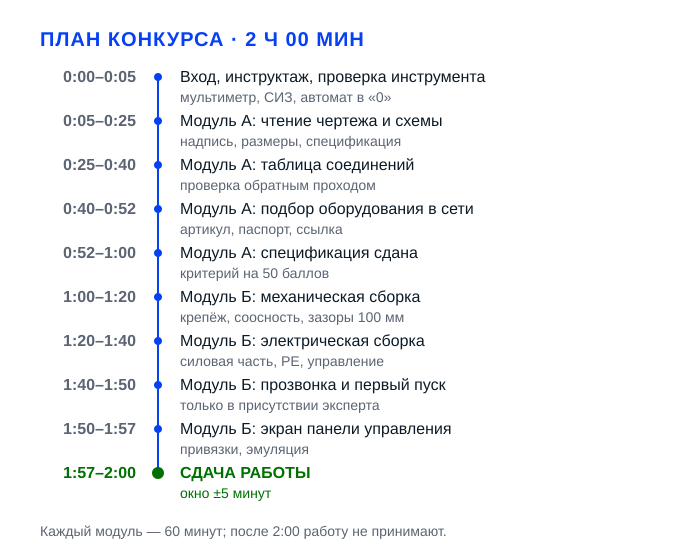
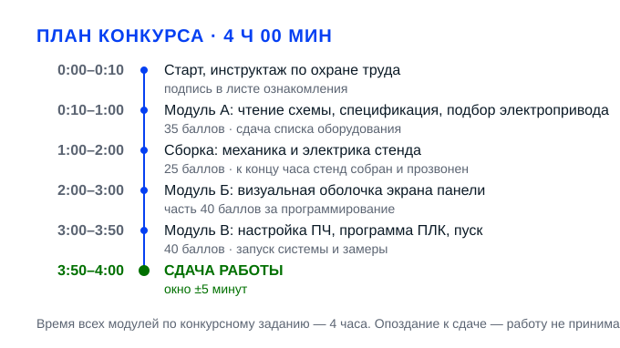
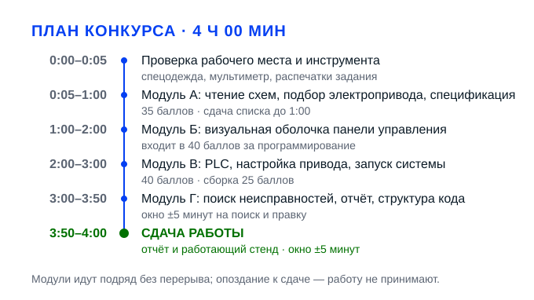

Электропривод и автоматика (Р)
Задания ниже — официальные файлы «Абилимпикс» (источник: abilympics-russia.ru), разложенные по категориям. Решения написаны по тексту задания, регламенту и критериям оценки; в них указано, что именно проверяет эксперт.
Школьник
14–16 лет, базовый уровень заданияВыдержка из официального конкурсного задания: страницы, относящиеся к категории «Школьник» (стр. 8–10 источника).
Пошаговое решение
Конкурсное задание категории «Школьники» состоит из двух модулей по 60 минут: модуль А — чтение электрических схем и подбор оборудования, модуль Б — программирование панели управления. Всего на работу отводится 2 часа, а оценивают её по двум измеримым критериям: проектирование комплектации стенда и оформление спецификации системы цифрового электропривода — 50 баллов, электрическая и механическая сборка этой системы — ещё 50 баллов. Обратите внимание на пропорцию: половина результата набирается за документ, который многие участники считают второстепенным, и теряют эти баллы целиком. Ниже — пошаговый разбор от входа на площадку до короткого доклада эксперту, с цифрами из задания, типичными ошибками и тем, что именно эксперт проверяет в каждый момент.

Задача 1. Войти на площадку и подготовить рабочее местоМодуль А · база под 50 баллов за спецификацию
Первые пятнадцать минут решают, будет ли вам удобно работать оставшиеся два часа. На площадке этой компетенции есть напряжение выше 60 В, вращающийся вал двигателя и инструмент, который нельзя приносить с собой. Поэтому подготовка — это не формальность перед стартом, а отдельный навык: осмотреть место, проверить инструмент, разложить документы так, чтобы чертёж, схема и техническое задание не мешали друг другу. Ниже — как пройти этот этап без потерь и без спешки.
Действие 1.1. Пройти инструктаж и надеть средства защиты
Шаг 1.1.1
Входим на площадку заранее, находим своё рабочее место по номеру и сначала проходим инструктаж: слушаем, где расположены отключающий щит, аптечка, огнетушитель и запасной выход, затем ставим подпись в листе прохождения инструктажа по форме, определённой оргкомитетом. Подпись ставим до того, как возьмём в руки инструмент, а не «потом, между делом»: без неё участника к работе не допускают, и это правило действует на всех категориях, включая школьников.
Раздел охраны труда конкурсного задания начинается с того, что все участники знакомятся с инструкцией, планом эвакуации, местами расположения медицинского кабинета и питьевой воды, и подтверждают ознакомление подписью. Это не формальность: на стенде есть цепи с напряжением выше 60 В, а рядом — вращающийся вал, и снимать риск вы должны уметь сами. Кроме того, спокойный вход задаёт ритм: два модуля по 60 минут не любят суеты в первые минуты.
Лист подписан, номер рабочего места совпадает с указанным в задании, вы можете показать рукой, где щит и где аптечка. Посмотрите на часы: до старта должно остаться не меньше десяти минут — этого хватает на осмотр стенда и раскладку инструмента.
Частая ошибка — сразу сесть за чертёж, а инструктаж подписать «по дороге»: старт уже идёт, а рабочее место не осмотрено, и первая же неисправность застаёт врасплох. Вторая — не запомнить, где отключающий щит: если что-то пойдёт не так, искать его будет поздно, а время модуля не остановится.
Эксперт проверяет наличие подписи в листе инструктажа до старта и отдельно отмечает, осмотрел ли участник рабочее место, прежде чем начал работать. Отдельно он отмечает, задаёт ли участник вопросы до старта.
Шаг 1.1.2
Надеваем закрытую обувь на нескользящей подошве и одежду с длинным рукавом, убираем волосы под резинку или головной убор, снимаем часы, кольца, браслеты и длинные серьги. Рукава застёгиваем или подворачиваем так, чтобы они не свисали к валу и к клеммам, а не «как получится». Сумку и телефон оставляем в отведённом месте: на площадку их проносить нельзя.
Металлическое кольцо или браслет на руке, которая тянется к клеммнику под напряжением, — это короткое замыкание через тело, а свисающий рукав у вращающегося вала — реальный захват. Требование к спецодежде и средствам индивидуальной защиты прописано в разделе охраны труда конкурсного задания, и его соблюдение оценивается наравне с техническим результатом. Аккуратный внешний вид ещё и читается экспертом как готовность к работе.
Проверьте себя по трём признакам: волосы не выбиваются ни спереди, ни сзади; на руках нет металла и часов; обувь закрытая и сухая. Попросите волонтёра или соседа посмотреть со спины — самому затылок не видно.
Оставить обручальное кольцо «оно не мешает» — самая частая ошибка: кольцо замыкает цепь управления 24 В и выбивает предохранитель, а объяснение «я так привык» на площадке не принимается. Вторая — прийти в открытой обуви и футболке, рассчитывая надеть спецодежду позже.
Смотрит на руки и голову в первые минуты, а дальше — по ходу работы: снял ли участник металл, не закатал ли рукава на клеммник, остаётся ли одежда чистой.
Шаг 1.1.3
Выкладываем на стол то, что разрешено принести с собой: набор инструмента (отвёртки, кусачки, плоскогубцы), мультиметр и распечатки с заданием. Электроинструмент, флешки и мобильные телефоны остаются вне площадки — это прямой запрет из конкурсного задания. Если принесённый инструмент с изолированными ручками и на нём нет трещин на изоляции, он допускается к работе, иначе его лучше сразу отложить.
Список разрешённого и запрещённого в задании короткий, но проверяется он жёстко: за электроинструмент и телефон участника могут снять с площадки, и никакие баллы за спецификацию этого не компенсируют. Одновременно это экономия времени: свой мультиметр вы уже знаете, и на прозвонке не придётся разбираться с чужим прибором.
На столе только разрешённые позиции, инструмент с целой изоляцией, мультиметр ваш и рабочий. Телефон — в сумке вне зоны площадки. Проверьте, что вам не понадобится отлучаться за чем-то в середине модуля.
Принести шуруповёрт «чтобы быстрее закрутить крепёж» — это запрещённый электроинструмент, и разговор с главным экспертом будет коротким. Вторая ошибка — работать отвёрткой со сколотой изоляцией: рука в 5 мм от токоведущей части.
Проверяет содержимое стола при входе и может пройти повторно в середине конкурса: появление телефона или флешки фиксируется как нарушение. При этом он смотрит и на исправность изоляции рукояток инструмента.
Действие 1.2. Осмотреть стенд и рабочее место
Шаг 1.2.1
Обходим рабочее место по периметру и смотрим на то, что должно быть по норме: площадь рабочего места не меньше 3000 на 1900 мм, ширина прохода между местами — 1,5 м, освещённость не ниже 300 люкс, у пульта лежит резиновый коврик. Проверяем, что стол не шатается, а кресло регулируется по высоте: за два часа работы это важно не меньше, чем исправный мультиметр.
Все эти цифры взяты из раздела минимальных требований к оснащению рабочих мест: 3000 на 1900 мм, проход 1,5 м, освещение 300 люкс, коврики у пультов под напряжением более 60 В. Если чего-то не хватает, вы имеете право сказать об этом до старта, а не искать розетку в темноте на втором часу. Заодно осмотр выявляет то, что сломано до вас.
Коврик на месте и не скользит, свет падает на чертёж и на клеммники, проход свободен, ничего не лежит на полу. Отойдите на два шага и посмотрите на место целиком: если что-то выглядит не так, скажите об этом сразу.
Сесть работать, не заметив, что коврик сдвинут или лампа мигает: на прозвонке приходится наклоняться к схеме вплотную, и ошибка чтения обходится дороже, чем минута на осмотр. Вторая — молча смириться с неудобным столом.
Обращает внимание, как участник обустроил место: свободный проход, аккуратно разложенный инструмент, отсутствие вещей на полу. Заодно фиксируется, не мешают ли посторонние вещи работе с чертежом.
Шаг 1.2.2
Осматриваем стенд без прикосновений к токоведущим частям: цела ли изоляция проводов, закрыты ли клеммники и коробки выводов, есть ли заземляющий проводник PE, в каком положении автоматический выключатель. Автомат должен стоять в положении «0», а на приводе не должно быть следов подгорания и запаха горелой изоляции. Осмотр ведём глазами и фонариком, руками ничего не трогаем.
В требованиях охраны труда прямо сказано: не производить работы при неисправном электрооборудовании — нарушен заземляющий контур, пробита изоляция, сопротивление изоляции ниже допустимого, не закрыты клеммники. Проверка занимает минуту, а последствия работы на неисправном стенде — это не потерянные баллы, а травма.
Автомат выключен, клеммники закрыты, PE на месте и затянут, провода без трещин и потёртостей. Если нашли дефект — показываете эксперту и не начинаете сборку до его решения. Результат осмотра лучше проговорить вслух, чтобы он был зафиксирован.
Начать сборку на стенде с открытым клеммником, потому что «так удобнее подключать»: это нарушение, которое эксперт фиксирует сразу, и дальше любая ошибка будет трактоваться против вас. Вторая — включить автомат, чтобы «посмотреть, работает ли».
Проверяет положение автомата и состояние клеммников перед подачей напряжения и в момент, когда участник начинает монтаж. Если дефект найден, он решает, продолжать работу или менять стенд.
Шаг 1.2.3
Проверяем мультиметр до работы: включаем, ставим режим прозвонки, замыкаем щупы между собой — должен раздаться звук и показания упасть почти до нуля. Затем переключаем на измерение постоянного напряжения и проверяем батарею по индикатору. Инструмент раскладываем по зонам: отвёртки и ключи — справа, мультиметр и щупы — перед собой, крепёж — в лотке, а не россыпью.
Мультиметр — единственный прибор, которым вы подтверждаете отсутствие напряжения и целостность цепи, и если он врёт, врёт вся ваша проверка. Проверка «щупы накоротко» занимает пять секунд и отсекает половину сюрпризов на прозвонке. Раскладка по зонам экономит десятки секунд на каждом переходе, а за два часа их набирается много.
На замыкании щупов прибор пищит и показывает около нуля, на разомкнутых — единицу в старшем разряде или «OL». Батарея в норме, щупы целые, наконечники не обломаны. Если прибор не пищит, работать им нельзя: меняем батарею или щупы.
Работать прибором с севшей батареей: показания «плывут», и вы принимаете исправную цепь за оборванную. Вторая ошибка — оставить мультиметр в режиме измерения тока и сунуть щупы в цепь: предохранитель прибора сгорит, а измерение придётся отложить.
Смотрит, проверяет ли участник прибор перед измерениями и понимает ли, в каком режиме и что именно он измеряет. Отдельно отмечает, не измеряет ли участник «на глаз», без прибора.
Действие 1.3. Разобрать пакет документов и спланировать время
Шаг 1.3.1
Раскладываем выданные документы на три части: конкурсное задание с модулями и критериями, чертёж со спецификацией и техническое задание на панель управления. Читаем именно ту редакцию, которую выдали на площадке: в задание вносят до 30 процентов изменений, и они касаются технических характеристик или самого технического задания при неизменном списке оборудования.
Тридцать процентов изменений — это официально разрешённая правка, и она почти всегда меняет цифры: номинал, уставку, набор надписей на экране. Участник, который помнит задание прошлого года, уверенно делает не то, что просят, и теряет баллы не из-за неумения, а из-за невнимательности. Разложенные документы ещё и не мешают друг другу на столе.
У вас на столе три отдельные стопки, и вы можете за десять секунд найти любой пункт. Сверьте номер листа и дату редакции с тем, что объявил эксперт перед стартом. Если эксперт объявил изменения, отметьте их на листе цветным маркером.
Работать по памяти или по прошлогоднему заданию: изменения в 30 процентов как раз и придуманы для того, чтобы это выявить. Вторая ошибка — держать все листы одной кучей и искать нужный пункт в середине модуля.
Перед стартом объявляет, какие изменения внесены, и потом смотрит, учтены ли они в спецификации и на экране панели. По его вопросам видно, читал ли участник изменения или пропустил их.
Шаг 1.3.2
Читаем техническое задание на панель дважды: первый раз целиком, чтобы понять сценарий, второй — с карандашом, выписывая в лист требований всё, что можно проверить: какие экраны нужны, какие надписи, в каких единицах показывать частоту и ток, что должно происходить при аварии. Каждый пункт формулируем так, чтобы его можно было отметить галочкой. Пункты нумеруем, чтобы на них можно было ссылаться при докладе.
Критерий по панели — это созданная визуальная оболочка для графического экрана согласно техническому заданию, и оценивают её именно на соответствие пунктам ТЗ, а не на красоту. Выписанные требования превращаются в чек-лист, по которому вы потом сами себя проверите перед сдачей, — это дешевле, чем искать пропущенный экран за пять минут до конца.
В листе требований не меньше пяти-шести проверяемых пунктов, у каждого указано, на каком экране он реализуется. Ни одного пункта вида «сделать красиво» — только то, что можно предъявить. Если пункт нельзя проверить нажатием или взглядом, переформулируйте его.
Прочитать ТЗ один раз и начать рисовать «как понял»: к концу модуля выясняется, что единицы измерения не те и аварийный экран не сделан. Вторая ошибка — выписывать требования после сборки, когда переделывать уже нет времени.
Сверяет экран с ТЗ по пунктам и отдельно смотрит, есть ли аварийный экран и правильные единицы измерения. Отдельно спрашивает, какой экран участник считает главным и почему.
Шаг 1.3.3
Составляем план на два часа на одном листе: на модуль А отводим 60 минут вместе с подбором оборудования и оформлением спецификации, на модуль Б — оставшиеся 60 минут на сборку и панель. Внутри каждого модуля ставим три контрольные точки: к 25-й минуте чертёж прочитан, к 45-й оборудование подобрано, к 55-й спецификация сдана. План держим на виду, а не в голове.
Время модулей в задании жёсткое: по 60 минут на модуль и 2 часа на всё, и именно оно чаще всего и убивает результат — не техника, а неумение остановиться. Контрольные точки нужны потому, что чтение чертежа затягивает: чем глубже разбираешься, тем интереснее, а спецификация при этом не написана. План на бумаге возвращает к реальности без внутренних споров.
На листе есть время старта, три контрольные точки и время сдачи. Через двадцать пять минут вы сверяетесь с ним и видите, идёте в графике или отстаёте. Если отстаёте больше чем на пять минут, сокращайте глубину, а не сдачу.
Планировать «по ощущениям»: к 50-й минуте чертёж разобран идеально, а спецификация, за которую дают половину баллов, не начата. Вторая ошибка — потратить начало модуля Б на доделку модуля А. И третья — не оставить в плане времени на саму сдачу спецификации.
Наблюдает, укладывается ли участник в контрольные точки, и фиксирует состояние работы на момент окончания каждого модуля. Его интересует, назовёт ли участник время сдачи без подсказки.
Задача 2. Прочитать чертёж и электрическую схемуМодуль А · 50 баллов за комплектацию и спецификацию
Модуль А начинается с чтения: пока чертёж не разобран, подбирать оборудование нельзя — вы не знаете ни типоразмеров, ни количества, ни параметров. Читать нужно в определённом порядке: сначала рамка и основная надпись, потом виды и размеры, потом спецификация чертежа, и только затем электрическая схема — от ввода питания к двигателю и отдельно по цепи управления. Такая последовательность не даёт утонуть в деталях и сразу показывает, каких данных в документе не хватает.
Действие 2.1. Разобрать чертёж и его спецификацию
Шаг 2.1.1
Начинаем с рамки и основной надписи в правом нижнем углу: читаем обозначение документа, наименование изделия, масштаб, номер листа и общее число листов. Если листов несколько, сразу раскладываем их по порядку и проверяем, что все на месте. Отдельно смотрим, есть ли на чертеже ссылки на другие документы — на схему электрическую принципиальную, на ведомость покупных изделий.
Основная надпись — это паспорт чертежа: по ней понятно, что именно вы собираете и в каком масштабе читать размеры. Пропущенный лист означает пропущенный узел, а узел, которого нет в спецификации, — это потерянные баллы за комплектацию, потому что позиция просто не попадёт в список. Ссылки в надписи экономят время: нужная схема находится за десять секунд.
Вы можете назвать обозначение чертежа, его масштаб и число листов, и у вас на столе лежат все листы по порядку. Все упомянутые в надписи документы найдены. Если лист один, это стоит проговорить: значит, остальные документы не приложены.
Начать смотреть сразу на виды и размеры, пропустив надпись: потом выясняется, что чертёж относится к другому исполнению стенда. Вторая ошибка — читать масштаб «на глаз» и брать размеры с экрана вместо числовых значений.
Смотрит, открыл ли участник чертёж с основной надписи, и спрашивает обозначение документа — это первый признак, что документ читают, а не разглядывают.
Шаг 2.1.2
Переходим к изображениям: находим главный вид, виды сверху и сбоку, разрезы и сечения, затем собираем габаритные размеры — длину, ширину, высоту всей сборки. Отдельно выписываем присоединительные и установочные размеры: межцентровые расстояния под крепёж, диаметры отверстий, посадочные поверхности под двигатель и под панель. Размеры берём только с числовых значений, а не измерением линейкой по картинке.
Именно установочные размеры определяют, встанет ли подобранное оборудование на место: двигатель с другим диаметром вала или другим межцентровым расстоянием просто не закрепится, и вся механическая сборка развалится. Габариты нужны ещё и для зазоров охлаждения преобразователя частоты. Масштаб на печати может быть нарушен, поэтому число над размерной линией — единственный надёжный источник.
У вас выписано не меньше шести-восьми размеров, и каждый имеет обозначение по чертежу: габарит, посадочный, крепёжный. Сверьте два-три размера между видами — они должны совпадать. Расхождение в два-три миллиметра — уже повод перечитать чертёж.
Мерить линейкой по изображению: на распечатанном чертеже масштаб часто не тот, и ошибка в 10 мм превращается в несовпадающие отверстия. Вторая — выписать только габарит и забыть про межцентровые расстояния.
Проверяет, называет ли участник размеры числами и ссылается ли на конкретные виды, а не «примерно вот здесь». Если участник путает габарит и установочный размер, это видно сразу.
Шаг 2.1.3
Читаем спецификацию к чертежу как таблицу: позиция, обозначение, наименование, количество, примечание. Идём строго по возрастанию позиций и для каждой ставим галочку. Наименования выписываем полностью, вместе с типом исполнения, потому что «автоматический выключатель» без номинала и числа полюсов — это не позиция, а заготовка для ошибки. Позиции, которых нет на изображении, отмечаем отдельно.
Спецификация — готовый каркас будущего списка оборудования, и если она прочитана правильно, половина работы по критерию на 50 баллов уже сделана. Количество из спецификации — это то, что эксперт сверит с вашей заявкой построчно, поэтому расхождение в одну единицу читается как невнимательность ко всему документу.
Все позиции отмечены, количество переписано цифрами, у каждой строки есть тип и основные параметры. Число отмеченных строк совпадает с последней позицией в таблице. Если число строк не совпало, ищите пропущенную позицию, а не закрывайте таблицу.
Читать спецификацию по диагонали и брать «примерно десять позиций»: на сборке не хватает двух наконечников и DIN-рейки. Вторая ошибка — переписывать наименование в сокращённом виде, теряя исполнение. Третья — путать номер позиции с номером строки в таблице.
Сверяет заявку участника со спецификацией чертежа построчно и отдельно смотрит, указаны ли типы исполнения. Отдельно смотрит, выписаны ли в заявке единицы измерения.
Шаг 2.1.4
Сверяем чертёж со спецификацией в обе стороны: берём позицию из таблицы и находим её номер на изображении, затем берём видимый на чертеже элемент и ищем его в таблице. Расхождения записываем в отдельный список: чего нет на виде, чего нет в таблице, где количество не совпадает. Спорные места помечаем карандашом на полях. Проверку ведём по порядку позиций, без перескакивания.
Расхождения в документе — не редкость, и правильная реакция на них входит в оценку: эксперт видит, умеет ли участник работать с документацией или переписывает её вслепую. Кроме того, найденное расхождение почти всегда означает забытую позицию, а забытая позиция — это минус баллы и остановка сборки.
Список расхождений составлен, и по каждому пункту вы можете показать место на чертеже и строку в таблице. Если расхождений нет, вы это тоже можете сказать уверенно, а не предположительно. Если расхождений больше трёх, перечитайте таблицу заново.
Обнаружить расхождение и промолчать, додумав «наверное, так и надо»: на сборке не хватает крепежа, и вы тратите время модуля на поиски. Вторая ошибка — сразу спорить с экспертом вместо того, чтобы показать документ.
Спрашивает, нашёл ли участник несоответствия, и оценивает, как он их зафиксировал и сформулировал. По списку расхождений видно, читал ли участник документ целиком.
Действие 2.2. Прочитать электрическую схему
Шаг 2.2.1
Открываем схему электрическую принципиальную и первым делом находим ввод питания: фазные проводники, нейтраль и защитное заземление, затем аппарат на вводе — автоматический выключатель или вводной автомат. Читаем надписи над линиями: род тока, напряжение, частоту. Дальше определяем, что находится в силовой части, а что в цепи управления, и мысленно делим лист на две половины.
Без понимания, где ввод и где защита, невозможно ни посчитать номиналы, ни правильно собрать силовую часть. Род тока и напряжение определяют выбор всего остального: преобразователь частоты на 380 В и на 220 В — это разные приборы с разными схемами подключения. Деление листа на силовую часть и управление — базовый приём чтения, он экономит четверть времени модуля.
Вы показываете пальцем ввод, автомат, PE и можете назвать напряжение и род тока. Силовая часть и цепь управления обозначены у вас на листе разными пометками. Проверьте заодно, есть ли на вводе защита от перегрузки, а не только от КЗ.
Начать читать схему с середины, с блока преобразователя: теряется логика питания, и потом непонятно, откуда взялось напряжение на клеммах. Вторая ошибка — не найти PE и считать, что заземление «где-то есть».
Просит показать ввод и защитный аппарат: по этому ответу сразу видно, читает участник схему или угадывает. Ответ «где-то здесь» вместо обозначения считается ошибкой чтения.
Шаг 2.2.2
Проходим силовую цепь по порядку от ввода до двигателя и выписываем обозначения каждого элемента: вводной автомат, контактор или преобразователь частоты, тепловое реле или защита в приводе, клеммная колодка, двигатель. Для каждого элемента фиксируем то, что нужно для подбора: номинальный ток, напряжение катушки, мощность, число полюсов, тип исполнения. Рядом с двигателем смотрим обозначение соединения обмоток.
Силовая цепь — это та часть, по которой подбирают восемь из десяти позиций спецификации, и каждая позиция оценивается в общем критерии на 50 баллов. Ошибка в номинале автомата или в напряжении катушки контактора — это не «мелкая неточность»: оборудование не подойдёт, и сборка не запустится. Схема соединения обмоток определяет, как подключать двигатель к преобразователю.
Выписанная цепочка читается как список: от ввода до двигателя, без пропусков. У каждого элемента есть минимум два параметра, а у двигателя — мощность, напряжение и схема соединения обмоток. Если параметр не указан на схеме, его берут из спецификации чертежа.
Пропустить тепловое реле или защиту в приводе: в спецификации появляется лишняя позиция, а нужная отсутствует. Вторая ошибка — не посмотреть соединение обмоток и подключить двигатель «звездой» там, где нужен «треугольник».
Сверяет список участника с силовой цепью схемы и отдельно проверяет параметры преобразователя и двигателя. Особенно его интересуют параметры преобразователя и защита двигателя.
Шаг 2.2.3
Разбираем цепь управления: находим источник питания цепей управления, кнопки «Пуск» и «Стоп», аварийный останов, концевые выключатели, датчики и входы контроллера или преобразователя. Для каждой цепи отмечаем, что она делает: включает, отключает, блокирует, показывает. Отдельно выписываем всё, что идёт на панель оператора: какие сигналы она принимает и какие выдаёт.
Визуальная оболочка панели, которую требуют во втором модуле, строится именно на этих сигналах: кнопка на экране должна быть привязана к конкретному входу или тегу, а индикатор — к конкретному значению. Без разобранной цепи управления экран получается красивым, но ни к чему не подключённым, и баллы за соответствие ТЗ не набираются.
У вас есть список сигналов с направлением: вход или выход, и с назначением. Аварийный останов найден отдельной строкой — он не должен быть программным. Если сигнал непонятен, отметьте его вопросом и уточните у эксперта.
Считать, что аварийный останов можно сделать кнопкой на экране: по требованиям безопасности он выполняется аппаратно, разрывая цепь. Вторая ошибка — не выписать сигналы панели и собирать экран по интуиции.
Смотрит, понимает ли участник разницу между аппаратным и программным остановом, и проверяет привязку элементов экрана к сигналам. По вопросам участника видно, понимает ли он назначение цепи.
Действие 2.3. Составить таблицу соединений
Шаг 2.3.1
Чертим на листе таблицу из шести столбцов: откуда, куда, тип провода, сечение, цвет или маркировка, номер клеммы. Заполняем её по схеме сверху вниз, начиная с силовых цепей, затем цепи управления. Каждую строку пишем так, чтобы по ней можно было соединить, не открывая схему повторно. Таблицу ведём на одном листе, чтобы её было видно целиком, и не начинаем вторую.
Таблица соединений — это рабочий документ монтажника, и на конкурсе она превращается в защиту от ошибок: вместо того чтобы держать схему в голове, вы идёте по строкам. Сечение и цвет в таблице нужны не для красоты — по ним потом проверяют правильность монтажа, а неправильное сечение в силовой цепи снимает баллы за сборку.
В таблице заполнены все шесть столбцов, число строк совпадает с числом соединений на схеме, ни одна строка не заканчивается словами «и так далее». Если строка заканчивается словами «и так далее», она не заполнена.
Заполнить таблицу наполовину и дальше монтировать «по памяти»: именно на этом месте появляются перепутанные фазы и незаземлённый корпус. Вторая ошибка — не указывать сечение, а потом взять первое, что попалось под руку.
Может попросить показать таблицу соединений: аккуратно заполненная таблица читается как признак профессионального подхода. Если таблицы нет, он может попросить составить её на месте.
Шаг 2.3.2
Назначаем маркировку проводников строго по обозначениям схемы, а не по цвету из головы: на каждый провод клеим бирку с обозначением цепи, наконечник маркируем до подключения, а не после. Для силовых цепей используем цвет, принятый для фаз, нейтрали и заземления, для цепей управления — единый цвет с маркировкой. Бирки ставим с двух сторон провода, если он длиннее полуметра.
Маркировка — это то, по чему эксперт за две минуты понимает, собран ли стенд по схеме или «как получилось». Кроме того, при поиске ошибки в собственной сборке бирки экономят время: вы находите цепь, а не прозваниваете всё подряд. Замаркированный провод нельзя перепутать при повторной сборке после проверки.
На каждом проводе есть бирка, совпадающая с обозначением на схеме, и цвет соответствует назначению цепи. Проверьте три провода подряд наугад — обозначения должны находиться на схеме без поиска. Бирка должна читаться, а не быть заклеенной стяжкой или изолентой.
Промаркировать провода после монтажа, когда они уже уложены в жгут: половина бирок окажется не на том проводе. Вторая ошибка — использовать один цвет для всех цепей, включая заземление. Третья — подписывать бирки от руки неразборчиво, «для себя».
Проверяет маркировку выборочно: берёт провод и просит назвать его цепь по схеме. Если бирок нет совсем, вопрос закрывается быстро и не в пользу участника.
Шаг 2.3.3
Проверяем таблицу обратным проходом: начинаем от двигателя и идём к вводу, сверяя каждое соединение со схемой. Затем проходим по цепи управления от кнопок к входам контроллера. Каждую найденную нестыковку исправляем сразу, в таблице, а не в памяти, и помечаем исправленную строку галочкой другого цвета. Обратный проход делаем медленно, по одной строке, без спешки.
Прямой проход и обратный почти никогда не дают одинаковый результат: человек, читая сверху вниз, «дорисовывает» пропущенное. Обратный проход стоит три-четыре минуты и вылавливает именно те ошибки, которые потом превращаются в неподключённый провод в шкафу. Исправление в таблице, а не в голове, нужно потому, что через двадцать минут вы будете помнить не то, что записали, а то, что кажется логичным.
Обратный проход закончен, число строк в таблице не изменилось самопроизвольно, все исправления внесены. Таблица читается без схемы — это главный признак, что она полная. Если таблица читается только со схемой в руках, в ней не хватает данных.
Пропустить обратный проход из-за нехватки времени: потом на прозвонке находится цепь, которой нет в таблице. Вторая ошибка — исправлять таблицу «в уме» и надеяться, что запомнится. Третья — оставить в таблице строки, которых нет на схеме.
Наблюдает, сверяется ли участник с документом в процессе монтажа, и отмечает случаи, когда работу делают «по памяти». Он смотрит и на то, исправляются ли ошибки по ходу или копятся к сдаче.
Задача 3. Подобрать оборудование и оформить спецификациюКритерий 1 · 50 баллов
За этот критерий дают половину всех баллов конкурса: проектирование комплектации стенда и оформление спецификации системы цифрового электропривода — 50 из 100. Оценивают не красоту списка, а его полноту и правильность: совпадает ли каждая позиция с чертежом, подходит ли оборудование по параметрам друг к другу и можно ли по вашей спецификации закупить и собрать стенд. Поиск в интернете разрешён и даже предполагается, поэтому артикул и ссылка на источник — часть работы, а не украшение.
Действие 3.1. Составить перечень позиций и определить параметры
Шаг 3.1.1
Берём спецификацию чертежа и превращаем её в рабочий перечень: напротив каждой позиции выписываем параметры, которые нужны для заказа. Для автоматического выключателя — номинальный ток, число полюсов, характеристика расцепления; для преобразователя частоты — мощность, напряжение питания, число фаз, тип управления; для кабеля — число жил, сечение, наличие экрана; для двигателя — мощность, напряжение, число оборотов, тип монтажа.
Список без параметров невозможно ни заказать, ни проверить: «контактор» без напряжения катушки и числа полюсов превращается в угадайку, а именно по таким строкам эксперты и снимают баллы. Параметры берутся из схемы, прочитанной в предыдущей задаче, поэтому здесь вы пожинаете результат аккуратного чтения — или его отсутствия.
У каждой строки перечня не меньше двух числовых или однозначных параметров. Если напротив позиции стоит только наименование, значит, параметр не найден в документе и его нужно искать, а не оставлять пустым.
Переписать спецификацию дословно, без параметров: список выглядит аккуратно, но не отвечает ни на один вопрос сборки. Вторая ошибка — подбирать по принципу «похоже по картинке». Третья ошибка — брать параметры из памяти, а не из прочитанной схемы.
Читает перечень построчно и просит объяснить, почему выбран именно этот номинал или это исполнение. Ответ «так принято» вместо ссылки на схему его не устраивает.
Шаг 3.1.2
Считаем количество по каждой позиции, не забывая то, что на чертеже не вынесено отдельными номерами: крепёж, наконечники, кабельные вводы, DIN-рейку, маркировочные бирки, стяжки, заглушки. Для крепежа считаем по отверстиям на виде сборки, для наконечников — по числу подключаемых жил, для бирок — по числу проводов с двух сторон. Всё, что посчитано, записываем цифрой, а не словом «комплект».
Расходные и крепёжные позиции — самая частая причина, по которой сборка встаёт на середине: кабельный ввод стоит копейки, но без него провод в шкаф не завести. Эксперт сверяет количество построчно, и строка «крепёж — комплект» читается как отказ от работы. Кроме того, точный счёт экономит время на площадке: вы не ищете, чем закрепить преобразователь.
По каждой позиции стоит число, и оно объяснимо: вы можете сказать, из чего оно получилось. Сумма по крепежу совпадает с числом отверстий на установочном виде. Если число не объясняется, значит, позиция посчитана «на глазок».
Писать «комплект» или «по потребности»: эксперт не может проверить такую строку и балл не ставит. Вторая ошибка — забыть наконечники и бирки, посчитав только «серьёзное» оборудование. Третья ошибка — считать крепёж «по одному на аппарат».
Сверяет количество с чертежом и отдельно смотрит, есть ли в списке крепёж и расходные материалы. Строки без числа он отмечает как незаполненные и балл за них не ставит.
Шаг 3.1.3
Определяем критичные параметры, от которых зависит работоспособность: номинальный ток вводного автомата относительно суммарной нагрузки, соответствие преобразователя частоты мощности двигателя, сечение силового кабеля по току и способу прокладки, степень защиты корпусов по месту установки. Для каждого критичного параметра записываем не только значение, но и обоснование в одно предложение.
Совместимость — это то, что отличает спецификацию от списка покупок: преобразователь слабее двигателя выйдет из строя при первом пуске, а автомат меньше по току будет отключаться при нормальной работе. Обоснование нужно для защиты работы перед экспертом: одно предложение «ток привода меньше номинала автомата, поэтому защита не сработает ложно» стоит дороже трёх абзацев общих слов.
Критичные параметры выписаны отдельным блоком, по каждому есть короткое обоснование. Проверьте цепочку «двигатель — преобразователь — автомат — кабель»: значения не должны противоречить друг другу. Если цепочка не сходится, меняйте номинал, а не обоснование.
Подобрать преобразователь «на глаз, лишь бы по мощности» и не сверить напряжение и число фаз: прибор приедет на 220 В вместо 380 В. Вторая ошибка — взять кабель тоньше нужного, потому что он мягче гнётся.
Задаёт вопрос о согласовании мощностей и токов: это самый быстрый способ понять, разбирается ли участник в электроприводе. Он может попросить назвать ток привода по паспорту.
Шаг 3.1.4
Проверяем совместимость по механике и по управлению: диаметр и длина вала двигателя против посадочного места, тип монтажа, направление выхода вала, наличие места под энкодер или датчик. По управлению сверяем тип сигнала задания — аналоговый или по сети — с тем, что умеет панель и контроллер. Расхождения фиксируем сразу и меняем позицию, а не надеемся «подогнать на месте».
Механическое несовпадение нельзя исправить программно: двигатель с другим диаметром вала не войдёт в муфту, и механическая сборка, за которую дают вторые 50 баллов, остановится. Несовпадение по управлению проявляется позже, когда экран панели отправляет сигнал, которого привод не понимает. Проверка на бумаге стоит две минуты, переделка на стенде — полчаса.
По каждой паре «двигатель — нагрузка» и «привод — панель» есть подтверждение совпадения: размер, тип сигнала, протокол. Спорные пары выписаны отдельно и либо решены, либо согласованы с экспертом. Каждая спорная пара должна быть либо решена, либо объяснена эксперту.
Заказать привод с управлением по сети, когда панель выдаёт аналоговый сигнал: интерфейсы не встречаются, и экран остаётся декорацией. Вторая ошибка — не проверить направление вала и собирать редуктор «наоборот».
Проверяет, указан ли в спецификации тип сигнала управления и совпадает ли он с техническим заданием на панель. Если тип сигнала не указан, позиция считается подобранной не полностью.
Действие 3.2. Найти оборудование в интернете
Шаг 3.2.1
Ищем каждую позицию на сайте производителя или официального дистрибьютора, а не в первой попавшейся подборке картинок. Вводим в поиск серию и характеристику, например «преобразователь частоты 0,75 кВт 380 В IP20», и открываем страницу товара целиком. Работаем в одном-двух проверенных источниках на всю спецификацию, чтобы обозначения не путались. Страницу не закрываем до тех пор, пока данные не перенесены в таблицу.
Задание прямо предполагает подбор оборудования с использованием сети интернет, и оценивается результат, а не процесс: нужен артикул, который существует и продаётся. Сайт производителя даёт полное обозначение и документацию, а картинка из поиска — только внешний вид, по которому нельзя проверить ни напряжение, ни степень защиты.
Для позиции открыта страница товара, на ней видны артикул и характеристики. Вы можете назвать производителя и серию без подглядывания в список. Если страница не открывается, ищите позицию у другого дистрибьютора.
Брать артикул из чужой презентации или из ответа поисковика: обозначение оказывается неполным или устаревшим. Вторая ошибка — искать по русскому названию без серии и получать десять разных приборов. Третья — брать цену из объявления, где нет характеристик.
Проверяет, открывались ли страницы товаров: в спецификации должны быть артикулы, а не описания. Пустые примечания без ссылок он считает неподтверждённым подбором.
Шаг 3.2.2
С открытой страницы выписываем в спецификацию пять вещей: полное наименование, артикул, ключевые характеристики, единицу измерения и количество. Если есть руководство или паспорт в PDF, открываем его и сверяем габариты и схему подключения — они нужны для сборки. Ссылку на страницу и дату просмотра записываем в примечание к строке. Ссылку сохраняем в том виде, в котором её можно открыть потом.
Артикул и ссылка делают спецификацию проверяемой: эксперт может убедиться, что позиция реальна, и это снимает половину сомнений в правильности подбора. Габариты из паспорта нужны ещё и для компоновки шкафа: преобразователь с глубиной 200 мм не встанет в корпус на 150 мм, и это выяснится уже на сборке.
В строке есть артикул, ссылка и дата. Габариты выписаны для тех позиций, которые крепятся в шкаф. Наименование совпадает с тем, что на странице, буква в букву. Если ссылка не открывается с чужого компьютера, она бесполезна.
Записать артикул по памяти после закрытия страницы: одна цифра теряется, и позиция превращается в другой номинал. Вторая ошибка — не смотреть габариты и планировать компоновку «по опыту». Третья — записывать наименование своими словами, а не с сайта.
Открывает одну-две ссылки из спецификации и сверяет характеристики с тем, что записал участник. Он проверяет, совпадает ли запись с сайтом дословно, включая артикул.
Шаг 3.2.3
Проверяем, что артикул полный: у промышленного оборудования обозначение состоит из серии и набора кодов — исполнение, напряжение питания, напряжение катушки, число полюсов, степень защиты, вариант монтажа. Сравниваем код на странице с расшифровкой в паспорте и убеждаемся, что все нужные коды совпадают с вашими требованиями. Если в обозначении стоит «базовое исполнение», смотрим, что в него входит.
Ошибка в одном символе артикула — самая обидная и самая частая: контактор с катушкой на 24 В вместо 230 В внешне неотличим, но в схеме не работает. Расшифровка артикула по паспорту занимает минуту и превращает строку спецификации в однозначный заказ. Эксперт, который видит расшифровку, понимает, что подбор осознанный.
Для каждой сложной позиции есть расшифровка: какой код что означает и почему выбран именно он. Ни одного артикула с пометкой «уточнить» в сданной спецификации. Если расшифровки нет, значит, артикул взят без проверки по паспорту.
Скопировать первый код из выпадающего списка на странице: он почти всегда соответствует базовому исполнению с другим напряжением катушки. Вторая ошибка — не заметить, что серия бывает на 1 и на 3 фазы.
Просит расшифровать артикул одной позиции: если участник читает код по паспорту, вопрос закрыт. Ответ по памяти, без паспорта, он отличает сразу и балл снижает.
Шаг 3.2.4
Заполняем примечания к строкам: наличие на складе, срок поставки, аналог, если позиция снята с производства. Если нашли замену, указываем и её, и причину замены — «снят с производства, аналог серии такой-то с теми же параметрами». Даты и ссылки держим в одном формате, чтобы таблица читалась как документ. Примечание пишем коротко: одно предложение на позицию, без рассуждений.
В конкурсном задании прямо указано, что изменения могут касаться технических характеристик при неизменном списке оборудования: умение предложить корректный аналог — это ровно тот навык, который проверяют. Единый формат ссылок и дат нужен для проверяемости: эксперт видит, что подбор сделан сейчас, а не переписан из старой работы.
Примечания заполнены у всех спорных позиций, формат дат одинаковый, ссылки открываются. Аналог, если он предложен, совпадает по трём ключевым параметрам. Если аналог отличается по напряжению питания, он не аналог.
Молча заменить позицию на «что было»: спецификация перестаёт соответствовать чертежу, и это минус баллы за комплектацию. Вторая ошибка — предложить аналог, который совпадает по мощности, но не совпадает по напряжению.
Смотрит, обоснованы ли замены, и проверяет, сохранено ли соответствие чертежу после замены. Он смотрит, указана ли причина каждой замены и сохранены ли параметры.
Действие 3.3. Оформить и сдать спецификацию
Шаг 3.3.1
Оформляем таблицу спецификации с шапкой: номер позиции, наименование и тип, артикул, основные характеристики, единица измерения, количество, примечание. Нумеруем строки подряд, единицы пишем сокращённо и единообразно (шт., м, компл.), числа — арабскими цифрами. Над таблицей ставим заголовок с названием системы и датой. Пустых клеток в таблице быть не должно: где данных нет, ставим прочерк.
Спецификация — документ, и оценивают её именно как документ: наличие шапки, нумерации, единиц и единообразия. Строка без единицы измерения неоднозначна: «кабель 4» может означать четыре метра или четыре жилы. Эксперт читает десятки таких таблиц, и аккуратная читается за минуту, а нечитаемая — за пять, с потерей баллов.
Шапка на месте, все семь столбцов заполнены, единицы одинаковые, нумерация без пропусков. Таблицу можно прочитать, не задавая ни одного уточняющего вопроса. Прочерк в примечании допустим, пустая клетка — нет.
Написать список от руки на клочке без шапки и единиц: содержание может быть верным, а баллы сняты за оформление. Вторая ошибка — смешать в одной таблице метры и штуки без указания единиц. Третья — нумеровать строки с пропусками после правок.
Оценивает оформление отдельно от содержания: шапка, нумерация, единицы, отсутствие сокращений «и т.д.». Он отмечает и то, читается ли таблица без увеличительного стекла.
Шаг 3.3.2
Проверяем спецификацию по трём проходам. Первый — сверка с чертежом: каждая позиция чертежа есть в списке, ничего лишнего не добавлено. Второй — проверка параметров: у каждой строки есть характеристики и количество. Третий — проверка совместимости: двигатель, преобразователь, автомат и кабель согласованы по току и напряжению. Найденное исправляем прямо в таблице и перепечатываем только испорченные строки.
Три прохода отвечают на три разных вопроса, которые задаёт эксперт: всё ли учтено, всё ли описано, всё ли работает вместе. Один общий просмотр эти вопросы смешивает, и часть ошибок остаётся. Перепечатка испорченных строк, а не всей таблицы, экономит время, которого в модуле 60 минут.
После трёх проходов ни одной строки с пустым параметром и ни одной позиции чертежа без строки в спецификации. Число позиций совпадает с числом строк. Если какая-то проверка не сделана, скажите об этом сами, до сдачи.
Проверить только на полноту и не проверить совместимость: список полный, но привод не подходит к двигателю. Вторая ошибка — исправлять найденное «в следующей версии», которая не наступит. Третья — проверять только то, что делал сам, и не смотреть чужое.
Наблюдает, проверяет ли участник свою работу перед сдачей: это видно по пометкам и по тому, перепечатывает ли он строки. По пометкам видно, сколько проходов участник реально сделал.
Шаг 3.3.3
Сдаём спецификацию в отведённое время: кладём лист на стол эксперта лицевой стороной вверх, называем число позиций и коротко говорим, на основании чего сделан подбор. Если что-то осталось неподобранным, называем это сами и объясняем причину — так честнее и дешевле по баллам, чем надеяться, что не заметят. Лист не складываем и не подписываем поверх таблицы.
Результат модуля А в задании сформулирован как прочитанный чертёж, подобранное оборудование и составленный список — то есть сдаётся именно список, а не рассказ о нём. Спокойный доклад на три предложения входит в оценку коммуникации и заодно защищает спорные позиции: обоснование, сказанное вовремя, часто превращает сомнение эксперта в балл.
Лист сдан до окончания модуля, число позиций названо, у вас остаётся копия или черновик для второго модуля. Вы можете за тридцать секунд объяснить логику подбора. Если сдача задерживается, предупредите эксперта заранее.
Досочинять спецификацию в последнюю минуту и сдать сырой лист: эксперт оценивает то, что получил, а не то, что вы имели в виду. Вторая ошибка — сдать молча и не суметь объяснить ни одной строки. Третья — сдавать лист, не проверив, все ли страницы на месте.
Принимает лист, задаёт один-два вопроса по позициям и фиксирует время сдачи и полноту. Он фиксирует время сдачи и то, названы ли незавершённые позиции.
Задача 4. Собрать систему электроприводаКритерий 2 · 50 баллов
Электрическая и механическая сборка системы цифрового электропривода — второй критерий на 50 баллов, и он проверяется руками: эксперт смотрит затяжку, зазоры, маркировку, укладку проводов и то, включается ли стенд без замечаний. Модуль Б длится 60 минут, и в нём нужно успеть и механику, и электрику, и проверку перед подачей напряжения. Порядок здесь жёсткий: сначала механика, потом силовая часть, потом управление, и только после прозвонки — включение.
Действие 4.1. Собрать механическую часть
Шаг 4.1.1
Крепим двигатель или мотор-редуктор к плите: сначала наживляем все болты от руки, затем затягиваем крест-накрест, по одному обороту, чтобы плита не повело. Под головки ставим шайбы, под двигатель — ровную прокладку, если она предусмотрена чертежом. Затягиваем до состояния, когда болт перестаёт проворачиваться, но без усилия, которое срывает резьбу в алюминии.
Перекос плиты от неравномерной затяжки — причина вибрации и люфта, а с ними не проходит ни одна механическая сборка. Крест-накрест затягивают именно потому, что при последовательной затяжке один край садится раньше и деталь выгибается. Шайбы распределяют усилие и не дают головке продавить посадочную поверхность.
Двигатель не шатается при нажатии рукой, зазор между плитой и лапами одинаков по всей длине, все болты затянуты. Проверьте пальцем по периметру лапы: щупа быть не должно. Если зазор разный, ослабьте болты и затяните заново, крест-накрест.
Затянуть болты по кругу и не заметить, как плита выгнулась: вал двигателя встаёт с перекосом, и муфта начинает бить. Вторая ошибка — тянуть «до упора» без шайб и сорвать резьбу в корпусе. Третья — крепить двигатель на одну пару болтов «пока держится».
Проверяет затяжку покачиванием и смотрит на равномерность зазора под лапами — это делается за десять секунд. Он проверяет и наличие шайб: их отсутствие видно по вмятинам.
Шаг 4.1.2
Соединяем двигатель с нагрузкой через муфту или редуктор: выставляем соосность так, чтобы полумуфты стояли без перекоса, затем проверяем осевой зазор и проворачиваем вал рукой на полный оборот. Люфт в соединении не должен ощущаться пальцами, а вращение — идти равномерно, без заеданий и щелчков. Крепёж муфты затягиваем после выставки соосности, а не до неё.
Муфта — самое нагруженное место стенда: перекос в полградуса даёт биение, которое через десять минут работы разрушает подшипник. Проворот рукой выявляет заедание, которое на холостом ходу не слышно, но которое съедает пусковой момент. Кроме того, свободное вращение — обязательное условие безопасности перед первым включением.
Вал проворачивается рукой на полный оборот без заеданий, осевой люфт не прощупывается, муфта не задевает кожух или раму. Бирка на валу, если она есть, совпадает с меткой на нагрузке. Если вал проворачивается туго, ищите перекос, а не применяйте силу.
Затянуть муфту до выставки соосности: после затяжки выставить её уже не получится, и биение останется. Вторая ошибка — оставить осевой зазор нулевым, из-за чего подшипник работает на упор. Третья — не проверить, не задевает ли муфта кожух или раму.
Проворачивает вал рукой сам и слушает: равномерный шорох — норма, щелчок или закусывание — замечание. Заодно он смотрит, не оставлен ли кожух муфты снятым.
Шаг 4.1.3
Крепим преобразователь частоты, контроллер и панель на DIN-рейку или на монтажную панель: защёлкиваем до щелчка, проверяем, что аппарат сидит плотно и не качается. Соблюдаем зазоры для охлаждения — сверху и снизу не меньше 100 мм, с боков по указанию паспорта. Аппараты с нагревом ставим выше, чем чувствительные к температуре. Крепление DIN-рейки проверяем нажатием, а не на глаз.
Преобразователь частоты греется, и без зазоров он уходит в защиту по температуре через десять-пятнадцать минут работы — а это выглядит как неисправность стенда и снимает баллы за запуск. DIN-рейка с незащёлкнутым аппаратом — типичная причина того, что модуль «выпал» из шкафа при переносе. Расположение по нагреву продлевает жизнь конденсаторам.
Все аппараты защёлкнуты, зазоры сверху и снизу не меньше 100 мм, панель доступна для нажатия без снятия кожуха. Проверьте рукой: ничего не качается. Если аппарат качается, значит, защёлка не вошла до конца.
Поставить преобразователь вплотную к другому аппарату «чтобы влезло»: через четверть часа защита по температуре, и запуск не состоится. Вторая ошибка — не защёлкнуть защёлку до конца и не заметить этого.
Смотрит на зазоры и на то, доступна ли панель оператора: это первый признак продуманной компоновки. Он измеряет зазор линейкой, если тот выглядит сомнительным.
Шаг 4.1.4
Заводим кабели в шкаф через кабельные вводы, фиксируем жгут стяжками с шагом 100–150 мм, оставляем запас длины на клеммах не меньше 50 мм с плавной дугой. Провода не должны натягиваться, тереться о кромки и пересекать силовые линии под острым углом. Клеммы маркируем бирками с обеих сторон и укладываем жгут так, чтобы он не мешал снятию кожуха. Стяжки обрезаем заподлицо, чтобы не оставить острых концов.
Натянутый провод вырывается из клеммы при первой же вибрации, а провод, трущийся о кромку, перетирает изоляцию — это скрытая неисправность, которая проявится не на конкурсе, а позже, но эксперт её видит сразу. Запас длины нужен для повторного подключения после проверки: обрезанный в упор провод приходится наращивать. Уложенный жгут — это ещё и оценка за качество монтажа.
Провода не натянуты, бирки на месте с двух сторон, жгут не мешает открыванию шкафа, вводы затянуты. Потяните каждый провод пальцами — он не должен двигаться в клемме. Если провод двигается в клемме, протяните её ещё раз.
Стянуть все провода в один тугой жгут вместе с силовыми: наводки на цепи управления дают ложные срабатывания. Вторая ошибка — обрезать провод в упор и потом не иметь возможности переподключить. Третья — обрезать стяжку так, что остаётся острый конец.
Оценивает укладку и маркировку визуально: ровный жгут, отсутствие натяжения, подписанные клеммы. Он смотрит и на то, не перекрывает ли жгут вентиляцию.
Действие 4.2. Собрать электрическую часть
Шаг 4.2.1
Монтируем силовую часть по таблице соединений: ввод, автомат, преобразователь, двигатель. Зачищаем жилу на длину наконечника, надеваем наконечник опрессовкой или зажимом, заводим в клемму до упора и затягиваем с усилием, указанным на аппарате. Защитный проводник PE подключаем первым и снимаем последним, отдельным болтом, без промежуточных соединений.
Незатянутая клемма — это нагрев и подгорание: через двадцать минут работы контакт темнеет, и это видно эксперту при осмотре, а баллы снимаются за качество сборки. PE, подключённый первым, гарантирует, что корпус защищён даже при ошибке в фазах. Опрессовка вместо скрутки — требование, которое проверяется прямо: скрутка под винтом разминается и ослабнет.
Каждая жила с наконечником, клеммы затянуты, PE отдельным болтом и с маркировкой. Потяните каждый провод: движение в клемме недопустимо. Зачистка не имеет надрезов на жилах. Если наконечник сидит неплотно, опрессовку повторяют новым.
Зачистить жилу с надрезом и не заметить: при затяжке она отламывается, и фаза пропадает на одном из плеч. Вторая ошибка — подключить PE на корпус через винт крепления аппарата, а не отдельным зажимом.
Проверяет затяжку выборочно и смотрит на PE: это обязательный пункт безопасности, за него снимают баллы отдельно. Отдельно он смотрит, не зачищена ли жила длиннее наконечника.
Шаг 4.2.2
Собираем цепь управления: кнопки, аварийный останов, концевые выключатели, входы контроллера и преобразователя. Аварийный останов ставим в разрыв цепи аппаратно, а не через программу. Сигнальные провода прокладываем отдельно от силовых, экран подключаем с одной стороны, на стороне прибора, иначе получаем антенну для помех. Каждый провод управления маркируем биркой у обоих концов.
Аппаратный аварийный останов — требование безопасности: программная кнопка перестаёт работать вместе с зависшим контроллером. Раздельная прокладка сигнальных и силовых проводов нужна из-за наводок от широтно-импульсного преобразователя: без неё аналоговый сигнал задания «плывёт» и привод работает рывками. Экран, заземлённый с двух сторон, создаёт контур и делает хуже.
Аварийный останов разрывает цепь независимо от программы, сигнальные провода идут отдельным жгутом, экран подключён с одной стороны. Нажатие кнопки останова проверяется до подачи силового напряжения. Проверьте, что кнопка останова не шунтируется перемычкой.
Сделать останов только программно: при зависании стенд не отключить, и это грубое нарушение. Вторая ошибка — заземлить экран с двух сторон и получить наводки вместо защиты. Третья — прокладывать сигнальный провод в одном жгуте с силовым.
Нажимает аварийный останов и смотрит, разрывается ли цепь физически: это проверка, которую делают всегда. Он проверяет и то, доступна ли кнопка останова с рабочего места.
Шаг 4.2.3
Прозваниваем всё до подачи напряжения: мультиметром в режиме сопротивления проверяем целостность каждой цепи по таблице соединений, отсутствие замыкания между фазами и между фазой и PE, исправность кнопок и контактов. Результаты отмечаем в таблице галочками. Автомат при этом выключен, а питание на стенд не подано. Отметки ставим карандашом, чтобы их было видно при сдаче.
Прозвонка — единственная проверка, которая делается без риска и ловит девяносто процентов ошибок монтажа: перепутанные жилы, неподключённую фазу, замкнутый контакт. Прямое требование охраны труда запрещает прозвонку цепей, находящихся под напряжением, поэтому порядок «сначала проверил, потом включил» — не рекомендация, а правило. Отметки в таблице нужны, чтобы не проверять дважды одно и то же.
Все цепи отмечены, сопротивление между фазами и между фазой и PE — бесконечность, цепи управления звонятся согласно схеме. Кнопка останова разрывает цепь, кнопка пуска замыкает. Если сопротивление не бесконечное, ищите перемычку или заусенец.
Пропустить прозвонку и включить «на удачу»: при перепутанных фазах преобразователь уходит в аварию, а при замыкании срабатывает автомат, и время модуля уходит на поиск. Вторая ошибка — прозванивать под напряжением.
Смотрит, прозванивает ли участник цепи перед включением, и может попросить показать результат проверки. Если прозвонка не сделана, включение он не разрешает.
Действие 4.3. Проверить и включить стенд
Шаг 4.3.1
Проходим чек-лист перед включением: автомат выключен, в шкафу нет посторонних предметов и обрезков провода, кожухи на месте, вал двигателя ничем не зажат, рядом с вращающимися частями нет инструмента. Проверяем, что все клеммы закрыты, а на панели не осталось незакреплённых элементов. Только после этого зовём эксперта для подачи напряжения. Ключи и отвёртки убираем со стенда полностью, а не сдвигаем в сторону.
Посторонний предмет в шкафу — это короткое замыкание при первом же включении, а обрезок провода, попавший на клеммы, может дать замыкание через минуту вибрации. Требования охраны труда запрещают оставлять оборудование без надзора и работать при незакрытых клеммниках, и это проверяется визуально. Включение в присутствии эксперта — процедура площадки, а не ваша инициатива.
В шкафу пусто, кожухи на месте, инструмент убран, клеммники закрыты, вал свободен. Эксперт уведомлён и находится рядом. Проверьте, что рядом нет посторонних людей, а дверь шкафа закрыта. Это делается за минуту и снимает половину рисков при первом включении.
Включить самому, не дождавшись эксперта: это нарушение процедуры, и дальше разговор идёт не о баллах, а о допуске. Вторая ошибка — оставить отвёртку внутри шкафа. Третья — включить стенд, не убедившись, что вал свободен.
Осматривает шкаф перед подачей напряжения и фиксирует, готов ли стенд к включению. Он может попросить участника самого назвать всё, что проверено перед включением.
Шаг 4.3.2
Подаём напряжение по команде эксперта и сразу измеряем: наличие всех фаз на вводе, напряжение питания цепей управления, отсутствие просадки при включении. Затем коротким пуском проверяем направление вращения вала — толчком, не давая двигателю разогнаться. Если направление не то, меняем две фазы местами на двигателе, а не на вводе. Показания записываем сразу, а не по памяти после пуска.
Измерение напряжений сразу после подачи отделяет ошибки монтажа от ошибок настройки: если на входе преобразователя нет фазы, дальше искать нечего. Проверка направления толчком нужна потому, что реверс на полной частоте даёт рывок и нагрузку на муфту. Перестановка фаз на двигателе, а не на вводе, сохраняет правильное чередование на остальных потребителях.
На всех вводах есть напряжение, цепи управления получают свои 24 В, вал вращается в нужную сторону. При коротком пуске нет рывков, стуков и запаха. Если на одной из фаз напряжения нет, дальше не пускаем.
Дать полный пуск сразу и услышать стук муфты: механику проверяют толчком. Вторая ошибка — переставить фазы на вводе и сбить чередование всему стенду. Третья — не проверить просадку напряжения при пуске.
Стоит рядом при первом пуске и смотрит на реакцию участника: умеет ли он остановить процесс при отклонении. Он смотрит, держит ли участник руку на кнопке останова.
Шаг 4.3.3
Проверяем работу привода под нагрузкой на двух-трёх частотах: медленно, средне и номинально. На каждой точке смотрим ток по индикатору, отсутствие вибрации, нагрев корпуса двигателя и преобразователя, ровность вращения. Результаты записываем в лист наблюдений — это доказательство работоспособности, которое можно предъявить. Каждую точку держим не меньше минуты, чтобы увидеть нагрев.
Работоспособность проверяется не фактом вращения, а стабильностью на разных режимах: на низкой частоте проявляется неправильная настройка, на номинальной — перегрузка. Записанные значения нужны для защиты работы: если эксперт сомневается, лист наблюдений снимает вопрос быстрее любых слов. Нагрев корпуса рукой — простейший способ заметить перегрузку до срабатывания защиты.
На всех трёх частотах вращение ровное, ток в пределах номинала привода, корпус тёплый, но не горячий, посторонних звуков нет. Записи сделаны по каждой точке. Если ток растёт с частотой быстрее ожидаемого, проверьте механику.
Проверить только на максимальной частоте и не заметить, что на низкой привод дёргается. Вторая ошибка — не записывать результаты и потом описывать работу по памяти. Третья — не проверить нагрев и пропустить перегрузку.
Просит показать работу на низкой частоте: именно там видны ошибки настройки и качество сборки. Он просит назвать ток на средней частоте по вашему листу.
Задача 5. Сделать экран панели управления и сдать работуМодуль Б · в зачёт 50 баллов за сборку
Модуль Б заканчивается визуальной оболочкой для графического экрана — так сформулирован результат в конкурсном задании. Это не рисунок, а рабочий экран: кнопки должны нажиматься, значения — меняться, авария — показываться. На всё вместе с проверкой остаётся не больше двадцати минут, поэтому экран собирают по заранее нарисованному эскизу, а не придумывают на ходу. Затем работа сдаётся: проект сохранён, стенд в безопасном состоянии, рабочее место убрано.
Действие 5.1. Собрать визуальную оболочку экрана
Шаг 5.1.1
Рисуем эскиз экрана на бумаге в масштабе рамки панели: прямоугольник экрана, на нём — зоны. Сверху строка состояния с названием стенда и индикатором связи, в центре — задание частоты и текущие значения, внизу — кнопки «Пуск» и «Стоп», справа — кнопка вызова экрана аварий. Отдельно рисуем второй экран с уставками и третий — с журналом аварий. На каждый элемент подписываем, к какому сигналу он привязан.
Эскиз на бумаге стоит пять минут и экономит пятнадцать: в среде проектирования панели перерисовка элементов занимает в разы больше времени, чем на листе. Подпись «к какому сигналу привязан» — самая важная часть: именно она превращает картинку в работающий экран и приносит баллы за соответствие техническому заданию. Три экрана закрывают типовой набор требований: управление, уставки, аварии.
На эскизе есть рамка, три экрана, не меньше шести элементов и подпись к каждому. По эскизу другой человек смог бы собрать экран, не задавая вопросов. Если подписи к сигналу нет, элемент останется простой картинкой.
Начать сразу в среде проектирования и двигать элементы «пока не станет красиво»: к концу времени экран есть, а привязок нет. Вторая ошибка — забыть экран аварий, который почти всегда прописан в ТЗ. Третья — рисовать экран без строки состояния и без названия стенда.
Смотрит на эскиз, если он сохранился: наличие плана читается как осознанная работа, а не как перетаскивание кнопок. Он смотрит, есть ли на эскизе экран аварий и экран уставок.
Шаг 5.1.2
Переносим эскиз в среду проектирования панели: создаём проект, выбираем модель панели из списка, задаём разрешение экрана по паспорту. Размещаем элементы по зонам, задаём единицы измерения для частоты и тока, подписываем кнопки теми словами, которые требует ТЗ. Крупные элементы — не меньше четверти высоты экрана, чтобы нажимались пальцем без прицеливания.
Модель и разрешение выбирают первыми, потому что от них зависит сетка: проект, нарисованный под другой экран, при переносе разъезжается. Единицы измерения — отдельный пункт ТЗ, и «45» без герц читается как ошибка. Крупные элементы нужны не для красоты: панель на стенде нажимают в перчатке или пальцем, и мелкая кнопка превращается в промах на демонстрации.
Разрешение проекта совпадает с паспортом панели, единицы подписаны, все кнопки имеют текст из ТЗ. Посмотрите на экран с расстояния вытянутой руки: надписи должны читаться. Если надпись обрезается, уменьшите её или сократите текст.
Сделать проект в разрешении по умолчанию: на реальной панели часть экрана обрежется. Вторая ошибка — оставить подписи вида «Button1». Третья — ставить элементы вплотную к краю экрана. Такая мелочь читается как небрежность во всей оболочке экрана.
Проверяет читаемость надписей и совпадение текста с ТЗ — это делается визуально и сразу. Он смотрит и на то, одинаковы ли шрифты и отступы на всех трёх экранах.
Шаг 5.1.3
Привязываем элементы к сигналам: кнопке «Пуск» назначаем дискретный выход, полю задания частоты — тег уставки с ограничением диапазона, индикаторам — теги текущих значений, экрану аварий — бит неисправности. Проверяем каждую привязку нажатием в режиме эмуляции: значение должно меняться, а не просто подсвечиваться. Ограничение диапазона ставим по паспорту привода.
Привязка — то, что отличает оболочку от картинки, и именно её проверяет эксперт, нажимая кнопки. Ограничение диапазона защищает привод: уставка выше номинальной частоты выводит двигатель за допустимые обороты. Эмуляция ловит ошибку привязки до того, как её увидит эксперт, и стоит две минуты.
В эмуляции каждая кнопка меняет значение, каждый индикатор показывает данные, экран аварий открывается и показывает текст неисправности. Ни одной привязки «в никуда». Если индикатор показывает ноль при работе, привязка неверна.
Оставить кнопки без привязки: экран нажимается, но стенд не реагирует, и баллы за оболочку не набираются. Вторая ошибка — не ограничить уставку и дать ввести значение, которое привод не примет. Третья — привязать кнопку к тегу, который нигде не используется.
Нажимает две-три кнопки на панели и смотрит на реакцию стенда: совпадение нажатия и действия — главный признак работающей оболочки. Он смотрит, совпадает ли поведение экрана с ТЗ по пунктам.
Действие 5.2. Сдать работу
Шаг 5.2.1
Сохраняем проект под именем, которое требует задание, и делаем копию на рабочем месте — в отдельной папке, с датой в имени файла. Проверяем, что проект открывается заново и все привязки на месте: закрываем и открываем файл, а не полагаемся на открытое окно. Скриншот экрана сохраняем рядом с проектом. Имя файла пишем латиницей, без пробелов и лишних символов.
Несохранённый проект — это ноль за модуль, каким бы хорошим он ни был: эксперт оценивает файл, а не окно на вашем мониторе. Проверка повторного открытия ловит потерянные привязки, которые иногда не сохраняются вместе с проектом. Скриншот нужен как доказательство, если панель на стенде не запустится по техническим причинам.
Файл сохранён, имя соответствует требованию, проект открывается заново с теми же элементами. Копия и скриншот лежат рядом. Если проект открывается пустым, сохранение прошло не полностью, и его повторяют.
Сохранить в последнюю секунду и не проверить: файл оказывается пустым или сохранённым в чужую папку. Вторая ошибка — оставить проект только в оперативной памяти открытого окна. Третья — сохранять проект на съёмный носитель, который нельзя приносить.
Открывает сохранённый файл сам: это единственный способ оценить оболочку объективно. Если файла нет, оболочка считается несданной, даже если её видели.
Шаг 5.2.2
Приводим стенд в безопасное состояние: снимаем нагрузку, выключаем автомат, дожидаемся остановки вала, проверяем отсутствие напряжения на клеммах мультиметром. Убираем инструмент на место, сматываем и убираем провода, крепёж в лоток, обрезки и стружку — в мусор. Протираем стол и панель. Провода сматываем в бухту и убираем в ящик, а не оставляем на столе.
Обесточенный стенд с проверенным отсутствием напряжения — требование охраны труда, а не пожелание: правило запрещает оставлять подключённые приборы без надзора. Порядок на столе входит в оценку организации работы, и эксперт проходит по местам после сдачи. Кроме того, убранный инструмент исключает потерю своего мультиметра и отвёрток.
Автомат выключен, напряжение на клеммах отсутствует, вал стоит, стол пустой, инструмент собран. Пройдите по месту глазами эксперта: что бы вы отметили сами? Если сомневаетесь, проверьте напряжение ещё раз другим прибором.
Оставить стенд под напряжением «чтобы эксперт посмотрел»: включать будет он сам, а до этого стенд должен быть обесточен. Вторая ошибка — оставить обрезки провода на полу. Третья — оставить инструмент на стенде «до следующего раза».
Проверяет положение автомата и чистоту места перед тем, как поставить итоговые оценки. Он смотрит и на то, убран ли крепёж, обрезки провода и стружка с пола.
Шаг 5.2.3
Делаем короткий доклад: что собрано, что работает, что не успели и почему. Три-четыре предложения, по делу, с опорой на листы — спецификацию, таблицу соединений, лист наблюдений. Если что-то не работает, называем причину сами и показываем, где именно остановились: это читается как понимание, а не как оправдание. Говорим спокойно и не спеша, глядя на эксперта, а не в листы.
Коммуникация входит в оценку, и умение объяснить свою работу — отдельный навык, который проверяют на всех категориях. Честно названная незавершённость почти всегда оценивается выше, чем попытка выдать неработающее за работающее: эксперт всё равно включит стенд. Ссылка на документы делает доклад доказательным.
Доклад укладывается в минуту, содержит результат, ограничения и причину. Вы можете ответить на вопрос «почему выбран этот привод» без запинки. Если вопрос застал врасплох, лучше сказать «не знаю», чем придумать.
Говорить общими словами «всё сделал, всё работает», когда стенд не запускается: недоверие ко всей работе целиком. Вторая ошибка — молчать и ждать вопросов. Третья — перечислять всё подряд вместо главного результата.
Задаёт один-два вопроса по существу и оценивает, насколько участник понимает то, что собрал. По ответам он видит, понимает ли участник, что именно собрал.
Студент
учащиеся колледжей и техникумовВыдержка из официального конкурсного задания: страницы, относящиеся к категории «Студент» (стр. 8–10 источника).
Пошаговое решение
Конкурсное задание категории «Студенты» — четыре часа работы и три модуля, каждый по шестьдесят минут: чтение электрических схем с подбором оборудования и типовым подбором электропривода по массе, серии и типу исполнения, программирование панели управления и настройка элементов PLC с запуском системы. Сто баллов распределены так: 35 за чтение схем и подбор, 25 за электрическую и механическую сборку, 40 за программирование. Между модулем А и программированием стоит час сборки, и он определяет, заработает ли написанный код: неверно подключённый преобразователь частоты не спасёт никакая программа. В задании заявлены 30 процентов изменений — изменённые технические характеристики или изменённое техническое задание при том же списке оборудования, поэтому документ читают до конца. Электроинструмент, флешки и телефоны проносить нельзя, из приборов разрешён мультиметр.

Задача 1. Прочитать схему, подобрать оборудование и типовой электроприводМодуль А · 60 минут · 35 баллов
Первый час уходит на документ, а не на железо: разобрать чертёж по листам, выписать все аппараты с номиналами, собрать перечень оборудования и обосновать выбор двигателя по трём критериям из задания — масса, серия, тип исполнения. Здесь набирается 35 баллов из 100, и здесь же готовится всё, на чём потом держится сборка: спецификация, сечения, уставки. Результат модуля — оформленный список подобранного оборудования, который сдают эксперту, поэтому аккуратность записи входит в оценку наравне с правильностью выбора.
Действие 1.1. Разобрать чертёж и выписать исходные данные
Шаг 1.1.1
Берём чертёж и начинаем не с рисунка, а со штампа в правом нижнем углу: читаем наименование схемы, её обозначение, масштаб и общее число листов. Если листов два или больше, сразу находим перечень элементов — без него половина позиций останется без типа и номинала. Дальше идём по перечню сверху вниз и карандашом ставим точку напротив каждой строки, которую нашли на схеме, чтобы к концу чтения было видно, что ничего не потеряно.
Этот шаг открывает критерий «Чтение электрических схем. Подбор оборудования. Типовой подбор электропривода по критериям», который в конкурсном задании весит 35 баллов из 100, то есть больше трети результата. Эксперт оценивает не скорость чтения, а полноту: если в списке не хватает аппарата, дальше не сойдётся ни спецификация, ни сборка. Поэтому первые десять минут уходят на понимание документа целиком, а не на поиск знакомых квадратиков.
Проверьте себя тремя вопросами: сколько листов в документе и все ли вы подержали в руках; совпадает ли число отмеченных позиций с числом строк перечня; нет ли на чертеже позиции, которой нет в перечне. Если такая нашлась, её вписывают от руки отдельной строкой — на реальных чертежах так бывает регулярно.
Частая ошибка — начать с силовой цепи, увлечься и не заметить, что перечень элементов лежит на втором листе. Тогда половина аппаратов остаётся без типа, и эксперту видно, что чертёж прочитан наполовину. Второй промах — читать перечень как список покупок, не сверяя с обозначениями: в списке оказываются позиции, которых в этой схеме нет.
Эксперт подходит в первые десять минут и смотрит, с чего участник начал и чем отмечает прочитанное. Пометки карандашом, закладки и выписанные номера листов он читает как признак системной работы, а не как аккуратность.
Шаг 1.1.2
Идём по силовой цепи от ввода: находим клеммы питания, аппарат защиты, контактор, тепловое реле, преобразователь частоты и двигатель, и для каждого элемента записываем то, что написано рядом — тип, номинал, уставку. Отдельно смотрим, как соединены обмотки двигателя, звездой или треугольником: от этого зависит допустимое напряжение питания и то, что придётся выставить на выходе преобразователя. Обозначения переписываем в том порядке, в каком они стоят на схеме.
Силовая часть несёт рабочий ток, и ошибка в ней стоит не баллов, а оборудования: неверно выбранный автомат не защитит двигатель, а неверно прочитанное соединение обмоток даст недопустимый ток при пуске. В критерии на 35 баллов чтение силовой цепи оценивают отдельно от цепей управления, потому что это два разных навыка. Здесь же собираются данные для подбора электропривода, который идёт третьим действием.
Сверьте запись с чертежом в обратном порядке — от двигателя к вводу. Если на обратном проходе аппарат «потерялся» или поменял номинал, значит, при первом чтении вы его домыслили. Хороший признак — вы называете путь тока вслух, не глядя на лист.
Классика — перепутать вход и выход преобразователя частоты и записать питание на клеммы двигателя: на схеме они стоят рядом, обозначены L1L2L3 и U V W и различаются только подписью. При сборке это даёт повреждение преобразователя при первом включении. Второй промах — не заметить тепловое реле, и защита двигателя остаётся неопределённой.
Эксперт смотрит, названы ли в записи все аппараты силовой цепи и указаны ли их номиналы, а не только типы. Отдельно отмечает, отмечено ли соединение обмоток — по этому признаку сразу видно, читал участник схему или переписывал заголовки.
Шаг 1.1.3
Переходим к цепи управления и сигнализации: находим кнопки пуска и останова, аварийный останов, контакты самоблокировки, катушки контакторов, лампы и реле. Для каждого контакта записываем, какой аппарат он шунтирует и в какой момент размыкается, потому что именно из этого складывается логика работы стенда. Если на схеме есть клеммник, выписываем номера клемм с обеих сторон — потом по ним удобно прозванивать.
Цепь управления — это место, где собрана вся логика: пуск, останов, блокировки, авария. Критерий на 35 баллов включает чтение схем целиком, и участник, который разобрал только силовую часть, на вопрос эксперта «что произойдёт при нажатии кнопки» ответить не сможет. Кроме того, без понимания самоблокировки невозможно написать программу в модуле В, а это ещё 40 баллов.
Проверка простая: закройте чертёж и расскажите вслух, что происходит после нажатия кнопки «Пуск» и после нажатия «Стоп». Если в рассказе появляется контакт, которого вы не отметили, вернитесь к листу. Второй признак — все номера клемм выписаны парами.
Ошибка новичка — считать, что кнопка «Стоп» просто разрывает питание катушки: на самом деле в схеме с самоблокировкой она разрывает цепь удержания, и если этот контакт прочитать как нормально закрытый, вся логика перевернётся. На сборке это даёт пускатель, который не держится после отпускания кнопки, и потерянные минуты на поиск причины.
Эксперт задаёт один-два вопроса по логике: что размыкается, что удерживается, что блокируется. Смотрит на уверенность ответа и на то, ссылается ли участник на конкретные обозначения, а не на общие слова про «пуск и защиту».
Шаг 1.1.4
Сводим всё выписанное в одну таблицу на листе: слева позиция и тип, справа номинал, уставка и примечание о том, где этот элемент работает. Таблица заполняется от руки, аккуратно, столбцами, потому что дальше по ней собирается спецификация и по ней же ведётся монтаж. В конце проходим по таблице ещё раз с карандашом и отмечаем строки, где данных не хватило, отдельным знаком.
Сводная таблица — это рабочий инструмент на все четыре часа: по ней подбирают оборудование, по ней монтируют, по ней проверяют себя перед сдачей. В критерии на 35 баллов оценивается результат чтения чертежа, а результат — это как раз оформленные исходные данные, а не количество прочитанных листов. Плюс таблица страхует от повторного чтения схемы в спешке.
В таблице нет пустых клеток без пометки, у каждого аппарата есть тип и номинал, каждая строка имеет примечание о функции. Сверьте количество строк с количеством позиций в перечне элементов: расхождение больше двух строк — сигнал вернуться к чтению.
Самая дорогая ошибка — держать исходные данные в голове: к третьему часу, когда идёт программирование, номинал автомата и уставка теплового реле забываются, и участник начинает угадывать. Вторая — заполнять таблицу «начерно» на клочке, терять его и восстанавливать по памяти уже с искажениями.
Эксперт заглядывает в таблицу при оценке модуля А и проверяет, совпадают ли внесённые номиналы с чертежом. Аккуратно оформленный лист с пометками он отличает от списка, переписанного с перечня элементов без анализа.
Действие 1.2. Составить перечень оборудования (спецификацию)
Шаг 1.2.1
Берём перечень элементов и превращаем его в строки спецификации: позиционное обозначение, наименование, тип или серия, количество. Идём строго по возрастанию обозначений, ничего не пропуская, а одинаковые аппараты объединяем в одну строку с количеством, чтобы список читался. Каждую строку сразу сверяем с чертежом: если аппарат на схеме есть, а в перечне его нет, дописываем отдельной позицией.
Спецификация — это первый оцениваемый результат модуля А: в конкурсном задании прямо сказано, что должен быть составлен список подобранного оборудования. 35 баллов складываются из полноты, правильности типов и аккуратности оформления, поэтому механическое переписывание перечня без сверки баллов не даёт. Кроме того, по этой же спецификации потом выдают комплектующие на сборку.
Проверьте три вещи: количество строк совпадает с количеством типов оборудования, а не с количеством аппаратов; каждая строка имеет количество больше нуля; ни одна позиция с чертежа не осталась без строки. Пройдите список пальцем по чертежу — так пропуски видны лучше.
Частая ошибка — объединить в одну строку разные по номиналу аппараты только потому, что они одного типа: два автомата на 6 и 10 ампер превращаются в один, и при сборке не хватает защиты. Вторая — потерять позиции, обозначенные буквами с индексами, например КМ1 и КМ2, посчитав их одним аппаратом.
Эксперт сравнивает спецификацию с чертежом построчно и смотрит на количество. Отдельно проверяет, есть ли в списке расходные и крепёжные позиции: по ним видно, думал участник о реальной сборке или только о чтении.
Шаг 1.2.2
Для каждого аппарата защиты и коммутации проверяем номинал расчётом: номинальный ток двигателя берём из паспорта или считаем по мощности, автомат выбираем на ступень выше рабочего тока, уставку теплового реле ставим на рабочий ток двигателя, контактор — по категории применения и току. Считаем на листе, рядом со строкой спецификации, чтобы расчёт можно было показать эксперту.
Номинал, переписанный с чертежа без проверки, — это лотерея: чертёж может быть учебным и содержать заведомо неоптимальный аппарат. В критерии на 35 баллов подбор оборудования оценивается как инженерное решение, и обоснованный выбор ценится выше механического. Ошибка здесь видна и на сборке, когда аппарат не держит пусковой ток.
Проверьте согласование трёх чисел: ток двигателя, уставка теплового реле, номинал автомата. Уставка равна рабочему току или на пять процентов выше, автомат на одну ступень выше уставки, пусковой ток укладывается в характеристику автомата. Если числа не выстраиваются в цепочку, ищите ошибку в расчёте.
Ошибка, которая ломает пуск: автомат выбран по мощности «на глаз» и срабатывает при разгоне, потому что пусковой ток в пять-семь раз выше рабочего. Или наоборот, тепловое реле выставлено на ток автомата — тогда двигатель работает без реальной защиты, а эксперт это видит по уставке.
Эксперт смотрит на расчёт рядом со строкой: если есть формула и подставленные значения, вопросов не возникает. Если номинал просто переписан, он просит объяснить выбор и по ответу оценивает понимание критерия.
Шаг 1.2.3
Добавляем в спецификацию то, чего нет на чертеже, но без чего сборка не начнётся: силовой кабель и провод управления с указанием сечения и марки, наконечники, клеммы на DIN-рейку, маркировочные бирки, крепёж, стяжки, гофру или лоток. Для каждого пункта пишем количество в метрах или штуках, а не «сколько нужно», иначе на выдаче комплектующих придётся возвращаться.
Без расходных позиций спецификация выглядит как перечень аппаратов, а не как документ для сборки, и в критерии на 35 баллов это снижает оценку полноты. Кроме того, именно расходники чаще всего заканчиваются в середине работы, и запас, заложенный в списке, экономит время модуля сборки. Мелочь вроде бирок напрямую влияет на оценку за маркировку.
Прогоните список по вопросам: чем соединять силовую часть, чем управление, чем крепить к раме, чем маркировать, чем стягивать. Если на любой вопрос нет строки — допишите. Количество кабеля проверьте по факту: прикиньте длину трасс на стенде и добавьте по десять процентов на разделку.
Типичная ошибка — забыть провод управления и обнаружить это, когда силовая часть уже собрана: идти за проводом значит потерять десять минут и сбить график. Вторая — не указать сечение, получить на выдаче тонкий провод и собрать цепь, которая не проходит по току или по механической прочности.
Эксперт просматривает спецификацию на полноту и отдельно отмечает, указаны ли сечения и марки. Строка «провод — 5 метров» без марки читается как формальность, строка с маркой и сечением — как работа инженера.
Шаг 1.2.4
Оформляем список по форме: заголовок с названием стенда, дата, фамилия, дальше таблица с колонками «позиция», «наименование», «тип, номинал», «количество», «примечание». Пишем разборчиво, печатными буквами, без сокращений, которые поймёте только вы. В конце ставим итоговое число позиций и подпись — это документ, который сдают эксперту. Лист подписываем в правом нижнем углу и указываем время окончания работы над модулем.
Оформление входит в оценку модуля А наравне с содержанием: в конкурсном задании результат сформулирован как составленный список подобранного оборудования, то есть проверяемый документ, а не черновик. Аккуратный лист экономит время на защите: эксперту не приходится переспрашивать, что написано. Это же оформление потом пригодится при сдаче всей работы.
Проверьте лист глазами постороннего: если человек, не видевший чертежа, может по вашей таблице сказать, что за аппарат и зачем он нужен, — оформление годное. Отдельно проверьте, что все колонки заполнены и ни одна строка не выходит за границы таблицы.
Самая обидная потеря баллов — правильные данные в нечитаемой таблице: строки съезжают, номиналы зачёркнуты и исправлены, примечания на полях. Эксперт оценивает то, что видит, и сомнительная запись трактуется не в пользу участника. Вторая ошибка — сдавать список без количества.
Эксперт берёт лист в руки на этапе оценки модуля А и проверяет читаемость, наличие всех колонок и соответствие количества заявленным позициям. Опрятность он отмечает отдельно, но балл снижает именно за неполноту и неоднозначность.
Действие 1.3. Подобрать типовой электропривод по критериям (масса, серия, тип исполнения)
Шаг 1.3.1
Считаем, какой момент и какая мощность нужны механизму: берём массу подвижной части из технического задания, умножаем на ускорение свободного падения, учитываем радиус колеса или барабана и КПД редуктора. Для тележки массой сорок килограммов при скорости полметра в секунду и КПД редуктора восемь десятых получается около двухсот пятидесяти ватт, и с запасом в тридцать процентов это двигатель на ноль тридцать семь или ноль пятьдесят пять киловатта.
Типовой подбор электропривода по критериям — отдельная часть модуля А, и в конкурсном задании критерием прямо названы масса, серия и тип исполнения. 35 баллов ставятся за обоснованный выбор, а не за первый двигатель из каталога: если мощность взята с потолка, дальше не сойдётся ни преобразователь, ни защита. Расчёт на листе — это доказательство, которое эксперт может проверить.
Проверьте размерность и порядок величины: результат должен быть в ваттах, а не в киловаттах, и лежать в разумном диапазоне для массы из задания. Сравните с паспортными данными похожего механизма, если они есть в задании. Если получилось три киловатта на сорок килограммов, ошибка в КПД или в радиусе.
Частая ошибка — взять массу всего стенда вместо подвижной части: мощность вырастает в разы, двигатель выходит за габариты крепления. Вторая — забыть КПД редуктора и получить заниженную мощность, при которой двигатель греется на разгоне и уходит в тепловую защиту посреди демонстрации.
Эксперт смотрит на расчёт и на подставленные значения, а не только на итоговую цифру. Если видно, откуда взята масса и какой принят КПД, вопросов нет; если расчёт отсутствует, он просит объяснить выбор мощности устно.
Шаг 1.3.2
Открываем каталог производителя и выбираем серию по условиям задачи: для учебного стенда это обычно общепромышленный асинхронный двигатель с короткозамкнутым ротором, четыре полюса, напряжение 380 вольт. Смотрим в таблице серию, затем строку с нужной мощностью и частотой вращения, выписываем обозначение целиком, включая индекс исполнения. Если мощность попадает между двумя строками, берём большую.
Серия — второй из трёх критериев подбора, названных в конкурсном задании, и от неё зависит совместимость с преобразователем частоты, габарит крепления и цена. В 35 баллов входит именно типовой подбор, то есть выбор из каталога по параметрам, а не по внешнему виду. Выписанное полное обозначение потом переносится в спецификацию без искажений.
Проверьте, что в обозначении есть все части: серия, высота оси вращения, длина корпуса, число полюсов, мощность, напряжение, исполнение. Сверьте частоту вращения с расчётом: при четырёх полюсах и частоте 50 герц она около 1400 оборотов в минуту. Если в обозначении не хватает части, каталог прочитан не до конца.
Ошибка, которая всплывает на сборке: выбрана серия с другим диаметром вала или другим крепёжным размером, и двигатель не садится на место без переходной плиты. Вторая — взять двухполюсный двигатель вместо четырёхполюсного: оборотов вдвое больше, момента вдвое меньше, механизм не тянет.
Эксперт проверяет, названа ли серия и объяснено ли, почему именно она: по нагрузке, по условиям среды, по совместимости. Просто «двигатель асинхронный» без серии он оценивает как неполный подбор и снижает балл.
Шаг 1.3.3
Определяем тип исполнения по трём признакам: степень защиты оболочки, способ монтажа и климатическое исполнение. Для стенда в помещении достаточно IP54, для зоны с пылью или стружкой берут IP65; монтаж на лапах обозначается IM1081, на фланце — IM3081; климатическое исполнение У2 или У3 подходит для закрытого отапливаемого помещения. Каждый выбор записываем рядом с обозначением двигателя.
Тип исполнения — третий критерий подбора в конкурсном задании, и он же самый частый источник ошибок на реальном производстве: двигатель с IP44 в зоне мойки выходит из строя за месяц. В критерии на 35 баллов оценивается именно типовой подбор по трём критериям, поэтому обоснование по каждому признаку должно быть на листе. Это показывает, что участник думает об условиях эксплуатации.
Проверьте согласованность: если в задании сказано, что механизм работает в помещении с повышенной влажностью, IP54 уже недостаточно, нужен IP65. Способ монтажа должен совпадать с отверстиями на раме стенда. Климатическое исполнение не должно противоречить температуре в задании.
Самая частая ошибка — взять первый двигатель из каталога с подходящей мощностью и не посмотреть на IP: на стенде с брызгами охлаждающей жидкости такой двигатель недопустим. Вторая — перепутать исполнение на лапах и на фланце, из-за чего крепление не совпадает с рамой и теряется время модуля сборки.
Эксперт задаёт вопрос, почему выбрано именно это исполнение, и слушает, ссылается ли участник на условия среды из задания. Ответ «так написано в каталоге» он не принимает, ответ про влажность и пыль принимает.
Шаг 1.3.4
Сверяем выбранный двигатель с преобразователем частоты: номинальный ток преобразователя должен быть не меньше тока двигателя, способ управления — векторный, если нужен момент на малых оборотах, и с обратной связью по энкодеру, если в задании требуется точное позиционирование. Проверяем допустимую длину кабеля между преобразователем и двигателем и необходимость моторного дросселя. Отдельно смотрим, выдержит ли преобразователь пусковой ток при прямом пуске от сети.
Совместимость — то, что связывает подбор оборудования с модулем В: если преобразователь слабее двигателя, программа не поможет, система уйдёт в защиту на разгоне. В критерии на 35 баллов согласованность подобранного комплекта оценивается как инженерное решение, а 40 баллов за программирование без правильно подобранного преобразователя просто не набрать. Это же обоснование понадобится при защите.
Проверьте два числа: ток двигателя из паспорта и номинальный ток преобразователя из каталога, второе должно быть больше или равно первому. Проверьте, что тип управления соответствует задаче: скалярный для насоса, векторный для механизма с нагрузкой на валу. Если в задании есть энкодер, в спецификации должен быть модуль обратной связи.
Ошибка, которая обнуляет модуль В: преобразователь выбран по мощности двигателя, но с малым запасом по току, и при разгоне срабатывает защита. Вторая — не учесть длину кабеля: без моторного дросселя на длинной линии преобразователь отключается по перегрузке, а причина не видна.
Эксперт смотрит на согласование токов и на обоснование способа управления. Если участник может объяснить, зачем нужен векторный режим или дроссель, это читается как понимание системы, а не как копирование строки каталога.
Шаг 1.3.5
Собираем итог подбора в одну строку: полное обозначение двигателя, полное обозначение преобразователя частоты, при необходимости энкодер и моторный дроссель, и рядом короткое обоснование в два-три предложения. Дописываем ссылку на страницу каталога или адрес в интернете, откуда взяты данные, и дату просмотра. Артикул выписываем полностью, включая все индексы, потому что по нему потом ищут позицию на складе.
В конкурсном задании прямо сказано, что подбор ведётся с использованием сети интернет, поэтому ссылка — это доказательство работы, а не формальность. 35 баллов за модуль А ставятся в том числе за то, что выбор можно проверить: артикул и источник позволяют эксперту убедиться, что данные не выдуманы. Обоснование в две строки защищает от вопроса «почему именно этот двигатель».
Проверьте, что артикул можно найти по ссылке и что характеристики на странице совпадают с выписанными. Убедитесь, что обоснование содержит все три критерия: массу, серию, тип исполнения. Если хотя бы один критерий не упомянут, строка выглядит как выбор по мощности, а это только треть задания.
Самая частая ошибка — выписать артикул без индексов исполнения: на складе такая позиция не находится, и подбор приходится делать заново. Вторая — дать ссылку на обзорную страницу без характеристик, из-за чего проверить данные невозможно, и эксперт вынужден снизить оценку за недоказуемость.
Эксперт проверяет наличие артикула и ссылки, а затем задаёт вопрос по обоснованию. Если участник может назвать, откуда взята масса и почему выбрано такое исполнение, модуль А закрыт полностью; если нет — снимаются баллы за подбор.
Задача 2. Собрать систему цифрового электропривода: механика и электрикаСборка · 60 минут · 25 баллов
Второй час — самый физический: двигатель с редуктором встаёт на раму, датчик обратной связи крепится на вал, силовая часть собирается от ввода до клемм преобразователя, цепи управления — от блока питания 24 вольта до входов контроллера. Двадцать пять баллов ставятся за качество монтажа, маркировку и соблюдение требований охраны труда, которые в конкурсном задании прописаны отдельным разделом. Всё, что здесь сделано небрежно, всплывёт на пуске: плохо затянутая клемма греется, перепутанный вход преобразователя выводит его из строя, а незакреплённый кабель рвётся при первом движении механизма.
Действие 2.1. Выполнить механическую сборку
Шаг 2.1.1
Приходим на рабочее место и сначала осматриваем его, а не комплектующие: проверяем, что верстак стоит устойчиво, на полу лежит диэлектрический коврик, а у щита есть свободный подход. Надеваем спецодежду, защитные очки и перчатки для монтажа, убираем с рамы стружку и защитную плёнку. Затем раскладываем комплектующие по позициям спецификации и отмечаем в списке то, что пришло, прямо на листе.
Сборка оценивается в 25 баллов, и часть этих баллов снимается за нарушение требований охраны труда, которые в конкурсном задании прописаны отдельным разделом: заземление, коврики у щитов под напряжением выше 60 вольт, запрет работ под напряжением. Проверка комплектности до монтажа экономит время: недостающую позицию выдадут сразу, а не в середине сборки. Осмотр рамы занимает минуту и убирает риск перекоса из-за стружки под лапой.
Проверьте три вещи: все позиции спецификации есть на столе, рама чистая и ровная, средства защиты надеты. Если чего-то не хватает, идите к эксперту сразу, до начала монтажа, иначе потом замену не дадут. Коврик должен лежать именно перед щитом, а не в стороне.
Самая частая ошибка — начать крутить болты в перчатках для защиты от порезов и потерять на этом мелкую фурнитуру, а потом искать её под верстаком. Вторая — не проверить комплектность и обнаружить отсутствие клеммника на этапе подключения, когда силовая часть уже собрана и разбирать её не хочется.
Эксперт проходит по площадке в начале модуля и смотрит на средства защиты, порядок на столе и наличие всех узлов. Нарушение по охране труда он фиксирует сразу, а не в конце, и это отражается на итоговом балле.
Шаг 2.1.2
Ставим двигатель с редуктором на раму и совмещаем отверстия лап с резьбовыми гнёздами, не подтягивая болты до упора. Сначала наживляем все четыре болта М6 от руки, затем затягиваем их крест-накрест ключом на 10 с моментом около шести ньютон-метров, чтобы корпус не перекосило. После этого ставим соединительную муфту и проверяем, что вал двигателя и вал редуктора лежат на одной оси.
Механическая сборка входит в критерий на 25 баллов наравне с электрической, и перекос корпуса здесь самая дорогая ошибка: подшипники начинают греться, муфта бьёт, и система не выходит на режим. Затяжка крест-накрест распределяет усилие и не даёт лапе встать с натягом. Соосность важнее, чем кажется: при смещении осей на десятые доли миллиметра появляется вибрация, которую видно и на слух, и на графике.
Проверьте плоскость: щуп 0,05 миллиметра не должен проходить под лапой. Проверьте муфту рукой — она вращается без заеданий, а зазор между полумуфтами одинаков по окружности. Болты после затяжки не должны выступать из гнёзд больше чем на два витка резьбы.
Ошибка, которая проявляется через десять минут работы: болты затянуты по кругу, корпус встал с перекосом, и двигатель начинает гудеть под нагрузкой. Вторая — муфта надета без контроля зазора, при пуске она бьёт по кожуху, и появляется посторонний звук, который эксперт слышит сразу.
Эксперт проверяет затяжку и соосность вручную и на слух при первом пуске. Ровно лежащий корпус, равномерный зазор муфты и отсутствие вибрации он читает как аккуратную механическую сборку.
Шаг 2.1.3
Крепим датчик обратной связи: энкодер ставим на вал через упругую муфту или на кронштейн так, чтобы его вал не воспринимал осевую нагрузку, и фиксируем винтами без перетяжки. Затем проворачиваем вал вручную на два-три оборота и смотрим, свободно ли он идёт, нет ли люфта в соединении и не задевает ли диск энкодера за корпус. Проверяем, что кабель датчика закреплён и не натянут.
Датчик обратной связи нужен для векторного управления и позиционирования, и в критерии на 25 баллов механическая установка датчика оценивается отдельно: несоосный энкодер даёт дрожание сигнала, из-за которого система уходит в ошибку. Проворот вручную — единственный способ поймать заедание до подачи питания. Закреплённый кабель защищает от обрыва при движении механизма.
Вал проворачивается от руки с одинаковым усилием по всему обороту, без щелчков и закусываний. Люфт в муфте не больше нескольких градусов, диск не задевает корпус. Кабель закреплён стяжкой с провисом, а не натянут струной.
Типичная ошибка — поставить энкодер жёстко на вал без упругой муфты: при малейшем перекосе вал датчика ломается, и модуль В остаётся без обратной связи. Вторая — оставить кабель натянутым, при первом движении разъём вырывается, и система выдаёт ошибку, причину которой ищут в программе.
Эксперт смотрит на способ крепления датчика и на свободу вращения. Наличие упругой муфты и закреплённого кабеля он отмечает как признак того, что участник понимает механику узла, а не только электрику.
Действие 2.2. Смонтировать силовую часть
Шаг 2.2.1
Заводим питание на стенд: кабель ВВГнг-LS 3×1,5 подключаем к вводным клеммам, ставим автомат на DIN-рейку и соединяем его с клеммами короткими перемычками того же сечения. Жилы зачищаем на десять миллиметров, надеваем наконечники и затягиваем винты клемм с усилием около одного ньютон-метра. Автомат пока оставляем в положении «выключено» и вешаем на него бирку с надписью «не включать, работают люди».
Ввод питания — начало силовой части, и здесь оценивается и качество монтажа, и соблюдение правил безопасности, которые прямо прописаны в конкурсном задании: незакрытые клеммники и нарушенное заземление считаются неисправным электрооборудованием, работать на котором запрещено. Бирка на автомате защищает от случайного включения, пока вы работаете в цепи. Сечение 1,5 квадратного миллиметра выдерживает ток такого двигателя с запасом.
Проверьте: жилы не выглядывают из-под наконечника оголёнными, винты затянуты и не проворачиваются, автомат выключен, бирка висит. Потяните каждый проводник на себя — он не должен выходить из клеммы. Расстояние между оголёнными частями соседних полюсов должно быть видно глазом, без волосков.
Самая опасная ошибка — оставить ввод под напряжением и продолжить монтаж: по правилам охраны труда это запрещено, и эксперт останавливает работу. Вторая — зачистить жилу слишком длинно, из-за чего оголённая медь выходит за клемму и может коснуться соседнего полюса при вибрации.
Эксперт проверяет ввод до подачи питания: смотрит на наконечники, на бирку и на положение автомата. Нарушение здесь он расценивает как грубое, потому что оно создаёт риск не только для участника, но и для окружающих.
Шаг 2.2.2
Подключаем преобразователь частоты: питание подаём на клеммы L1, L2, L3, двигатель — на U, V, W, заземление — на клемму PE отдельным проводником. Перед подключением сверяем обозначения на корпусе с руководством, потому что у разных производителей порядок клемм отличается. Провода укладываем с провисом, чтобы они не натягивались при открывании дверцы шкафа, и маркируем каждую жилу биркой.
Перепутанные вход и выход преобразователя — самая дорогая ошибка модуля сборки: при первом включении входной выпрямитель выходит из строя, и стенд остаётся без привода, а это минус и 25 баллов за сборку, и 40 баллов за программирование. В критерии оценивается правильность подключения по схеме, и маркировка жил здесь является доказательством. Провис провода — требование практики: натянутая жила вырывается из клеммы при обслуживании.
Сверьте каждую жилу с обозначением на корпусе и на схеме: питание на L, двигатель на U, земля на PE. Проверьте, что PE подключён отдельным проводником, а не через корпус шкафа. Потяните провода у клемм — они не должны двигаться.
Классика жанра — подать питание на клеммы двигателя, потому что они стоят первыми по порядку: преобразователь выходит из строя мгновенно, и восстановить его на площадке нечем. Вторая ошибка — соединить PE с нейтралью или вовсе не подключить его, что нарушает требования безопасности и видно эксперту сразу.
Эксперт проверяет подключение по схеме до первого включения, клемма за клеммой. Отдельно смотрит на PE: если заземление сделано формально, он останавливает подачу питания до исправления.
Шаг 2.2.3
Проверяем сечения и затяжку по всей силовой части: силовые жилы не тоньше 1,5 квадратного миллиметра, провод заземления того же сечения, что и фазные, наконечники обжаты так, что не снимаются рукой. Проходим ключом по всем винтовым клеммам и подтягиваем их с моментом 1,2–1,5 ньютон-метра, не прилагая избыточного усилия, чтобы не сорвать резьбу в пластиковом корпусе. Затем укладываем проводники в лоток или гофру, крепим стяжками с шагом около десяти сантиметров и подписываем бирки.
Качество монтажа в критерии на 25 баллов оценивается по внешнему виду и по надёжности соединений: плохо обжатый наконечник греется, а слабо затянутая клемма искрит при пуске. Укладка в лоток и маркировка — это то, что отличает собранный стенд от набора проводов, и эксперт видит разницу с первого взгляда. Бирки экономят время вам же, когда через час придётся искать цепь в модуле В.
Проверьте три признака: наконечник не проворачивается на жиле, винт клеммы не двигается при повторной подтяжке, проводники не пересекаются хаотично и не лежат на острых кромках. Бирки читаются без наклона головы, надписи совпадают с обозначениями на схеме.
Ошибка, которая даёт нагрев и запах через двадцать минут работы: наконечник обжат пассатижами вместо обжимки, контакт греется, клемма темнеет. Вторая — перетянуть винт в пластиковом клеммнике и треснуть корпус, после чего соединение пропадает при малейшем движении провода.
Эксперт осматривает силовую часть на предмет укладки, маркировки и затяжки, а при первом пуске слушает и трогает клеммы на нагрев. Аккуратная укладка с бирками читается как профессиональный монтаж, а не как временное соединение.
Действие 2.3. Собрать цепи управления и проверить схему
Шаг 2.3.1
Собираем цепь управления на 24 вольта: от блока питания через предохранитель на кнопку «Пуск», затем на кнопку «Стоп», на контакт аварийного останова с фиксацией и на вход контроллера. Аварийную кнопку ставим так, чтобы до неё можно было дотянуться, не наклоняясь через механизм, и подключаем её нормально замкнутым контактом. Каждый провод маркируем и укладываем отдельно от силовых, не в одном пучке.
Цепи управления — это то, чем система управляется и защищается, и в критерии на 25 баллов они оцениваются отдельно от силовых. Нормально замкнутый контакт аварийного останова выбран не случайно: при обрыве провода система должна остановиться, а не остаться без защиты, и это проверяет эксперт. Раздельная укладка снижает наводки на сигнальные цепи, из-за которых входы контроллера начинают ложно срабатывать.
Проверьте логику: при отпущенной аварийной кнопке цепь замкнута, при нажатой — разомкнута. Прозвоните цепь от блока питания до входа контроллера и убедитесь, что на вход приходит 24 вольта, а не 12 и не ноль. Кнопка останова должна быть доступна с рабочей позиции.
Ошибка, которая обнуляет защиту: аварийный останов подключён нормально открытым контактом, и при обрыве провода система продолжает работать, а кнопка «не видит» нажатия. Вторая — проложить сигнальные провода в одном пучке с силовыми, из-за чего при разгоне двигателя входы дребезжат и программа уходит в аварию без причины.
Эксперт нажимает аварийную кнопку при проверке и смотрит, останавливается ли система и не запускается ли она снова до сброса. Правильно выполненная цепь с нормально замкнутым контактом и отдельной укладкой оценивается им как грамотное решение.
Шаг 2.3.2
Подключаем контроллер и панель оператора к сети: ставим кабель витая пара с разъёмами RJ-45, задаём адреса в одной подсети, например 192.168.0.10 для контроллера и 192.168.0.20 для панели, маску 255.255.255.0. Адреса записываем на бирку и в рабочий лист, чтобы не искать их потом по памяти. Проверяем связь командой ping с ноутбука и убеждаемся, что оба устройства отвечают.
Связь между панелью и контроллером — техническая основа модулей Б и В: без неё экран не покажет ни одной величины, а программа не получит команд. В критерии на 25 баллов оценивается правильность монтажа сетевых цепей, а в 40 баллах за программирование связь проверяется уже по результату. Фиксированные адреса на бирке экономят время, когда через час нужно переподключиться и вспомнить, кто где.
Проверьте: ping проходит до обоих устройств без потерь, адреса не конфликтуют, кабель не натянут и не пережат дверцей шкафа. Индикаторы на портах мигают. Если ping не идёт, сначала проверьте маску и подсеть, потом кабель, и только потом настройки портов.
Частая ошибка — оставить адреса по умолчанию у двух устройств и получить конфликт, при котором связь то появляется, то пропадает. Вторая — использовать патч-корд вместо промышленного кабеля и проложить его рядом с силовыми проводами, из-за чего пакеты теряются при работе преобразователя.
Эксперт проверяет связь перед началом программирования и смотрит, зафиксированы ли адреса на бумаге. Аккуратно подписанные адреса и рабочий ping он считает признаком того, что участник умеет настраивать сеть, а не действует наугад.
Шаг 2.3.3
Перед первым включением прозваниваем все цепи мультиметром в режиме проверки диодов или сопротивления: питание должно быть отключено и заблокировано биркой. Проверяем, что фаза не звонится на землю, что кнопки разрывают цепь, а контакты датчиков меняют состояние. Затем мегаомметром на 500 вольт измеряем сопротивление изоляции силовой части, предварительно отсоединив преобразователь частоты, потому что электроника его не выдерживает.
Прозвонка — единственная возможность найти ошибку до того, как она станет дорогой: при подаче питания неверно собранная цепь выводит из строя аппараты, а иногда и участника. Требования охраны труда в конкурсном задании прямо запрещают прозвонку под напряжением, поэтому проверка идёт на обесточенной схеме с биркой на автомате. Сопротивление изоляции не менее 0,5 мегаома — граница, ниже которой включать нельзя.
Убедитесь, что мультиметр показывает обрыв там, где должен быть обрыв, и ноль там, где контакт замкнут. Сопротивление изоляции по прибору не ниже 0,5 мегаома. После измерения обязательно снимите остаточный заряд с цепи и только потом касайтесь проводников.
Грубая ошибка — проверять цепь под напряжением: это прямое нарушение требований охраны труда, за которое эксперт останавливает работу. Вторая — измерить изоляцию, не отсоединив преобразователь, и повредить его входные цепи высоким напряжением мегаомметра.
Эксперт наблюдает за проверкой и смотрит, обесточена ли схема и выставлена ли бирка. Он также проверяет, отсоединён ли преобразователь перед измерением изоляции: этот нюанс знают не все участники.
Задача 3. Создать визуальную оболочку панели управленияМодуль Б · 60 минут · часть 40 баллов за программирование
Третий час — про интерфейс: по техническому заданию нужно понять, что оператор должен видеть и чем должен управлять, нарисовать эскиз, собрать экран в среде производителя и связать каждый элемент с адресом контроллера. Результат модуля по заданию — созданная визуальная оболочка графического экрана, и оценивается она именно на соответствие заданию, а не на красоту. Здесь же закладывается безопасность интерфейса: пуск блокируется при аварии, уставка ограничена диапазоном, авария показывается красным и требует квитирования.
Действие 3.1. Спроектировать экран по техническому заданию
Шаг 3.1.1
Читаем техническое задание на экран и выписываем столбцом всё, что должно быть видно оператору: текущая частота вращения, заданная частота, ток двигателя, состояние «работа», «авария», кнопки «Пуск», «Стоп», сброс аварии. Для каждой величины помечаем, только показывать её или ещё и менять с экрана. Отдельно выписываем, что задание требует от индикации аварий: цвет, текст, необходимость квитирования.
Модуль Б оценивается по результату «создана визуальная оболочка для графического экрана согласно техническому заданию», и слово «согласно» здесь ключевое: 40 баллов за программирование начисляются за соответствие заданию, а не за красоту. Перечень величин до начала работы защищает от того, чтобы к концу модуля обнаружить забытую уставку. Заодно он превращается в таблицу тегов, которая понадобится на следующем действии.
Сверьте свой список с заданием построчно, а не по памяти: каждая величина из задания должна быть в списке, и наоборот, в списке не должно быть того, чего задание не требует. Проверьте, что для каждой величины отмечено, только индикация это или ещё и ввод. Если по какому-то пункту задание молчит, отметьте его как необязательный.
Самая частая ошибка — начать рисовать экран сразу, «по ходу разберусь»: к концу модуля не хватает места под уставку и журнал аварий, и приходится перерисовывать всё. Вторая — пропустить требование о квитировании аварии, из-за чего экран формально работает, но заданию не соответствует, и часть баллов уходит.
Эксперт сверяет экран с техническим заданием после загрузки и отмечает каждую позицию. Если на экране есть лишние элементы, это не снижает балл, а вот отсутствие требуемой величины видно сразу и стоит дорого.
Шаг 3.1.2
Рисуем эскиз на листе в масштабе экрана: чертим рамку 800 на 480 точек, делим её на зоны — сверху строка состояния высотой около 60 точек, в центре показания крупными цифрами, справа столбец кнопок шириной около 140 точек, снизу полоса аварий. Только после эскиза создаём проект в среде производителя: выбираем модель панели из списка, разрешение, горизонтальную ориентацию и язык интерфейса. Название проекта пишем так, чтобы его можно было найти в списке загрузки.
Эскиз на бумаге стоит две минуты и спасает от перерисовки: на панели нет прокрутки, и всё, что не поместилось, придётся убирать. В критерии на 40 баллов оценивается читаемость экрана и соответствие заданию, а сбалансированное расположение зон — первое, что видит эксперт. Правильно выбранная модель в проекте важна технически: при несовпадении разрешения панель откажется принимать проект или обрежет края.
Проверьте эскиз по числам: сумма высот зон равна 480, ширины — 800, элементы не наезжают друг на друга и не выходят за рамку. В проекте проверьте, что модель и разрешение совпадают с реальной панелью на стенде. Ориентация должна быть горизонтальной, если панель стоит горизонтально.
Ошибка, которая съедает полчаса: проект создан с разрешением 1024 на 600, а панель на стенде 800 на 480, и после загрузки половина элементов уходит за край. Вторая — рисовать без эскиза и в процессе обнаружить, что для кнопок не осталось места, после чего начинается перекомпоновка наспех.
Эксперт смотрит на экран целиком, а не на отдельные элементы: видно ли показание с расстояния вытянутой руки, не перекрываются ли зоны, есть ли свободное поле. Наличие бумажного эскиза рядом с рабочим местом он тоже замечает.
Действие 3.2. Собрать экран в редакторе панели
Шаг 3.2.1
Оформляем основу экрана: заливаем фон светлым, ставим заголовок «Стенд электропривода» шрифтом 24–28 точек в верхней строке, справа от заголовка размещаем часы и дату. Задаём три цвета состояний и придерживаемся их до конца: зелёный для работы, красный для аварии, жёлтый для предупреждения, серый для недоступного элемента. Все надписи делаем одинаковым шрифтом без засечек, чтобы экран читался как единое целое.
Единая цветовая схема — это не украшение, а условие читаемости: оператор должен узнавать состояние по цвету за доли секунды, а не читать надпись. В критерии на 40 баллов оценивается соответствие техническому заданию, и если задание требует индикации аварии красным, произвольный цвет считается ошибкой. Одинаковый шрифт и заголовок задают структуру, по которой эксперт за минуту понимает, что экран продуман.
Проверьте экран с расстояния метра: заголовок читается, показания не сливаются с фоном, цвета состояний различимы. Убедитесь, что зелёный нигде не использован для аварии и наоборот. Шрифт должен быть одинаковым у всех подписей одного уровня.
Типичная ошибка — увлечься оформлением и раскрасить экран в пять цветов, из-за чего авария перестаёт выделяться на общем фоне. Вторая — мелкий шрифт 10–12 точек для показаний: на панели он выглядит нормально в редакторе, а на реальном экране не читается, и эксперт фиксирует нарушение читаемости.
Эксперт оценивает экран визуально и проверяет, различает ли он состояние системы без пояснений участника. Логичная цветовая схема и читаемый шрифт — первое, что он отмечает, ещё до проверки функций.
Шаг 3.2.2
Ставим элементы индикации: для частоты вращения — числовое поле шириной в шесть знаков с одним десятичным разрядом, для тока — поле с двумя разрядами, для состояния — лампу или текстовый индикатор с подписью. Размер цифр делаем 28–32 точки, подписи — 14–16 точек, чтобы значение доминировало над названием. Каждому элементу сразу задаём формат вывода, а не оставляем по умолчанию.
Показания — главное, зачем нужен экран, и в критерии на 40 баллов оценивается в том числе корректность отображения величин: без заданного числа разрядов частота выводится как 24,99999 и выглядит как ошибка. Крупные цифры нужны потому, что оператор смотрит на панель с рабочей позиции, а не вплотную. Разделение размера значения и подписи — простой приём, который делает экран читаемым без увеличения плотности.
Проверьте каждое поле: число разрядов хватает для максимального значения, дробная часть отделена запятой, единицы измерения подписаны. Подайте на вход контрольное значение и убедитесь, что оно отображается без обрезки. Если поле мигает или показывает решётки, формат задан неверно.
Ошибка, которая видна сразу: поле из четырёх знаков, а частота задаётся до 50 герц с десятыми — на экране появляются звёздочки вместо числа. Вторая — не указать единицы измерения, из-за чего непонятно, ток это в амперах или в процентах от номинала, и эксперт не может проверить соответствие заданию.
Эксперт подаёт несколько значений и смотрит на реакцию полей: правильный формат, единицы, отсутствие обрезки. Он также проверяет, соответствуют ли подписи терминам задания, а не выдуманным названиям вроде «скорость 1».
Шаг 3.2.3
Размещаем кнопки управления: «Пуск», «Стоп», «Сброс аварии», и для каждой задаём тип — momentary для пуска и останова, чтобы команда шла только пока палец на кнопке, или toggle, если по заданию нужна фиксация. Подключаем к кнопкам адреса тегов контроллера и ставим ограничения: кнопку «Пуск» блокируем при активной аварии, поле уставки ограничиваем диапазоном от нуля до 50 герц. Визуально показываем блокировку серым цветом.
Кнопки — это интерфейс управления, и ошибка в их типе приводит к тому, что привод либо не запускается, либо работает рывками. В критерии на 40 баллов оценивается работоспособность экрана, а блокировка пуска при аварии — прямое требование безопасности, которое эксперт проверяет нажатием. Ограничение диапазона уставки защищает преобразователь от ввода заведомо недопустимого значения.
Проверьте каждую кнопку в работе: команда приходит в контроллер, отпускание кнопки прекращает команду, при активной аварии пуск не срабатывает и кнопка серая. Попробуйте ввести уставку 80 герц — поле должно не принять значение или обрезать его до верхней границы.
Частая ошибка — оставить кнопку «Пуск» в режиме переключателя: оператор нажимает её, отпускает, а команда остаётся, и привод запускается неожиданно. Вторая — не поставить блокировку пуска при аварии, из-за чего после срабатывания защиты систему можно запустить без устранения причины.
Эксперт нажимает кнопки сам и смотрит на поведение системы, включая попытку пуска при активной аварии. Он отдельно проверяет ограничение уставки: вводит заведомо недопустимое значение и смотрит, что произойдёт.
Шаг 3.2.4
Добавляем тренд частоты вращения на последние 60 точек с интервалом опроса около 200 миллисекунд и журнал аварий на 50 записей, где фиксируются время, код и текст сообщения. Настраиваем цвета линии тренда и масштаб оси так, чтобы рабочий диапазон занимал большую часть поля. В журнале задаём сортировку по времени и кнопку очистки, защищённую подтверждением.
Тренд и журнал — это то, что отличает учебный экран от промышленного, и в критерии на 40 баллов они оцениваются как часть визуальной оболочки, если задание их требует. Тренд позволяет увидеть, как система выходит на режим, а не только конечное значение, и по нему эксперт видит качество настройки разгона. Журнал аварий нужен для разбора: без времени и кода сообщения причина срабатывания остаётся неизвестной.
Проверьте, что линия тренда появляется и движется при работе, масштаб оси соответствует рабочему диапазону, а не подстраивается под шум. В журнале после искусственной аварии должна появиться запись с временем и текстом. Очистка журнала должна требовать подтверждения.
Ошибка, которая делает тренд бесполезным: масштаб оси выставлен от нуля до тысячи, и рабочая линия прижимается к нижнему краю, где ничего не видно. Вторая — журнал без времени, из-за чего невозможно сопоставить аварию с моментом пуска, и разбор превращается в догадки.
Эксперт смотрит на тренд во время пуска и проверяет, видно ли по нему выход на режим. В журнале он смотрит на наличие времени и понятность текста сообщений, а не только на сам факт записи.
Действие 3.3. Связать экран с контроллером и проверить
Шаг 3.3.1
Составляем таблицу тегов: слева имя переменной на экране, справа адрес в контроллере, тип данных и направление — чтение или запись. Для Modbus это регистры вида 40001 и 40002 для уставок и coils для дискретных команд, для связи по промышленному протоколу — символьные имена. Каждую строку проверяем по программе контроллера, чтобы адрес не оказался занят другой величиной, и сохраняем таблицу в проект.
Таблица тегов — мост между экраном и программой, и ошибка в адресе означает, что кнопка управляет не тем, а показание берётся из чужого регистра. В критерии на 40 баллов связность системы оценивается по факту: если нажатие на экране меняет частоту, значит, адреса сходятся. Письменная таблица нужна и для защиты: по ней эксперт видит, что соответствие продумано, а не подобрано перебором.
Проверьте, что каждому элементу экрана соответствует ровно одна строка таблицы, адреса не повторяются, типы данных совпадают с программой: целое для частоты в десятых, бит для команд. Подайте тестовое значение в регистр и посмотрите, изменилось ли поле на экране.
Самая частая ошибка — сдвиг адресации на единицу: регистры Modbus нумеруются с нуля, а в документации с единицы, и все величины съезжают на одну. В результате на экране частота показывает ток. Вторая — записать команду в регистр, предназначенный только для чтения, и удивляться, что кнопка не работает.
Эксперт проверяет связку «элемент экрана — адрес — переменная программы» по таблице и по факту. Совпадение типов и направлений он считает признаком того, что участник понимает протокол, а не копирует адреса наугад.
Шаг 3.3.2
Загружаем проект в панель: прописываем адрес панели, порт и канал связи, проверяем соединение и запускаем загрузку. После загрузки перезапускаем панель, ждём выхода на рабочий экран и проверяем каждую кнопку и каждое поле по очереди, записывая результаты в рабочий лист. Найденные несоответствия исправляем в проекте и загружаем повторно, а не правим на панели.
Загрузка — момент, когда проект становится изделием, и в критерии на 40 баллов результат модуля Б оценивается именно на работающей панели. Поочерёдная проверка нужна потому, что при быстром прогоне легко пропустить одно неработающее поле, а его отсутствие заметит эксперт. Повторная загрузка вместо правки на панели гарантирует, что проект и изделие совпадают.
Пройдите по списку из первого шага и отметьте каждую позицию: поле показывает, кнопка срабатывает, индикация меняет цвет, журнал пишет. Если что-то не работает, сначала проверьте связь, потом адрес, потом тип данных. Рабочий лист с отметками сохраните — он пригодится при сдаче.
Ошибка, которая всплывает на защите: проект загружен, экран красивый, но часть полей показывает нули, потому что адреса не совпали, а участник этого не проверил. Вторая — правка значений прямо на панели без сохранения в проект, из-за чего после перезапуска всё возвращается и поведение системы становится непредсказуемым.
Эксперт проходит по экрану сам, нажимая кнопки и меняя уставки, и сверяет поведение с заданием. Отдельно он смотрит, сохранился ли проект и совпадает ли загруженное в панель с тем, что открыто в редакторе.
Задача 4. Настроить преобразователь, написать программу ПЛК и запустить системуМодуль В · 60 минут · часть 40 баллов за программирование
Последний час сводит всё вместе: в преобразователь вносятся паспортные данные двигателя, настраиваются источник задания и динамика, в контроллере пишется логика пуска с самоблокировкой, обработка аварий и регулирование по датчику, а затем система запускается и сдаётся. По заданию результат модуля — произведённая настройка и программирование элементов системы электропривода с запуском. Сорок баллов за программирование начисляются только за работающую систему, поэтому пуск по шагам с замерами и записью в рабочий лист — не формальность, а способ доказать результат.
Действие 4.1. Настроить преобразователь частоты
Шаг 4.1.1
Входим в меню преобразователя частоты и вносим паспортные данные двигателя с шильдика: номинальное напряжение 380 вольт, номинальный ток, номинальную частоту 50 герц, число полюсов четыре, номинальные обороты около 1400 в минуту, коэффициент мощности. Каждый параметр записываем в рабочий лист с номером, чтобы потом можно было проверить себя, а не листать меню заново. После ввода обязательно сохраняем настройки командой записи, иначе они пропадут при выключении.
Преобразователь управляет двигателем по математической модели, и все её коэффициенты берутся из паспортных данных: при неверном числе полюсов или токе он неправильно считает момент и уходит в защиту. В критерии на 40 баллов настройка элементов системы электропривода оценивается по результату — работает ли привод в заданном режиме. Ошибка в паспортных данных проявляется не сразу, а под нагрузкой, когда её уже трудно искать.
Пройдите по меню и сверьте каждое внесённое значение с шильдиком, а не с памятью. Проверьте, что ток введён в амперах, а не в процентах, и что число полюсов соответствует оборотам: для 1400 оборотов это четыре полюса. После выключения и повторного включения питания значения должны сохраниться.
Самая частая ошибка — оставить заводские настройки преобразователя, рассчитанные на двигатель другой мощности: привод работает, но ток показывает неверно и защита срабатывает раньше времени. Вторая — внести обороты вместо числа полюсов или наоборот, из-за чего модель считает скольжение неверно и появляется рывок при пуске.
Эксперт сверяет введённые параметры с шильдиком двигателя и смотрит, в каком меню они лежат. Аккуратно заполненный рабочий лист с номерами параметров он читает как признак того, что участник умеет настраивать привод осознанно.
Шаг 4.1.2
Выбираем, откуда преобразователь берёт задание: с кнопок на корпусе, с аналогового входа 0–10 вольт или по сети от контроллера. Для стенда с панелью оператора задание идёт по сети, поэтому источником ставим связь, а не потенциометр на корпусе. Способ пуска задаём двухпроводной: одна команда «работа», вторая «направление», и проверяем, что при обрыве сигнала привод останавливается, а не разгоняется до максимума.
Источник задания — та настройка, из-за которой чаще всего «ничего не работает»: экран отправляет уставку, а преобразователь слушает аналоговый вход, и частота не меняется. В критерии на 40 баллов оценивается управляемость системы, и правильный выбор источника — её основа. Двухпроводная схема выбрана потому, что она безопаснее при обрыве: пропадание сигнала означает останов, а не максимальную скорость.
Проверьте в мониторе преобразователя, какой источник задания активен и какое значение он видит. Подайте команду с экрана и убедитесь, что частота меняется, а не остаётся на нуле. Отсоедините сигнальный провод при работе и посмотрите, останавливается ли привод.
Ошибка, которая съедает время модуля В: задание оставлено на аналоговом входе, а управление идёт по сети, и участник двадцать минут ищет причину в программе контроллера, хотя она в одном параметре. Вторая — трёхпроводная схема с самоблокировкой внутри преобразователя и дублированием в программе, из-за чего команды конфликтуют.
Эксперт смотрит монитор преобразователя и проверяет, совпадает ли активный источник задания с тем, что задумано. Он также проверяет поведение при обрыве сигнала — это вопрос безопасности, а не удобства.
Шаг 4.1.3
Задаём динамику: время разгона три-пять секунд и время торможения столько же, способ останова — по линейному замедлению, а не на выбеге. Выставляем токовую защиту на 150 процентов от номинального тока двигателя, тепловую защиту по модели I²t и минимальную частоту, ниже которой привод не работает. Отдельно включаем запрет реверса, если по заданию он не нужен.
Времена разгона и торможения определяют, выйдет ли система на режим без срабатывания защиты: слишком короткий разгон даёт пусковой ток выше уставки, и привод отключается. В критерии на 40 баллов запуск системы оценивается как результат, и плавный выход на режим — его видимая часть. Тепловая защита по модели защищает двигатель, который на стенде работает без внешней вентиляции.
Проверьте по монитору: ток при разгоне не превышает уставку защиты, частота нарастает плавно, без ступенек, останов происходит за заданное время. Попробуйте задать время разгона 0,5 секунды и убедитесь, что защита срабатывает — так вы увидите, что она настроена и работает.
Типичная ошибка — оставить заводское время разгона в десять секунд: система выходит на режим слишком медленно, и на защите видно, что динамика не настроена. Вторая — выставить токовую защиту на 100 процентов, после чего привод отключается при каждом пуске под нагрузкой.
Эксперт смотрит на разгон и останов в работе и на ток в мониторе. Плавность и отсутствие срабатываний он оценивает как качество настройки, а слишком быстрый разгон с рывком отмечает как ошибку.
Действие 4.2. Написать программу контроллера
Шаг 4.2.1
Открываем проект контроллера и проверяем конфигурацию: тип процессора, модули дискретных и аналоговых входов, адреса модулей в стойке. Назначаем переменные: входы кнопок, вход аварийного останова, аналоговый вход датчика, выходы на преобразователь и на лампы. Каждой переменной даём осмысленное имя, например StartButton и FaultReset, а не M0.1, и сразу прописываем комментарий.
Конфигурация — фундамент программы: если модуль ввода не объявлен, его сигналы не читаются, и сколько ни пиши логику, она не заработает. В критерии на 40 баллов программирование оценивается по работающей системе, и осмысленные имена переменных — то, по чему эксперт за минуту понимает структуру. В конкурсном задании для специалистов отдельно упомянуты структуры кода не по общепринятым правилам, и привычка к именам закладывается здесь.
Проверьте, что каждый физический вход и выход, который используется, объявлен и имеет адрес, совпадающий с монтажом. Подайте 24 вольта на вход и посмотрите, меняется ли значение переменной в мониторе. Имена переменных должны читаться без пояснений.
Частая ошибка — оставить адреса модулей по умолчанию и получить сдвиг: кнопка «Пуск» читается как аварийный останов, и система ведёт себя противоположно ожидаемому. Вторая — использовать имена вида M0.1 и T4, из-за чего через двадцать минут автор сам не помнит, что где, а эксперт не может разобрать программу.
Эксперт открывает проект и смотрит на таблицу переменных и конфигурацию модулей. Осмысленные имена и совпадение адресов с монтажом он оценивает как основу читаемости программы, а набор безымянных контактов — как формальный подход.
Шаг 4.2.2
Пишем схему пуска и останова: кнопка «Пуск» через нормально открытый контакт, кнопка «Стоп» через нормально закрытый, между ними катушка реле с самоблокировкой собственным контактом. Последовательно в цепь ставим контакт аварийного останова и контакт защиты преобразователя. Затем переносим логику на преобразователь: пока реле включено, на вход «работа» идёт сигнал, при отключении — снимается.
Самоблокировка — классическая схема, которую проверяют все: без неё привод работает только пока держат кнопку, и это сразу видно на защите. В критерии на 40 баллов оценивается работоспособность системы, и пуск с удержанием — её базовый сценарий. Нормально закрытый контакт останова выбран по той же логике, что и в релейной схеме: обрыв провода должен останавливать систему.
Проверьте три сценария: короткое нажатие «Пуск» — привод продолжает работать; нажатие «Стоп» — останавливается; нажатие аварийного останова — останавливается и не запускается до сброса. Каждый сценарий проверяйте отдельно, а не одним прогоном.
Ошибка новичка — собрать самоблокировку через нормально закрытый контакт кнопки «Стоп», из-за чего схема работает наоборот: привод запускается сам при подаче питания. Вторая — не поставить защиту от повторного пуска после аварии, и система стартует сразу после снятия сигнала аварии, что недопустимо по безопасности.
Эксперт нажимает кнопки в разной последовательности и смотрит, ведёт ли система себя предсказуемо. Отдельно он проверяет поведение после аварии: повторный пуск должен требовать сброса, а не происходить сам.
Шаг 4.2.3
Добавляем обработку аварий: читаем бит неисправности преобразователя, бит перегрузки, сигнал с датчика и формируем общий флаг аварии. По этому флагу снимаем команду «работа», включаем красную лампу и выводим текст на панель. Сброс аварии делаем отдельной кнопкой и только при отсутствии активной причины, иначе сброс превращается в способ обойти защиту.
Аварийная логика — та часть программы, по которой видно инженерное мышление: система должна не просто останавливаться, а сообщать причину и не давать запуститься, пока она не устранена. В критерии на 40 баллов работа защиты оценивается отдельно, и эксперт проверяет её нажатием аварийной кнопки. Правильный сброс защищает от повторного пуска на неустранённой неисправности.
Смоделируйте каждую аварию по очереди: обрыв датчика, снятие сигнала с преобразователя, нажатие аварийной кнопки. В каждом случае система должна остановиться, лампа загореться, на панели появиться сообщение. Сброс при активной причине не должен проходить.
Типичная ошибка — сделать сброс аварии безусловным: оператор жмёт кнопку, авария исчезает, причина остаётся, и привод запускается в неисправном состоянии. Вторая — не выводить текст на панель, из-за чего при срабатывании непонятно, что именно произошло, и разбор затягивается.
Эксперт проверяет аварии по одной и смотрит на реакцию системы и на сообщение на экране. Он отдельно пробует сбросить аварию, не устранив причину, и по поведению системы судит о продуманности защиты.
Шаг 4.2.4
Реализуем регулирование по датчику: берём уставку с панели, сравниваем её с сигналом обратной связи, разницу подаём на ПИД-регулятор, выход ограничиваем диапазоном от нуля до 50 герц и передаём в преобразователь как задание частоты. Коэффициенты начинаем с малых значений, например пропорциональный 0,5 и время интегрирования две секунды, и подбираем по реакции системы. Зону нечувствительности ставим около одного процента, чтобы привод не дёргался от шума.
Регулирование — то, что превращает набор аппаратов в систему автоматики, и в критерии на 40 баллов оно оценивается по качеству выхода на уставку. Слишком большой пропорциональный коэффициент даёт колебания, слишком малый — медленный выход, и подбирать их нужно осознанно, а не перебором. Ограничение выхода защищает механизм от перегрузки, а зона нечувствительности — от постоянных подёргиваний.
Подайте уставку и снимите переходный процесс по тренду: система должна выйти на значение без длительных колебаний, с перерегулированием не больше десяти процентов. Измените уставку ступенькой и посмотрите, за сколько секунд система отработает. Если колебания не затухают, уменьшайте пропорциональный коэффициент.
Самая частая ошибка — сразу поставить большой пропорциональный коэффициент «чтобы быстрее»: система входит в автоколебания, механизм дёргается, и эксперт видит это на тренде. Вторая — не ограничить выход регулятора, из-за чего при большом рассогласовании задание уходит за 50 герц и привод уходит в защиту.
Эксперт смотрит переходный процесс на тренде и оценивает его форму: есть ли перерегулирование, затухают ли колебания, выходит ли система на уставку. Осознанно подобранные коэффициенты и ограничение выхода он отличает от случайных значений.
Шаг 4.2.5
Приводим программу в порядок перед сдачей: разбиваем логику на функциональные блоки — пуск, аварии, регулирование — и выносим каждый в отдельную секцию или функцию. Даём блокам имена по смыслу, дописываем комментарии к неочевидным местам, убираем неиспользуемые переменные и мёртвые ветки. В конце проходим программу сверху вниз и проверяем, что порядок выполнения не создаёт гонок между секциями.
Структура кода входит в профессиональные требования: в конкурсном задании для категории специалистов прямо упомянуты структуры кода, составленные не по общепринятым правилам, и на студенческой категории зачатки того же подхода уже оцениваются. Читаемая программа позволяет эксперту за минуту понять логику, а вам — быстро найти ошибку при пуске. Неиспользуемые ветки опасны тем, что создают ложное впечатление работающей защиты.
Проверьте программу по вопросам: можно ли по именам блоков понять, что они делают; есть ли переменные, которые нигде не используются; нет ли секции, которая меняет переменную после того, как её уже прочитали. Прогоните программу в симуляторе и убедитесь, что после реорганизации поведение не изменилось.
Ошибка, которая стоит баллов на защите: вся логика в одной длинной секции без комментариев, и эксперт не может разобрать, где пуск, а где защита. Вторая — при перестановке блоков нарушить порядок выполнения и получить ситуацию, когда авария обрабатывается после команды пуска, из-за чего защита срабатывает с задержкой.
Эксперт открывает программу и смотрит на структуру: разделение на блоки, имена, комментарии. Читаемую программу он оценивает выше, даже если функционально она делает то же самое, что и запутанная.
Действие 4.3. Пустить систему и сдать работу
Шаг 4.3.1
Перед пуском проходим чек-лист на листе: питание подключено и заземлено, автомат включён, преобразователь настроен, программа загружена, панель связана с контроллером, аварийный останов доступен и проверен, механизм не заблокирован посторонним предметом. Каждый пункт отмечаем, а не пролистываем глазами. Отдельно проверяем, что в зоне движения механизма никого нет, и предупреждаем эксперта о начале пуска.
Пуск — самый рискованный момент, и в критерии на 40 баллов результат модуля В формулируется как произведённый запуск системы: если пуск не состоялся, баллы не начисляются. Чек-лист защищает от самой обидной ошибки — забытого пункта, из-за которого срабатывает защита и приходится искать причину. Предупреждение эксперта требуется по правилам безопасности и одновременно служит приглашением к оценке.
Все пункты отмечены, ни один не пропущен. Убедитесь, что аварийный останов действительно разрывает цепь: нажмите его до пуска и проверьте, что команда не проходит. Механизм должен проворачиваться от руки, без заеданий.
Типичная ошибка — начать пуск, не проверив аварийный останов: система запускается, а кнопка не работает, и это грубое нарушение, которое эксперт фиксирует немедленно. Вторая — пускать механизм, не убедившись, что в зоне движения нет инструмента, и получить заклинивание на первой секунде.
Эксперт присутствует при пуске и смотрит на последовательность действий. Наличие чек-листа, проверка аварийного останова до пуска и предупреждение окружающих для него важнее, чем скорость запуска.
Шаг 4.3.2
Пускаем систему по шагам: сначала подаём питание и проверяем, что преобразователь вышел в готовность и не показывает ошибок; затем коротким нажатием запускаем привод на минимальной частоте и слушаем механизм; далее плавно поднимаем уставку до рабочей и снимаем показания тока и частоты в трёх точках. Каждое показание записываем в рабочий лист вместе со временем. При появлении постороннего звука или вибрации останавливаемся и разбираемся, а не «даём раскрутиться».
Пошаговый пуск позволяет отделить механические проблемы от электрических и программных: если привод шумит уже на минимальной частоте, искать надо в механике, а не в ПИДе. В критерии на 40 баллов запуск оценивается по факту работы на заданных режимах, и записи замеров — доказательство того, что режимы проверены. Раннее обнаружение вибрации спасает от разрушения муфты и датчика.
Проверьте три точки: на минимальной частоте ток в норме и механизм не дёргается, на средней частоте нет резонансной вибрации, на рабочей ток не превышает номинальный. Показания на панели должны совпадать с монитором преобразователя. Записи замеров должны быть читаемыми.
Ошибка, которая приводит к поломке: пуск сразу на рабочей частоте, из-за чего при несоосности муфты возникает удар и разрушается соединение. Вторая — игнорировать посторонний звук и продолжать разгон, после чего приходится разбирать механическую часть в оставшееся время.
Эксперт наблюдает за пуском и слушает механизм вместе с участником. Плавный разгон, отсутствие вибрации и записанные замеры он оценивает как состоявшийся запуск, а рывок и шум — как незавершённую работу.
Шаг 4.3.3
Сдаём работу: приводим в порядок рабочее место, убираем инструмент, закрываем клеммники, снимаем бирку «не включать» только после разрешения эксперта. Показываем эксперту панель, программу и рабочий лист с замерами, коротко объясняем, что сделано в каждом модуле и какие параметры настроены. Если эксперт задаёт вопрос по логике, отвечаем по схеме и по программе, а не по памяти.
Сдача — отдельный этап, на котором подтверждается результат всех трёх модулей: 35 баллов за чтение схем и подбор, 25 за сборку и 40 за программирование складываются в 100 только если работу можно проверить. Закрытые клеммники и убранное рабочее место — требование охраны труда из конкурсного задания, а не вежливость. Спокойный и точный ответ на вопрос эксперта часто добавляет балл там, где результат неоднозначен.
Проверьте перед сдачей: рабочее место убрано, инструмент на месте, клеммники закрыты, панель показывает рабочий экран, программа сохранена в проекте. Рабочий лист с замерами и таблицей параметров лежит на столе. Вы можете назвать любой параметр преобразователя и любую переменную программы без подглядывания.
Частая ошибка — сдавать работу с разобранным шкафом и открытыми клеммниками: эксперт фиксирует нарушение требований охраны труда, и часть баллов уходит независимо от качества сборки. Вторая — отвечать на вопросы «так в программе было», не показывая логику, из-за чего складывается впечатление, что участник не понимает собственное решение.
Эксперт оценивает результат по трём критериям подряд и задаёт вопросы по каждому. Чистое рабочее место, сохранённый проект и способность объяснить настройки он отмечает как завершённую работу.
Специалист
работающие профессионалыВыдержка из официального конкурсного задания: страницы, относящиеся к категории «Специалист» (стр. 8–12 источника).
Пошаговое решение
Конкурсное задание категории «Специалисты» по компетенции «Электропривод и автоматика» рассчитано на 4 часа: четыре модуля по 60 минут идут подряд, без перерыва. В модуле А участник читает электрические схемы, подбирает оборудование и выполняет типовой подбор электропривода по массе, серии и типу исполнения — это 35 баллов из 100. Модуль Б — визуальная оболочка графического экрана, модуль В — настройка и программирование элементов PLC с запуском системы; вместе они дают 40 баллов за программирование, а электрическая и механическая сборка оценивается отдельно в 25 баллов. У специалистов есть четвёртый модуль, которого нет у студентов: поиск неисправностей, отчёт о найденных ошибках и приведение структур кода к общепринятым правилам. Задание меняют перед стартом на 30 процентов, поэтому читать нужно тот лист, который лежит на столе.

Задача 1. Прочитать схему и подобрать комплектацию электроприводаМодуль А · 35 баллов
Первый час конкурса уходит не на железо, а на бумагу: нужно разобрать принципиальную электрическую схему стенда, выписать по ней каждую позицию, подобрать типовой электропривод по трём критериям из задания — массе, серии и типу исполнения — и сдать список подобранного оборудования. Именно эти 35 баллов отличают категорию «Специалисты» от школьников, у которых подбор идёт без расчёта. Работа идёт по изменённому на тридцать процентов заданию, поэтому читать нужно тот лист, который лежит на столе, а не тот, что запомнился с тренировки.
Действие 1.1. Разобрать чертёж на силовую и управляющую части
Шаг 1.1.1
Берём у эксперта распечатку задания и лист принципиальной схемы стенда, кладём рядом и первым делом читаем основную надпись в правом нижнем углу: обозначение схемы, наименование, номер листа. Затем находим перечень элементов — он идёт отдельным столбцом справа — и размечаем лист карандашом по зонам 1–4 и А–D, чтобы потом диктовать позиции без путаницы. Без перечня схема остаётся картинкой: только по нему позиционные обозначения превращаются в конкретные типы и номиналы.
Модуль А — измеримый критерий на 35 баллов, и первое, что проверяют, — понял ли участник, что за документ перед ним и по какому стандарту он выполнен. Обозначения стоят по ГОСТ 2.710: QF — автоматический выключатель, KM — контактор, KK — тепловое реле, M — двигатель, и путаница в них сразу превращается в неверную строку спецификации. Тридцать процентов задания меняют перед стартом, чаще всего техническими характеристиками.
В основной надписи прочитаны обозначение и наименование, перечень найден и лежит рядом, зоны размечены. Проверьте себя просто: покажите пальцем любой элемент и назовите его тип без подсказки — если не выходит, вернитесь к перечню и перепишите обозначения в столбик.
Начать подбор, не открыв перечень: тогда QF1 и KK1 в списке меняются местами, и половина спецификации разваливается. Вторая ошибка — работать по прошлогоднему листу, где номиналы другие: в список попадут аппараты, которых на стенде нет, а нужных в нём не окажется.
Эксперт подходит в первые пять минут и смотрит, с чего участник начал — с основной надписи и перечня или сразу с подбора. Второй заход — когда список уже сдан.
Шаг 1.1.2
Идём по силовой цепи от ввода к нагрузке и выписываем каждый аппарат по порядку: вводной QF1 с номиналом и током уставки, контактор KM1, сетевой дроссель, преобразователь частоты с типом и мощностью, двигатель M1 с обозначением обмоток U, V, W и жилой PE. Рядом с каждым обозначением ставим страницу перечня, чтобы не искать повторно. Отдельно отмечаем, где стоит тепловая защита и предусмотрен ли тормозной резистор.
Силовая часть — это те 25 баллов за сборку, которые начисляют в модуле В: если в списке окажется преобразователь на 1,5 кВт вместо 2,2 кВт, стенд не запустится под нагрузкой. По схеме виден и порядок аппаратов: дроссель ставится до преобразователя, а не после, иначе помехи уходят обратно в сеть. Выписывая цепь по порядку, вы одновременно готовите последовательность монтажа.
В столбике не меньше шести позиций, у каждой тип и номинал, порядок совпадает с направлением от ввода к двигателю. Сверьте с перечнем: ни одна позиция силовой цепи не пропущена, лишних нет. Сверяйте по листу, а не по памяти.
Пропустить сетевой дроссель, потому что он «не главный»: в списке не хватает строки, а при пуске преобразователь даёт помехи и выбивает автомат. Или записать двигатель без обозначения обмоток — при монтаже фазы соединят наугад, и привод пойдёт в обратную сторону.
Смотрит список на полноту: у эксперта есть эталонная спецификация, и каждая пропущенная позиция видна сразу. Второй раз он подходит, когда участник сверяет список с перечнем элементов.
Шаг 1.1.3
Проходим цепь управления от источника 24 В: предохранитель, кнопки SB1 «Пуск» и SB2 «Стоп», концевой выключатель SQ1, реле KA1, затем входы контроллера с адресами I0.0–I0.7 и выходы Q0.0–Q0.7. Каждый провод имеет маркировку — переписываем её как есть, вместе с номером клеммы. Отдельно фиксируем, какие сигналы заведены в контроллер, а какие идут прямо на преобразователь.
Программу в модуле В пишут по этим адресам, и ошибка в один номер стоит целого блока проверок: кнопка «Стоп» окажется на входе, который в коде не используется, и стенд не остановится. Кроме того, в модуле Г неисправность чаще всего вводят именно в цепь управления — обрыв или перепутанные провода на клеммнике, и без карты адресов её ищут вслепую.
Таблица адресов заполнена полностью: у каждого входа и выхода есть назначение, у каждой кнопки номер клеммы. Сверьте два-три адреса прямо на стенде: номер на клеммнике должен совпадать с записанным. Номера клемм сверяйте по листу, а не по памяти.
Записать адреса «по памяти» с типового проекта: на этом стенде входы разведены иначе, и половина программы в модуле В не работает. Вторая ошибка — не отметить, что часть сигналов идёт мимо контроллера, и потом искать их в коде.
Проверяет, есть ли у участника карта входов и выходов: по ней видно, будет ли программа собираться осмысленно. Отдельно смотрит, отмечены ли сигналы, которые идут мимо контроллера.
Шаг 1.1.4
Сводим обе части в одну таблицу из пяти столбцов: позиционное обозначение, тип или артикул, основные параметры, количество, примечание. Проходим по перечню элементов сверху вниз и отмечаем каждую строку галочкой — так видно, что ни одна позиция не забыта. В примечании пишем то, что не влезло в параметры: «с тормозным резистором», «с моторным кабелем 3 м».
Эта таблица — черновик той спецификации, которую сдают в конце модуля А, и она же рабочий документ для сборки. Двадцать строк в одном месте экономят в модуле В не меньше десяти минут: не нужно листать схему за каждым номиналом. Эксперт по ней видит, умеет ли участник работать с документацией, а это прямо входит в критерий чтения схем.
Количество строк совпадает с количеством позиций в перечне, у каждой заполнены все пять столбцов. Проверьте две-три позиции обратным ходом: от таблицы к схеме — обозначение должно найтись на листе. Сверка занимает три минуты и делается до сдачи списка.
Сделать таблицу только по силовой части, пропустив управление: потом выясняется, что кнопок и концевиков в списке нет. Или оставить пустой столбец параметров — по такой строке невозможно ничего заказать.
Смотрит таблицу как рабочий документ: заполнены ли параметры, есть ли количество, нет ли позиций «уточнить потом». Второй раз он смотрит таблицу, когда список уже подписан.
Действие 1.2. Подобрать привод по массе, серии и типу исполнения
Шаг 1.2.1
Открываем техническое задание и выписываем в столбик всё, что относится к приводу: массу перемещаемого механизма в килограммах, требуемое усилие или момент, скорость и частоту вращения, режим работы, напряжение и частоту сети 380 В при 50 Гц, исполнение по месту установки. Числа переписываем с единицами измерения — «масса 40 кг», «скорость 0,5 м/с», иначе их невозможно проверить расчётом. Ниже отдельной строкой ставим время, отведённое на подбор.
Типовой подбор электропривода — это и есть отличие категории «Специалисты» от школьников, и он оценивается внутри 35 баллов модуля А. Подбор без массы и скорости превращается в угадывание: двигатель той же мощности, но с другой частотой вращения, даёт другой момент на валу. Тридцать процентов изменения задания обычно приходят именно сюда — новыми техническими характеристиками.
В списке не меньше шести исходных величин, у каждой единица измерения, и ни одна не взята из общего рассуждения. Спросите себя: если эксперт попросит обосновать выбор мощности, из каких чисел вы будете исходить — они должны быть выписаны.
Взять массу «примерно сорок» и не записать её: дальше расчёт момента нечем проверить, и в спецификацию попадает двигатель на ступень меньше нужного. Вторая ошибка — пропустить режим работы и выбрать двигатель для кратковременного режима там, где нужен продолжительный.
Подходит в момент, когда участник считает: смотрит, от каких величин он отталкивается и записаны ли они. Второй заход — когда участник уже открыл каталог и называет серию.
Шаг 1.2.2
Считаем требуемую мощность: момент на валу умножаем на угловую скорость, делим на коэффициент полезного действия передачи и добавляем запас 10–15 процентов на пуск. По полученному числу и частоте вращения открываем каталог и выбираем серию — АИР для общепромышленного применения, ВРП или аналогичную для регулируемого привода, либо импортную линейку с теми же посадочными размерами. Сразу сверяем габарит и диаметр вала с тем, что стоит на стенде.
Серия задаёт не только мощность, но и перегрузочную способность, класс изоляции и допустимое число пусков в час — всё это входит в обоснование подбора. Двигатель, выбранный «по мощности» без учёта частоты вращения, при том же числе киловатт даёт вдвое меньший момент, и механизм не поедет. Запас меньше десяти процентов опасен: преобразователь ограничивает ток, и на разгоне срабатывает защита.
Расчёт записан с числами, результат совпадает с паспортной мощностью выбранного двигателя, запас попадает в 10–15 процентов. Проверьте по каталогу три параметра: мощность, номинальный ток, частоту вращения — они должны стоять в одной строке таблицы.
Выбрать двигатель на 0,75 кВт там, где расчёт даёт 0,9 кВт: при пуске под нагрузкой преобразователь уходит в перегрузку. Или взять серию с другим фланцем — механически не встанет, а время на замену уже уйдёт.
Смотрит расчёт и соответствие выбранной серии расчёту: не «красивый» двигатель, а тот, что следует из чисел. Числа он прикидывает в уме: расхождение на порядок видно сразу.
Шаг 1.2.3
Определяем тип исполнения по трём признакам: способ монтажа и расположения в пространстве по IM-коду, степень защиты оболочки по IP и климатическое исполнение по ГОСТ 15150. Для горизонтального монтажа на лапах это IM1081, для фланцевого — IM3081 или IM3601; для помещения с пылью берём не ниже IP54, для влажного — IP55. Если в задании указана взрывоопасная зона, исполнение должно быть взрывозащищённым, и это отдельная строка обоснования.
Тип исполнения — второй из трёх критериев подбора, названных в самом задании наряду с массой и серией. Двигатель IP44 в цеху с металлической пылью выходит из строя за месяц, а фланцевый вместо лапового просто не крепится к раме. Эксперт смотрит именно на обоснование: по каким признакам выбрано исполнение, а не на то, знаком ли участник с аббревиатурой.
В списке стоят три кода: IM, IP и климатическое исполнение, и каждый объяснён условием места установки из задания. Сверьте с посадочным местом на стенде: отверстия под лапы или фланец должны совпадать.
Записать только IP, забыв IM-код: двигатель выбран верно по защите, но не крепится. Вторая ошибка — взять IP65 «на всякий случай»: он дороже и хуже охлаждается, а в задании такого требования нет, и обоснование рассыпается.
Проверяет, связано ли исполнение с условиями задания: три кода с объяснением против трёх кодов без объяснения. Отдельно спрашивает, почему не взято исполнение по умолчанию.
Шаг 1.2.4
Проверяем пару «преобразователь — двигатель» по току: номинальный выходной ток преобразователя должен быть не меньше тока двигателя, а для тяжёлого пуска — на ступень выше. Смотрим длину моторного кабеля: свыше 20–30 метров нужен выходной дроссель или экранированный кабель, иначе на обмотке появляются импульсные перенапряжения. Если механизм требует быстрой остановки, добавляем тормозной резистор и проверяем, что преобразователь его поддерживает.
Согласование по току — самая частая причина, по которой собранный стенд не запускается: преобразователь на 1,5 кВт и двигатель на 2,2 кВт дают ошибку перегрузки на первом же разгоне. Тормозной резистор без поддержки в преобразователе — это ошибка при торможении и удар по 25 баллам за сборку. Всё это выявляется на бумаге за пять минут, а на стенде — за полчаса.
Ток преобразователя больше или равен току двигателя, тип кабеля и наличие дросселя отмечены, тормозной узел согласован с моделью. Проверьте по каталогу одну строку: поддерживает ли выбранная модель торможение резистором.
Подобрать преобразователь «по мощности двигателя», не глядя на ток: у разных серий он отличается на 20–30 процентов. Или забыть про дроссель при длинном кабеле — привод работает, но с помехами и перегревом.
Смотрит согласование пары: это признак специалиста, а не новичка, который выбирает аппараты по одному признаку. Второй вопрос — про запас по току и длину моторного кабеля.
Шаг 1.2.5
Оформляем обоснование выбора отдельным листом: исходные данные из задания, формула расчёта с подставленными числами, результат, строка каталога с выбранным типом и одна-две фразы о том, почему взято именно это исполнение. Расчёт пишем так, чтобы его можно было проверить без вас: формула, числа, единицы, ответ. Лист прикладываем к списку оборудования, а не держим в черновике.
Обоснование — это то, чем участник доказывает, что подбор типовой, а не случайный, и именно по нему удобнее всего начислять 35 баллов модуля А. Эксперт не будет пересчитывать за вас, но сверит числа с заданием: если масса в расчёте не совпадает с массой в ТЗ, это видно сразу. Кроме того, при изменённых на тридцать процентов характеристиках обоснование показывает, что вы пересчитали, а не переписали старый ответ.
На листе есть исходные данные, формула, подстановка и результат, и всё это сходится с калькулятором. Проверьте обратным счётом: подставьте результат в формулу — должны получить исходный момент. Сверка с калькулятором занимает минуту.
Оставить расчёт в голове и написать в списке только тип двигателя: доказать выбор нечем, и часть баллов уходит. Или переписать формулу из учебника без подстановки своих чисел — такая записка не подтверждает ничего.
Смотрит, есть ли под расчётом числа из задания: обоснование без исходных данных считается формальным. Отдельно проверяет единицы: килограммы, метры в секунду, ватты — всё должно быть приведено.
Действие 1.3. Составить и сдать список подобранного оборудования
Шаг 1.3.1
Переносим черновую таблицу в тот вид, который требуют в задании: позиция, наименование, тип или артикул, основные технические характеристики, количество, примечание. Заполняем по порядку схемы, чтобы эксперт мог сверять построчно. В характеристиках пишем то, по чему деталь заказывают: для автомата — номинал и характеристику расцепления, для преобразователя — мощность и число фаз.
Составленный список подобранного оборудования — прямо названный результат модуля А, за него и дают 35 баллов. Список оценивают по полноте и по тому, можно ли по нему действительно заказать комплект: строка «преобразователь частоты» без мощности бесполезна. Кроме того, по этому же списку собирают стенд, и любая неясность обернётся потерей времени в модуле В.
Все позиции схемы закрыты, в каждой строке есть тип и количество, характеристики позволяют однозначно заказать деталь. Прочитайте список как снабженец: по каждой строке должно быть понятно, что именно покупать.
Оставить в характеристиках прочерки и формулировки «уточнить»: строка не защитана, балл снимается. Вторая ошибка — переписать перечень элементов целиком, включая крепёж и таблички, которых в задании не требуют, и утонуть во времени.
Сверяет список с эталонной спецификацией построчно и отмечает не только пропуски, но и лишние позиции. Отмечает и строки, по которым деталь невозможно заказать.
Шаг 1.3.2
Берём схему и список рядом и идём по листу сверху вниз, отмечая каждую позицию, которая уже есть в списке. Отдельно проходим по перечню элементов: там позиции собраны в одном месте, и расхождение видно быстрее. Всё, что осталось неотмеченным, дописываем сразу, не откладывая на потом. Проверку делаем до подписи, а не после: подписанный список уже не переписывают.
Полнота списка — самый простой способ потерять баллы: одна пропущенная клеммная колодка стоит столько же, сколько преобразователь, потому что критерий считает позиции, а не деньги. Обратная проверка по перечню ловит и противоположную ошибку — позиции, которых на схеме нет. Это две минуты работы, которые сохраняют несколько баллов.
Все позиции перечня отмечены, ни одной неотмеченной не осталось, лишних строк в списке нет. Сверьте количество строк в списке и в перечне — числа должны совпадать. На листе остаются следы карандашом — по ним видно, что сверка была.
Проверять только силовую часть, считая управление мелочью: кнопки, концевики и реле в списке отсутствуют, и монтаж в модуле В встаёт. Или добавить «запасные» позиции, которых нет в схеме: эксперт считает это невнимательностью.
Смотрит именно расхождения: пропуски и лишние строки фиксируются отдельно. Он не считает строки за участника, а смотрит, есть ли у того своя отметка о сверке.
Шаг 1.3.3
Перечитываем задание на предмет изменённых технических характеристик — по регламенту их меняют до тридцати процентов, и чаще всего это числа: масса механизма, скорость, напряжение, время разгона. Каждое изменённое число подставляем в расчёт заново и проверяем, держится ли выбранный двигатель и преобразователь. Если не держится — меняем позицию в списке и в примечании пишем, из-за какого требования это сделано.
Изменение задания — не формальность: если подставить новые характеристики в старый расчёт, двигатель окажется на ступень меньше, и это выяснится только на пуске в модуле В. Эксперт отличает участника, который пересчитал, по примечаниям: у него видно, какое требование привело к выбору. Пропущенное изменение стоит баллов сразу в двух модулях.
Все изменённые числа из задания найдены и подчёркнуты, расчёт пересчитан, примечания объясняют выбор. Сравните свой список с первым черновиком: различия должны быть объяснимы. Изменённые числа подчёркиваем прямо в распечатке задания.
Прочитать задание один раз в начале и больше к нему не возвращаться: изменённая масса остаётся незамеченной, и привод выбран по устаревшим данным. Вторая ошибка — пересчитать, но не поменять список, оставив старый артикул.
Сверяет выбранные параметры с изменёнными характеристиками: это одна из точек, где видно, читал ли участник задание до конца. Отдельно спрашивает, что именно изменилось в задании перед стартом.
Шаг 1.3.4
За десять минут до конца модуля останавливаем работу над списком, проверяем подпись и номер рабочего места, ставим время сдачи. Список сдаём в том виде, в котором он есть: лучше полный черновик с пометками, чем идеальный, но не сданный. Копию оставляем у себя — по ней в модуле В собирают стенд. Перед сдачей пересчитываем строки: их количество должно совпадать с черновиком.
Сдача — отдельная точка: работу, не сданную в окно модуля, не оценивают, и 35 баллов модуля А просто исчезают. Черновик с ясными пометками эксперт читает нормально, а вот отсутствие списка не компенсируется ничем. Копия нужна вам же: через минуту начнётся следующий модуль, и листать схему будет некогда.
Список подписан, сдан в окно времени, копия лежит на столе. Убедитесь, что в сданном варианте читаются все строки и нет потерянных страниц. Спросите у эксперта, принят ли документ: молчаливая передача из рук в руки сдачей не считается.
Доводить оформление до идеала и сдать на минуту позже: работа не принимается. Или сдать единственный экземпляр, не оставив копии, и собирать стенд по памяти. Третья — сдать список без обоснования: подбор тогда выглядит недоказанным.
Фиксирует время сдачи по факту и проверяет, что список читается без пояснений автора. Он же проверяет, что копия осталась у участника: без неё следующий модуль начинается с листания схемы.
Задача 2. Создать визуальную оболочку графического экранаМодуль Б · входит в 40 баллов за программирование
Второй час уходит на панель оператора: по техническому заданию нужно собрать экраны, на которых видно состояние привода и можно задать режим. Результат модуля сформулирован просто — создана визуальная оболочка для графического экрана согласно техническому заданию, и проверяют её глазами и нажатиями, а не по красоте. Поэтому порядок работы обратный привычному: сначала выписать требования и карту экранов на бумаге, потом рисовать, и только потом привязывать теги. Шестьдесят минут — это ровно столько, чтобы сделать три экрана и проверить их в эмуляции.
Действие 2.1. Разобрать требования и спланировать экраны
Шаг 2.1.1
Открываем техническое задание на графический экран и выписываем требования построчно: сколько экранов нужно, какие величины показывать, в каких единицах, какие кнопки и поля ввода, какие сообщения об авариях. Рядом с каждой строкой ставим пометку, откуда берётся значение — из контроллера, из преобразователя или считается на панели. Модель панели и её разрешение в пикселях переписываем точно, с шильдика.
Визуальная оболочка оценивается по соответствию техническому заданию, и любая «своя» красивая деталь, которой нет в требованиях, баллов не добавляет, а время съедает. Список требований — это чек-лист приёмки: по нему видно, что сделано, а что забыто. Единицы измерения важны отдельно: частота в герцах и скорость в оборотах — разные величины, и путаница между ними видна на экране сразу.
В списке есть все экраны и все элементы, у каждого указана единица и источник значения. Пройдите по заданию пальцем: каждая строка должна быть закрыта пунктом списка. Отмечайте в списке сделанное: так видно остаток работы.
Начать рисовать экран, не выписав требований: половина элементов забыта, а время уходит на оформление рамок. Вторая ошибка — не записать разрешение панели и верстать под другой размер: элементы съезжают при переносе.
Сверяет готовый экран с заданием построчно, поэтому список требований у участника — фактически его же критерий. Второй заход — когда экран собран: сверяет по своему экземпляру задания.
Шаг 2.1.2
Рисуем на бумаге карту экранов: главный экран сверху, от него стрелки к экрану параметров, к экрану ручного управления и к журналу аварий. На каждом прямоугольнике подписываем, что на нём будет — индикаторы, поля уставок, кнопки, — и как с него вернуться назад. Иерархия должна быть не глубже двух уровней, иначе на панели с небольшим экраном участник сам запутается.
Карта экранов на бумаге стоит пять минут и экономит полчаса в редакторе: без неё элементы переносятся с места на место, а навигация получается запутанной. В задании обычно сказано, с какого экрана начинается работа и куда возвращаться, и это проверяют. Простая иерархия — это ещё и удобство для эксперта, который будет нажимать кнопки на вашей панели.
На карте не больше четырёх экранов, у каждого подписано назначение и путь возврата, глубина не больше двух уровней. Проверьте себя: сможете ли вы объяснить путь до любой кнопки в три шага. На карте рисуем стрелки возврата, а не только переходы вперёд.
Сделать один экран «всё в кучу»: кнопки мелкие, уставки не найти, а задание требует отдельного экрана параметров. Или построить пять уровней вложенности, из которых нет выхода на главный. Третья — забыть экран аварий, который в задании назван отдельной строкой.
Смотрит навигацию при демонстрации: сколько нажатий до нужного параметра и есть ли возврат. Отмечает, есть ли на карте путь назад с каждого экрана. Путь до любой кнопки он проходит сам, нажатиями, и считает их.
Шаг 2.1.3
Составляем список тегов: имя, адрес в контроллере, тип данных, единица, диапазон, формат вывода. Для каждого элемента экрана находим его тег и проверяем, что адрес не занят другим элементом. Отдельно выписываем служебные теги — бит готовности, слово аварий, текущую частоту — они нужны на главном экране. Если адрес занят, ищем свободный и записываем его в список, а не запоминаем.
Привязка тегов — то место, где оболочка соединяется с реальным железом: если адрес неверный, экран выглядит правильно, но показывает нули. Тип данных важен не меньше: целое слово и число с плавающей точкой занимают разное место, и подмена даёт мусор вместо значения. Список тегов позволяет делать привязку быстро, без повторных заходов в таблицу символов.
У каждого элемента экрана есть тег с адресом и типом, дублей адресов нет. Сверьте список с таблицей символов контроллера: имена должны совпадать посимвольно. Отметьте теги, которых в контроллере ещё нет: их придётся создавать.
Привязать всё к одному тегу «на время», а потом забыть: на экране все поля показывают одно значение. Или взять тип «целое» для аналоговой величины — вместо частоты появится мусорное число. Третья — привязать кнопку к биту, который программа вообще не читает.
Проверяет показания на экране против реальных значений на стенде: расхождение видно сразу. Сверяет имена тегов с таблицей символов: расхождение в одну букву ломает привязку.
Действие 2.2. Собрать экраны в редакторе панели
Шаг 2.2.1
Создаём проект в среде разработки панели, выбираем модель из списка точно такую, что стоит на стенде, и её разрешение. В настройках подключения указываем, как панель будет общаться с контроллером: по Ethernet с адресом и портом или по последовательному каналу с параметрами 9600 бит в секунду, 8 бит данных, без контроля чётности. Сразу задаём язык интерфейса и шрифт не мельче 14 пунктов.
Неверно выбранная модель — это несовпадение разрешения и наборов элементов: проект собирается, но на реальной панели половина объектов вылезает за край. Параметры связи должны совпадать с настройками контроллера до последнего бита, иначе обмен не поднимется, и вы потеряете время на поиск неисправности, которой нет. Крупный шрифт — требование читаемости: эксперт смотрит на экран с расстояния вытянутой руки.
В свойствах проекта стоит та же модель и то же разрешение, что на шильдике панели, параметры связи совпадают с контроллером. Проверьте адрес панели: он не должен совпадать с адресом контроллера. Адрес панели записываем в проект, а не держим в голове.
Оставить модель по умолчанию: проект открывается, а на панели элементы смещены. Или задать скорость обмена наугад — обмен молчит, и участник ищет ошибку в программе контроллера. Третья — выбрать разрешение больше экранного и потерять нижнюю часть макета.
Смотрит настройки связи при первом же запуске: совпадение параметров видно по тому, поднялся обмен или нет. Отмечает, указан ли в проекте адрес контроллера, а не только панели.
Шаг 2.2.2
Собираем главный экран: сверху название стенда и режим работы, в центре — текущая частота и ток крупными цифрами, ниже — задание частоты полем ввода и кнопки «Пуск», «Стоп», «Сброс аварии». Индикаторы делаем разного цвета: работа — зелёный, останов — серый, авария — красный, и подписываем каждый словом, а не только цветом. Между кнопками оставляем промежуток не меньше их ширины, чтобы не нажать соседнюю.
Главный экран — первое, что видит эксперт, и по нему он проверяет, соответствует ли оболочка заданию. Крупные цифры и подписанные индикаторы — не украшение: на стенде панель стоит на расстоянии, и мелкое значение не читается. Цвет без подписи считается недочётом, потому что часть нарушений зрения не различает красный и зелёный.
На экране есть все элементы из задания, каждый индикатор подписан словом, расстояния между кнопками достаточные. Отойдите на полтора метра: значения должны читаться без прищуривания. Проверьте, что подписи не наезжают друг на друга при крупном шрифте.
Сделать кнопки вплотную и без подтверждения: при работе в спешке нажимается соседняя, и стенд идёт не туда. Или обозначить аварию только цветом — эксперт отметит это как нарушение читаемости. Третья — поставить «Стоп» вплотную к «Пуску», без разделителя.
Нажимает кнопки сам и смотрит, не путаются ли они, читается ли значение с рабочего расстояния. Отдельно оценивает контраст: тёмные цифры на светлом фоне читаются, серые на сером — нет.
Шаг 2.2.3
Делаем второй экран — параметры и уставки: время разгона, время торможения, минимальная и максимальная частота, коэффициент регулятора. Каждое поле подписываем, ставим единицу и ограничиваем диапазон ввода, чтобы панель не приняла заведомо неверное число. Третьим экраном идёт журнал аварий: время, код, текст сообщения и кнопка сброса с подтверждением.
Ограничение диапазона ввода — это защита от собственной ошибки: без него на панели можно задать частоту 500 Гц, и преобразователь уйдёт в аварию при первом пуске. Отдельный журнал нужен в модуле Г: по нему видно, какая авария возникла и когда, и это ускоряет поиск неисправности. В задании обычно указано, какие уставки должны быть доступны с панели, и пропуск хотя бы одной стоит баллов.
Все уставки из задания есть, у каждой единица и границы, журнал показывает не меньше десяти последних сообщений с временем. Проверьте: попробуйте ввести значение за границей — панель должна отказать. Границы ввода видны в свойствах поля, а не только при вводе.
Оставить поля без ограничений: одно неверное число останавливает пуск. Вторая ошибка — сделать сброс аварии без подтверждения, и случайное нажатие стирает историю, нужную для отчёта. Третья — не подписать уставку времени разгона единицами измерения.
Проверяет уставки и журнал: смотрит, можно ли по панели восстановить картину аварии. Спрашивает, где на панели видно, какая уставка действует сейчас. Проверяет, что сброс не стирает журнал без подтверждения.
Шаг 2.2.4
Приводим экраны к одному виду: одинаковое положение заголовка, одинаковая высота кнопок, один шрифт и две-три краски — синий для значений, красный только для аварий, серый для подписей. Копируем оформление с первого экрана на остальные, а не рисуем каждый заново. Следим, чтобы на экране не было больше семи крупных элементов: остальное уводим на второй уровень.
Единый вид — не про красоту, а про читаемость: когда кнопка «Стоп» на всех экранах стоит в одном месте, её находят не глядя, и в модуле Г это экономит минуты. Ограничение в семь элементов связано с тем, что панель небольшая, а взгляд в стрессовой ситуации цепляется за крупные блоки. Пестрота из десяти красок читается как небрежность, и эксперт отмечает это при сравнении с заданием.
Все экраны имеют одинаковую сетку, одинаковые кнопки и не больше трёх красок. Пролистайте их подряд: должно казаться, что это одна система, а не три разных проекта. Отметьте, что кнопки стоят в одних и тех же координатах на всех экранах.
Рисовать каждый экран в своём стиле: кнопка «Стоп» на втором экране оказывается в другом углу, и на приёмке её ищут. Или раскрасить индикаторы во все цвета — авария теряется среди декора. Третья — задать разный размер шрифта на соседних экранах.
Смотрит экраны подряд: однородность и расположение кнопок оцениваются на глаз. Сравнивает экраны между собой: разнобой в оформлении читается как спешка.
Действие 2.3. Привязать теги и проверить оболочку на стенде
Шаг 2.3.1
Привязываем теги к элементам: для индикаторов — биты состояния, для полей — регистры уставок, для кнопок — команды записи. Проверяем масштабирование: если в контроллере частота хранится в десятых долях герца, на экране её нужно делить на десять, иначе вместо 50 Гц будет 500. Для аналоговых величин задаём число знаков после запятой — двух вполне достаточно.
Масштабирование — самая частая причина, по которой экран «врёт»: значение приходит правильное, но показывается в десять раз больше. Коэффициент пересчёта задаётся один раз в свойствах тега, и делать его вручную в каждом поле не нужно. Ошибка в знаках после запятой выглядит мелочью, но эксперт сверяет показания с прибором и видит расхождение.
Каждый элемент привязан, масштаб проверен на двух-трёх значениях, число знаков задано. Сравните показание на панели с индикацией преобразователя: расхождение не больше единицы последнего разряда. Масштаб проверяем на двух крайних значениях диапазона.
Привязать без масштаба: частота на экране в десять раз больше реальной, и участник ищет ошибку в программе. Или задать три знака после запятой для тока — цифры прыгают, читать невозможно. Третья — оставить число без единицы измерения рядом с полем.
Сверяет панель с прибором: это стандартная проверка визуальной оболочки. Отдельно смотрит, совпадает ли число на панели с тем, что показывает преобразователь.
Шаг 2.3.2
Проверяем проект в режиме эмуляции, не подключаясь к стенду: проходим по всем экранам, нажимаем каждую кнопку, вводим значения и смотрим, появляются ли сообщения об ошибках. Отдельно проверяем навигацию — с любого экрана должно быть два-три нажатия до главного. Найденные недочёты исправляем сразу, пока проект открыт. Прогон занимает пять минут и делается до переноса проекта на панель.
Эмуляция ловит большинство ошибок оболочки: неверные адреса, отсутствующие элементы, недоступные кнопки. На реальном стенде каждая такая ошибка стоит времени, а в модуле Б времени ровно шестьдесят минут. Кроме того, при эмуляции видно, как экран выглядит целиком, а не по частям в редакторе.
Все экраны открываются, все кнопки реагируют, ошибок в журнале эмулятора нет. Пройдите сценарий целиком: пуск, изменение уставки, авария, сброс. Отмечайте пройденные экраны, чтобы не проверять один и тот же дважды.
Пропустить эмуляцию и сразу переносить на панель: половина элементов оказывается без привязки. Или проверять только главный экран, оставив экран уставок с пустыми полями. Третья — гонять эмуляцию без введённых значений и не увидеть ошибок формата.
Смотрит, есть ли следы проверки: исправленные элементы, заполненные подписи, работающая навигация. Спрашивает, что показала эмуляция и что пришлось исправить.
Шаг 2.3.3
Переносим проект на панель и подключаем её к контроллеру: проверяем, что обмен поднялся, показания меняются, кнопки пишут команды. Сохраняем проект на рабочем компьютере и делаем резервную копию в сетевой папке, отведённой организаторами, — флешки и мобильные телефоны на площадку проносить запрещено. Время последнего сохранения записываем, чтобы не потерять нужную версию.
Оболочка, которая работает в эмуляторе, но не связалась с контроллером, не даёт ни одного балла: результат модуля — именно работающий экран. Резервная копия нужна потому, что панель могут перезагрузить или сбросить при проверке, а восстанавливать проект по памяти в конце конкурса бессмысленно. Запрет на флешки действует по правилам площадки, и нарушение фиксируется отдельно.
Обмен поднялся, показания на панели меняются при изменении сигнала, кнопки работают, копия проекта сохранена и открывается. Проверьте после перезагрузки панели: проект должен запускаться сам. Копию проверяем открытием, а не по размеру файла.
Оставить проект только в памяти панели: при сбросе он исчезает, и восстанавливать нечего. Или принести флешку и получить замечание от эксперта. Третья — сохранить проект в папку, к которой нет доступа с другого компьютера.
Проверяет работу на панели, а не в эмуляторе, и спрашивает, где сохранён проект. Смотрит, запускается ли проект после перезагрузки панели без участия участника.
Задача 3. Настроить и запрограммировать PLC, запустить системуМодуль В · 40 баллов за программирование + 25 за сборку
Третий час — самый плотный: нужно сконфигурировать контроллер, поднять связь с панелью и преобразователем, написать логику управления приводом, ввести паспортные данные двигателя и выполнить пуск. Результат модуля в задании описан двумя фразами: произведена настройка и программирование элементов системы электропривода, произведён запуск системы. Значит, оценивают не объём кода, а работающий стенд, который ведёт себя так, как требует задание, и код, в котором через час можно будет разобраться в модуле Г.
Действие 3.1. Сконфигурировать проект и поднять связь
Шаг 3.1.1
Создаём проект контроллера: выбираем модель процессора точно ту, что на стенде, добавляем модули ввода-вывода в том порядке, в котором они стоят физически, и присваиваем им адреса. Проверяем, что количество каналов совпадает с занятыми по схеме. Имя проекту даём такое, чтобы его можно было найти: номер рабочего места и дата. Имя проекта пишем латиницей, без пробелов: кириллица в имени файла ломает перенос.
Порядок модулей в проекте должен совпадать с физическим, иначе адреса съезжают: вход, который по схеме I0.3, в программе окажется на другом канале. Это ошибка, которую потом ищут часами, потому что программа выглядит правильной. Совпадение количества каналов проверяют по схеме за две минуты, а исправляют потом весь модуль.
Модель процессора и состав модулей совпадают с шильдиками на стенде, адреса входов и выходов совпадают с картой из модуля А. Сверьте два-три адреса по физическому клеммнику. Отметьте в карте адресов, какие входы заняты по факту, а какие свободны.
Оставить конфигурацию по умолчанию с другим числом модулей: часть адресов висит в воздухе. Или задать адреса вручную и ошибиться на единицу — половина входов читается неверно. Третья — добавить в проект модуль, которого на стенде нет: адреса съезжают на один.
Смотрит конфигурацию железа: несоответствие видно по первому же неработающему входу. Отмечает, совпадает ли число каналов с занятыми по схеме: это видно за минуту.
Шаг 3.1.2
Настраиваем параметры процессора: максимальное время цикла, поведение при ошибке, размер ретентивной памяти для уставок. Включаем диагностический буфер и ставим галочку на сохранение уставок при выключении питания. Запоминаем время цикла после первой загрузки — оно понадобится при оценке быстродействия. Максимальное время цикла берём из задания, а не оставляем по умолчанию.
Ретентивная память — это то, что сохраняет заданную частоту после перезапуска: без неё стенд каждый раз стартует с нуля, и это видно при проверке. Ограничение времени цикла защищает от зависания: если программа не укладывается, контроллер уходит в ошибку, и причина становится понятной. Диагностический буфер — главный инструмент в модуле Г.
Ретентивные области заданы, диагностика включена, время цикла после загрузки не превышает заданного предела. Проверьте: выключите и включите питание — уставка должна сохраниться. Отметьте фактическое время цикла: оно пойдёт в протокол пуска.
Не включить ретенцию: после перезапуска уставки обнуляются, и система запускается не в том режиме. Или выставить время цикла наугад и получить ошибку при первом же включении. Третья — не включить диагностику и потерять все сообщения об ошибках.
Проверяет сохранение уставок перезапуском — это стандартный тест приёмки. Спрашивает, что записано в ретентивной области: уставки должны переживать выключение.
Шаг 3.1.3
Настраиваем сеть: контроллеру даём адрес из диапазона, указанного в задании, панели — следующий свободный, преобразователю частоты — свой, если он в сети. Маску ставим одинаковую для всех, шлюз указываем только если он есть в схеме. Для последовательного канала задаём скорость, формат кадра и адрес устройства, и эти же числа повторяем в настройках преобразователя.
Обмен не поднимается именно из-за расхождения в одном параметре: скорость 9600 против 19200 или другой адрес устройства. Проверять это на стенде долго, а на бумаге — минуту: список адресов и параметров должен быть выписан до настройки. В модуле Г неисправность часто вводят именно здесь, и участник с готовой картой находит её за пять минут.
Все адреса уникальны и попадают в разрешённый диапазон, параметры канала совпадают во всех устройствах. Проверьте связь командой ping и чтением одного регистра из преобразователя. Список адресов держим на столе, а не в памяти.
Двум устройствам задать одинаковый адрес: обмен работает через раз, и найти причину трудно. Или не записать параметры канала и настраивать преобразователь по памяти. Третья — задать разную скорость на двух концах линии и искать несуществующий обрыв кабеля.
Проверяет связь до запуска: это первое, что отделяет рабочую систему от красивой. Отмечает, записаны ли параметры канала на бумаге: без записи их не восстановить.
Шаг 3.1.4
Проверяем связь по факту: пингуем панель и преобразователь с компьютера, открываем онлайн-доступ к контроллеру, читаем диагностический буфер. Затем читаем из преобразователя хотя бы один параметр — например, текущую частоту — и убеждаемся, что число меняется при вращении вала вручную. Всё, что не читается, записываем в список до начала программирования.
Пока связь не подтверждена, любая ошибка в программе выглядит как ошибка связи, и время уходит на поиск не там. Чтение параметра из преобразователя — самая быстрая проверка: если число приходит и меняется, канал живой. Список неработающих узлов пригодится в модуле Г, где часть неисправностей вводят именно в обмен.
Пинг проходит, онлайн-доступ есть, параметр преобразователя читается и меняется. Диагностический буфер пуст или содержит только предупреждения, не связанные с обменом. Отметьте в списке узлов, что читается, а что нет.
Начать программирование, не проверив связь: через полчаса выясняется, что преобразователь отвечает по другому адресу. Или принять отсутствие ответа за неисправность железа и разбирать кабель. Третья — судить об обмене по одному горящему светодиоду.
Смотрит, проверяет ли участник связь отдельным шагом или надеется на авось. Проверяет, есть ли у участника список проверенных узлов: по нему виден порядок работы.
Действие 3.2. Написать программу управления приводом
Шаг 3.2.1
Разбиваем программу на блоки: один функциональный блок на управление приводом, один на обработку аварий, один на связь с панелью, и вызываем их из основного блока. Переменные называем словами — SetpointHz, RunCommand, FaultWord, — а не M0.1 и MW10. Все константы: время разгона, пределы частоты — выносим в именованные переменные с комментарием. Комментарии пишем по-русски, одной строкой.
Структура кода — прямо названный критерий модуля Г: в отчёте требуется исправить код, составленный не по общепринятым правилам. Если писать сразу структурно, исправлять будет нечего, а это экономия времени в последнем модуле. Именованные переменные нужны и вам: через час вы не вспомните, что лежит в MW14.
Основной блок состоит из вызовов, логика разложена по блокам, ни одного безымянного адреса в логике нет. Прочитайте программу как чужую: понятно ли из имён, что происходит. Отметьте блоки, которые ещё не написаны, чтобы не забыть их к пуску.
Написать всё в одном блоке на абсолютных адресах: работает, но в модуле Г такое приходится переписывать, и время уходит. Или назвать переменные по-русски и по-английски вперемешку — читаемость падает.
Смотрит структуру проекта и имена: это первое, что видно при открытии программы. Отдельно смотрит, есть ли в проекте блок обработки аварий, а не только управления.
Шаг 3.2.2
Пишем логику пуска и останова: кнопка «Пуск» ставит бит команды, «Стоп» снимает его, между ними самоблокировка через собственный контакт. Реверс делаем через отдельные биты с взаимной блокировкой: пока активен «Вперёд», команда «Назад» игнорируется. Аварийный останов обрабатываем отдельно — он снимает команду независимо от остальной логики. Проверяем логику на стенде сразу после компиляции, не откладывая.
Взаимная блокировка реверса — обязательное требование: без неё два контактора включаются одновременно, и в силовой цепи происходит короткое замыкание. Самоблокировка нужна, чтобы привод работал после отпускания кнопки, иначе управление приходится держать пальцем. Аварийный останов должен быть независимым, иначе при зависании логики стенд не остановить.
При нажатии «Пуск» привод работает после отпускания кнопки, при одновременном нажатии двух направлений не происходит ничего. Аварийный останов снимает команду при любом состоянии программы. Проверьте оба направления по очереди, а не только «Вперёд».
Сделать реверс без блокировки: на стенде это короткое замыкание и срабатывание защиты. Или завести аварийный останов в общую логику — при ошибке в программе он не сработает. Третья — сделать «Стоп» размыкающим контактом без самоблокировки.
Проверяет реверс и аварийный останов вручную: это обязательные тесты приёмки. Нажимает две кнопки направления одновременно: правильная реакция — ничего не происходит.
Шаг 3.2.3
Обрабатываем аналоговый сигнал: вход 0–10 В переводим в уставку частоты, приводим к диапазону 0–50 Гц, отбрасываем значения ниже минимальной частоты и выше максимальной. Масштабирование делаем в одном месте, а не в каждом вызове, и подписываем коэффициент. Ниже добавляем фильтр: усреднение по четырём последним значениям, чтобы уставка не дрожала. Коэффициент пересчёта подписываем прямо в коде, рядом с формулой.
Без ограничения диапазона один помеховый выброс на входе задаёт частоту 70 Гц, и преобразователь уходит в аварию по перегрузке. Фильтр нужен потому, что аналоговый вход ловит наводки от преобразователя, и без усреднения уставка пляшет. Всё это входит в 40 баллов за программирование элементов системы.
При 0 В на входе уставка равна минимальной частоте, при 10 В — максимальной, промежуточные значения линейны. Проверьте плавным изменением напряжения: уставка должна меняться без скачков. Проверьте три точки: 0, 5 и 10 В на входе.
Не ограничить диапазон: выброс на входе валит привод в аварию. Или продублировать масштабирование в двух блоках с разными коэффициентами — значения расходятся, и непонятно, какое верное. Третья — не поставить фильтр и получить дрожащую уставку на панели.
Подаёт напряжение на вход и смотрит на уставку: линейность и пределы проверяются за минуту. Смотрит на поведение уставки при крайних значениях, а не только в середине.
Шаг 3.2.4
Добавляем обработку аварий: собираем в одно слово биты «авария преобразователя», «перегрузка», «обрыв датчика», «нажатие грибка», и по любому биту снимаем команду пуска и выставляем сообщение на панель. Предусматриваем квитирование: сброс аварии только после устранения причины и только по отдельной кнопке. В журнал пишем код и время — по ним в модуле Г восстанавливается картина.
Единое слово аварий связывает программу с панелью и с отчётом: одно место, где видно всё. Без квитирования система либо не запускается после сброса, либо запускается сама, что опаснее. Требование исправить структуры кода, составленные не по общепринятым правилам, касается и обработки ошибок: если её нет, это и есть нарушение.
Любая из аварий снимает команду, на панели появляется сообщение с кодом, сброс работает только по кнопке. Проверьте по очереди каждую аварию: имитацию можно сделать отключением клеммы. Отметьте коды аварий, которые появились в журнале панели.
Сделать одну общую аварию без кодов: в отчёте нечего написать, и поиск в модуле Г начинается с нуля. Или сделать автоматический сброс — привод запускается сам после исчезновения причины. Третья — не завести аварию преобразователя в общее слово аварий.
Имитирует аварию и смотрит, что происходит: снимается ли команда и появляется ли сообщение. Проверяет, что после сброса система не запускается сама. Отдельно проверяет аварию по обрыву клеммы: сообщение должно появиться, а команда сняться.
Шаг 3.2.5
Включаем поддержание заданной частоты при изменении нагрузки: если в задании есть обратная связь от датчика, заводим сигнал в контроллер и включаем ПИ-регулятор с пропорциональной частью около единицы и временем интегрирования от половины до двух секунд, ограничив выход диапазоном 0–50 Гц. Если датчика нет, компенсируем скольжение средствами преобразователя — соответствующим параметром. Настраиваем так, чтобы при набросе нагрузки частота проседала не больше чем на 2–3 Гц и возвращалась за одну-две секунды.
Механизм под нагрузкой всегда проседает, и если это не компенсировать, требование по стабильности из задания не выполняется. Регулятор нужен именно с интегральной частью: одна пропорциональная оставляет постоянную ошибку в несколько герц. Слишком большой коэффициент даёт автоколебания, которые видны на панели как пляшущая частота, и это сразу заметно при приёмке.
При набросе нагрузки частота проседает не больше 2–3 Гц и возвращается за одну-две секунды, при сбросе не выходит за максимум. Понаблюдайте за током: он должен вырасти и стабилизироваться, а не колебаться.
Оставить одну пропорциональную часть: частота держится заниженной на 3–5 Гц всё время работы. Или задрать коэффициент — привод начинает качать частоту, и это слышно по звуку двигателя. Третья — не ограничить выход регулятора и загнать привод за максимальную частоту.
Нагружает механизм и смотрит на реакцию: стабильность проверяют под нагрузкой, а не на холостом ходу. Спрашивает, где на панели видно текущую частоту и задание одновременно.
Действие 3.3. Настроить преобразователь частоты
Шаг 3.3.1
Вводим в преобразователь паспортные данные двигателя: мощность, номинальный ток, напряжение, частоту и число оборотов — строго с шильдика, без округления. Запускаем автоопределение параметров, если оно есть, и дожидаемся окончания. После этого проверяем направление вращения и сравниваем ток холостого хода с паспортным. После автоопределения паспортные параметры не меняем: они уже приведены к двигателю.
Преобразователь управляет двигателем по своей внутренней модели, и неверные паспортные данные дают ошибку по току или перегрев на средних частотах. Автоопределение измеряет сопротивление обмоток и индуктивность, без него векторное управление работает грубо. Всё это относится к 40 баллам за программирование элементов системы.
Введённые параметры совпадают с шильдиком, автоопределение завершилось без ошибки, ток холостого хода в пределах 30–40 процентов от номинального. Вал вращается в направлении, указанном в задании. Данные сверяем по фотографии шильдика, а не по памяти.
Ввести мощность, но не ввести ток: преобразователь считает защиту по мощности и либо недогружает, либо отключается. Или пропустить автоопределение — привод гудит и греется на низких частотах. Третья — ввести обороты в оборотах в минуту там, где нужны герцы.
Сверяет введённые параметры с шильдиком: это быстрая и однозначная проверка. Проверяет, введён ли номинальный ток: по нему преобразователь строит защиту.
Шаг 3.3.2
Задаём способ управления: с клемм или по сети, в зависимости от задания, и источник уставки — аналоговый вход или запись по обмену. Ставим минимальную и максимальную частоту, время разгона и торможения в секундах, а также способ останова: на выбеге или с торможением. Все числа берём из задания, а не из привычных значений. Смена способа управления требует перезапуска преобразователя.
Способ управления определяет, слушается ли преобразователь контроллера вообще: при управлении с клемм команда по сети игнорируется, и стенд не реагирует при полностью правильной программе. Время разгона влияет на пусковой ток: слишком короткое даёт перегрузку, слишком длинное не укладывается в требования. Эти параметры проверяют на соответствие заданию.
Команды приходят тем путём, который задан, частота меняется в заданных пределах, разгон занимает указанное время. Замерьте секундомером: от пуска до максимальной частоты должно пройти столько, сколько в задании.
Оставить управление с клемм при задании «по сети»: контроллер выдаёт команду, привод её не видит. Или поставить разгон в одну секунду — преобразователь уходит в перегрузку на каждом пуске. Третья — не задать минимальную частоту и потерять момент на старте.
Смотрит параметры и замеряет время разгона: расхождение с заданием фиксируется. Спрашивает, откуда взяты числа разгона и торможения: из задания или «как обычно».
Шаг 3.3.3
Настраиваем дискретные и аналоговые входы-выходы преобразователя: назначаем вход «Пуск/Стоп», вход реверса, аналоговый вход уставки, релейный выход «Авария». Проверяем полярность аналогового сигнала: 0–10 В против 10–0 В — частая причина обратного поведения. Релейный выход заводим в контроллер, чтобы авария попадала в общее слово. После изменения назначения входов преобразователь перезапускаем.
Назначение входов — это интерфейс между программой и приводом: ошибка в одном параметре делает всю логику бесполезной. Полярность аналогового входа особенно коварна: при 0 В привод идёт на максимальную частоту, и это выглядит как неисправность. Авария, не заведённая в контроллер, не попадёт ни на панель, ни в отчёт.
Каждый вход выполняет назначенную функцию, при 0 В на аналоговом входе привод стоит, релейный выход срабатывает при имитации аварии. Проверьте все входы по очереди, а не только «Пуск». Отмечайте проверенные входы в списке, чтобы не пропустить реверс.
Оставить полярность по умолчанию: при подаче питания привод сразу разгоняется. Или не завести реле аварии — на панели тишина, пока привод уже стоит. Третья — не проверить вход реверса и получить удар при первом переключении.
Проверяет каждый вход по отдельности: это стандартная процедура приёмки привода. Отдельно проверяет аналоговый вход: при нуле вольт привод должен стоять.
Действие 3.4. Выполнить пуск системы
Шаг 3.4.1
Перед подачей напряжения проходим стенд с мультиметром в режиме прозвонки, но только на обесточенной установке: проверяем целостность жилы PE, отсутствие замыкания между фазой и землёй, правильность подключения двигателя. Тянем все клеммы на затяжку — незатянутая клемма греется и выгорает за минуты. Проверяем, что автоматы выключены, а на стенде нет посторонних предметов.
Проверка перед подачей напряжения — требование охраны труда из раздела 6 задания: работать при нарушенном заземляющем контуре запрещено. Практически это ещё и экономия: замкнутая на землю фаза выбивает автомат и может повредить преобразователь. Прозвонка обесточенной цепи занимает три минуты и предотвращает самые дорогие ошибки.
Сопротивление между PE и корпусом близко к нулю, между фазой и землёй — бесконечно велико, все клеммы затянуты, автоматы выключены. Убедитесь, что мультиметр стоит в режиме прозвонки, а не измерения напряжения.
Подать напряжение, не прозвонив цепь: замыкание выбивает автомат, а в худшем случае выходит из строя преобразователь. Или проверять сопротивление в цепи под напряжением — это прямое нарушение и риск травмы.
Наблюдает за подготовкой: проверка обесточенной цепи до подачи питания — обязательный элемент оценки безопасности. Второй момент — смотрит, выключены ли автоматы перед прозвонкой.
Шаг 3.4.2
Подаём питание поэтапно: сначала вводной автомат, смотрим на индикацию преобразователя и контроллера, затем цепи управления. Проверяем, что ни один аппарат не гудит, нет запаха и нагрева, а на панели нет нештатных сообщений. Только после этого включаем силовую часть и убеждаемся, что привод стоит на месте при нулевой уставке. Показания индикации записываем в протокол, а не запоминаем.
Поэтапная подача позволяет локализовать проблему: если что-то не так, видно, на каком шаге это проявилось. Одновременное включение всего сразу маскирует причину, а иногда и усугубляет последствия. Нулевая уставка при включении — требование безопасности: привод не должен трогаться сам.
Индикация в норме, нагрева и шума нет, на панели сообщений об аварии нет, привод стоит при нулевой уставке. Проверьте напряжение на входе преобразователя — оно должно соответствовать 380 В. Запах и нагрев проверяем на расстоянии, не касаясь корпуса.
Включить всё сразу и не смотреть на индикацию: авария возникает повторно, а причина остаётся неизвестной. Или оставить уставку на середине — привод трогается при включении, что опасно и снимает баллы.
Смотрит порядок включения и реакцию на каждом шаге: поспешность здесь заметна. Спрашивает, что показала индикация на каждом этапе: ответ виден по записям.
Шаг 3.4.3
Выполняем пробный пуск на минимальной частоте, 5–10 Гц: нажимаем «Пуск», проверяем направление вращения, слушаем, нет ли посторонних звуков, и сверяем показания панели с индикацией преобразователя. Затем поднимаем частоту ступенями по 10 Гц, задерживаясь на каждой десять секунд, и следим за током. После проверки останавливаем привод штатно и убеждаемся, что он встал.
Пуск на низкой частоте безопасен: если направление неверное или механизм заклинило, ничего не сломается. Ступенчатый подъём показывает, на какой частоте начинается рост тока, и это первая информация о механической части. Расхождение показаний панели и преобразователя — сигнал ошибки масштабирования, которую нужно исправить сейчас, а не в модуле Г.
Направление совпадает с заданием, ток на всех ступенях не превышает номинальный, показания панели и преобразователя совпадают, останов штатный. Запишите ток на каждой ступени — это ваши данные для отчёта.
Сразу дать максимальную частоту: при неверном направлении или заклинивании механизм получает удар. Или не смотреть на ток — перегрузка на средних частотах остаётся незамеченной до аварии. Третья — не записать ток и потерять данные для отчёта.
Наблюдает пуск и смотрит, проверяет ли участник направление и ток, а не только то, крутится ли вал. Отмечает, слушает ли участник привод: посторонний звук слышен сразу.
Шаг 3.4.4
Фиксируем результат пуска протоколом: записываем параметры, при которых система вышла на режим — уставку, время разгона, ток на каждой ступени, показания панели, — и подписываем. Копию оставляем себе: в модуле Г по этим числам видно, что изменилось после введения неисправности. Стенд оставляем в состоянии, описанном в задании: привод остановлен, уставка на минимуме, аварии сброшены.
Протокол пуска — исходная точка для модуля Г: когда система перестанет работать, сравнение с записанными числами сразу покажет, что именно изменилось. Оставлять стенд в произвольном состоянии нельзя: следующая проверка начинается с условий задания, а включённый привод с уставкой 40 Гц — это и нарушение безопасности, и снятые баллы. Подписанный протокол подтверждает, что запуск действительно был.
В протоколе есть уставка, время разгона, ток на трёх-четырёх ступенях и показания панели, всё подписано. Стенд остановлен, уставка на минимуме, сообщений об аварии нет. Отметьте время окончания пуска в протоколе.
Оставить привод работающим: следующая проверка начинается с аварии, а причина её — ваша. Или не записать числа — в модуле Г не с чем сравнивать, и поиск начинается с нуля. Третья — не сбросить аварию и оставить стенд в состоянии ошибки.
Смотрит состояние стенда после пуска и наличие протокола: это часть оценки запуска системы. Проверяет, что уставка снята, а автомат силовой части выключен.
Задача 4. Найти неисправности, оформить отчёт и исправить структуру кодаМодуль Г · оценивается внутри 40 и 25 баллов
Последний час — модуль Г, которого нет у студентов: в стенд вводят неисправности, их нужно найти, устранить, описать в отчёте и дополнительно привести к общепринятым правилам структуры кода, если они составлены неправильно. Отдельной строки в таблице критериев у модуля Г нет: результат засчитывают внутри 40 баллов за программирование элементов системы и 25 баллов за сборку, поэтому работа здесь идёт на те же баллы, что и вся предыдущая. Порядок жёсткий: сначала зафиксировать признаки, потом сузить участок измерениями, потом править и описывать — иначе отчёт писать будет не из чего.
Действие 4.1. Найти и устранить неисправность
Шаг 4.1.1
Получаем вводную: эксперт сообщает, что система работает не так, как в задании, и даёт время на поиск. Первым делом записываем внешние признаки: что именно не происходит — не включается, не держит частоту, уходит в аварию через минуту, не видит панель. Ничего не разбираем и не крутим до того, как признаки записаны, иначе через двадцать минут уже не вспомнить исходное состояние.
Модуль Г — поиск неисправностей, и в результате требуется отчёт о найденных ошибках: без зафиксированных признаков писать его не из чего. Признак определяет направление поиска: «уходит в аварию через минуту» ведёт к тепловой защите, а «не включается» — к цепи управления. Разборка до диагностики — самая дорогая привычка: она добавляет собственные неисправности к тем, что ввели.
На бумаге записаны три-четыре наблюдаемых признака, условия их появления и то, что при этом показывает панель. Проверьте: по вашей записи другой человек должен понять, что происходит. Отметьте время появления каждого признака.
Сразу лезть с отвёрткой в клеммник: исходное состояние теряется, и найденная позже причина может оказаться вашей, а не введённой. Или записать «не работает» — с такой формулировкой поиск идёт наугад. Третья — не записать, что показывает панель в момент отказа.
Смотрит, есть ли у участника зафиксированные признаки: по ним видно, диагностирует он или перебирает наугад. Второй раз подходит, когда участник называет причину.
Шаг 4.1.2
Ищем методом половинного деления: делим цепь пополам и проверяем, есть ли сигнал в средней точке — на клеммах контроллера, на входе преобразователя. Напряжение измеряем мультиметром на работающей цепи, а целостность проверяем только на обесточенной. Каждое измерение записываем: где мерили, что получили, какой вывод сделали. Записи ведём на том же листе, что и признаки, чтобы всё было в одном месте.
Половинное деление сокращает поиск в разы: вместо десяти точек проверяются три-четыре. Запись измерений нужна для отчёта, где указывают, чем и где обнаружена неисправность. И главное — прозвонка только на обесточенной цепи: попытка проверить сопротивление под напряжением запрещена правилами охраны труда.
В записях не меньше четырёх измерений с точками и значениями, участок сужен до одного узла. Проверьте логику: каждое следующее измерение должно отсекать половину оставшегося. Отметьте, на каком измерении участок сузился до одного узла.
Прозванивать цепь под напряжением: это нарушение и риск повредить мультиметр. Или проверять всё подряд без плана — время модуля кончается, а причина не найдена. Третья — мерить сопротивление на работающей цепи и получить бессмысленные числа.
Наблюдает метод: последовательное сужение участка против случайного перебора. Смотрит, сколько точек проверено: три-четыре против десяти говорят о методе.
Шаг 4.1.3
Проверяем типовые места, начиная с самых частых: обрыв или перепутанные провода на клеммнике, незатянутая клемма, сгоревший предохранитель, концевик, который не размыкается, неверный адрес или скорость обмена, обратная полярность аналогового входа 0–10 В, отсутствие перемычки между клеммами. Найдя подозрительный узел, подтверждаем причину, а не меняем деталь на всякий случай.
Большинство введённых неисправностей относится к этому короткому списку, и проверка по нему занимает десять минут. Замена детали без подтверждения причины — это не диагностика: если после замены заработало, вы не знаете, что было не так, и в отчёте написать нечего. Кроме того, лишняя замена может создать новую неисправность.
Причина сформулирована словами: «обрыв провода на клемме X2:14», а не «что-то с проводкой». После устранения система работает в режиме задания, и это проверено пуском. Отметьте, какая из типовых причин подтвердилась, и чем именно.
Переставить провода наугад: система может заработать случайно, а причина останется, и в отчёте будет неверная запись. Или заменить преобразователь, хотя дело было в предохранителе, — потеря времени и баллов.
Спрашивает, в чём была причина: правильный ответ совпадает с введённой неисправностью. Отмечает, проверял ли участник предохранитель и клеммы до замены аппаратов.
Действие 4.2. Оформить отчёт о найденных ошибках
Шаг 4.2.1
Оформляем отчёт по форме, которую выдал эксперт: что обнаружено, где именно, каким прибором измерено, что сделано для устранения. Каждый пункт пишем отдельной строкой и привязываем к позиционному обозначению со схемы — не «провод», а «провод на клемме X2:14». В конце ставим дату, время и подпись. Если форма заполняется от руки, пишем разборчиво и без сокращений, кроме общепринятых.
Отчёт о найденных ошибках — прямо названный результат модуля Г, и без него модуль не зачитывается, даже если система работает. Привязка к позиционным обозначениям — это язык, на котором отчёт читают: «клемма X2:14» однозначна, «провод» — нет. Форма важна: незаполненные графы считаются незаполненным отчётом.
Все графы формы заполнены, у каждой неисправности есть место, прибор и действие, отчёт подписан. Прочитайте его как чужой документ: можно ли по нему повторить ремонт. Отметьте, что копия снята до сдачи оригинала.
Написать «нашёл и исправил» без деталей: такой отчёт не даёт баллов. Или описать симптом вместо причины — эксперт видит, что диагностика не доведена до конца. Третья — указать неверную клемму: отчёт не совпадёт с местом неисправности.
Читает отчёт и сверяет с тем, что было введено: совпадение причины — главный критерий. Сверяет обозначения из отчёта с теми же клеммами на схеме. Номер графы он тоже проверяет.
Шаг 4.2.2
Дополняем отчёт разделом о структуре кода: перечисляем, какие нарушения общепринятых правил найдены — безымянные адреса, повторяющиеся блоки, отсутствие обработки ошибок, переходы вместо структурных конструкций. Для каждого нарушения указываем, в каком блоке оно было и что сделано. Отдельной строкой — чем проверено, что после правки логика не изменилась.
В задании прямо сказано: исправить структуры кода, составленные не по общепринятым правилам, — значит, оценивают именно это, а не только работающую программу. Нарушения нужно назвать своими словами, потому что проверяют понимание: чем структурный код отличается от набора команд. Запись о проверке закрывает вопрос, не сломали ли вы работающую логику.
В разделе не меньше трёх названных нарушений с указанием блока и действия, есть строка о проверке после правки. Сверьте с программой: каждый пункт отчёта должен соответствовать реальному изменению в проекте.
Написать общими словами «код был неструктурный»: без конкретики балл не начисляется. Или переписать код и не отметить это в отчёте — эксперт не увидит работы. Третья — описать правки, которых в проекте нет: расхождение видно при сверке.
Открывает проект и сравнивает с отчётом: совпадение пунктов и фактических изменений. Ищет в проекте блок, названный в отчёте: совпадение проверяется в минуту.
Шаг 4.2.3
Сдаём отчёт вместе с работающей системой: эксперт проверяет и документ, и поведение стенда. Перед сдачей прогоняем короткий сценарий — пуск, изменение уставки, имитация аварии, сброс, останов — и убеждаемся, что всё работает так же, как до правок. Копию отчёта оставляем у себя. Если времени остаётся мало, сокращаем сценарий до пуска, аварии и сброса, но проговариваем его целиком.
Отчёт без работающей системы и работающая система без отчёта оцениваются одинаково низко: результат модуля — оба вместе. Прогон сценария перед сдачей нужен потому, что последняя правка кода часто ломает то, что работало: убранная «лишняя» строка оказывается блокировкой. Копия пригодится, если эксперт задаст вопрос по конкретному пункту.
Сценарий проходит целиком без аварий, отчёт сдан и подписан, копия на руках. Убедитесь, что после последней правки проект сохранён и загружен в контроллер, а не остался в редакторе. Отметьте время последнего сохранения проекта.
Сдать отчёт, не загрузив последнюю версию программы: на стенде работает старая логика, и проверка расходится с документом. Или прогнать сценарий частично и пропустить аварию. Третья — сдать отчёт, не сняв копию, и потерять данные при передаче.
Прогоняет сценарий сам: расхождение между отчётом и поведением стенда видно сразу. Смотрит, совпадает ли версия проекта на стенде с той, что описана в отчёте.
Действие 4.3. Привести структуру кода к общепринятым правилам
Шаг 4.3.1
Открываем программу и ищем нарушения по списку: обращение к абсолютным адресам вместо символов, числа прямо в логике вместо именованных констант, одинаковые куски, скопированные в разные места, отсутствие ветки обработки ошибки, переходы на метку вместо структурного оператора. Каждое найденное место помечаем комментарием с номером пункта отчёта, чтобы не потерять.
Правка кода без списка превращается в переписывание всего проекта, а в модуле Г шестьдесят минут на всё: диагностику, отчёт и рефакторинг. Список позволяет править по приоритету — сначала то, что влияет на работу, потом оформление. Номера пунктов связывают код с отчётом, и это то, что проверяет эксперт.
В списке не меньше трёх нарушений, у каждого указан блок и строка, приоритет расставлен. Проверьте: по списку должно быть понятно, что менять в первую очередь. Отметьте нарушения, которые влияют на работу, и правьте их первыми.
Начать править комментарии, оставив логику на абсолютных адресах: время уходит, а критерий не закрыт. Или найти нарушения и не записать — в отчёте нечего указать. Третья — править по памяти, не сверяясь со списком, и потерять половину пунктов.
Смотрит, есть ли у участника список: системная работа видна по последовательности. Отмечает, названы ли нарушения теми словами, которыми о них говорят в цеху.
Шаг 4.3.2
Правим по списку: выносим повторяющийся код в функциональный блок с параметрами, заменяем числа на именованные константы, добавляем ветку обработки ошибки с записью кода в слово аварий, убираем переходы на метку структурными операторами. После каждого изменения сохраняем и компилируем — так ошибка локализуется сразу. Правки делаем небольшими порциями, а не переписыванием целиком.
Именно этого требует задание: исправить структуры кода, составленные не по общепринятым правилам. Компиляция после каждой правки нужна потому, что синтаксическая ошибка в одном месте останавливает загрузку всего проекта, и искать её потом дольше. Мелкие порции позволяют вернуться на шаг назад, если что-то перестало работать.
Проект компилируется без ошибок и предупреждений, повторяющихся блоков нет, все константы именованы, обработка ошибок есть. Сверьте список нарушений: напротив каждого пункта должно стоять выполненное действие.
Переписать всю программу заново за двадцать минут до сдачи: новые ошибки гарантированы, а старая логика потеряна. Или оставить правки несохранёнными и незагруженными. Третья — вынести код в блок и забыть передать в него параметры.
Смотрит проект после правок: структура блоков, имена, обработка ошибок. Отмечает, есть ли после правки единая точка сбора аварий, а не пять разных мест.
Шаг 4.3.3
Проверяем, что после правок логика не изменилась: прогоняем тот же сценарий, что и до них — пуск, реверс, изменение уставки, авария, сброс, останов, — и сравниваем поведение. Отдельно проверяем границы: 0 В на входе, максимальная уставка, одновременное нажатие двух направлений. Результат записываем в отчёт строкой «проверено, поведение соответствует заданию».
Рефакторинг без проверки — это ставка на удачу: вынесенный в блок код легко теряет одну из ветвей, и обнаруживается это на приёмке. Проверка границ важнее проверки середины: ошибки живут именно на краях диапазона. Строка в отчёте закрывает вопрос о том, что правка не сломала работу, и это часть оценки.
Все пункты сценария проходят, граничные значения ведут себя как задано, строка о проверке внесена в отчёт. Убедитесь, что проверяли загруженную версию, а не ту, что открыта в редакторе. Отметьте в отчёте время проверки и версию проекта.
Проверить только пуск и останов: потерянная ветка аварии всплывает на приёмке. Или не записать результат проверки — эксперт считает, что её не было. Третья — проверить только рабочий режим и не тронуть границы диапазона.
Прогоняет сценарий сам и сверяет с отметкой в отчёте. Отдельно смотрит поведение при 0 В и при максимальной уставке: там чаще всего и остаются ошибки.